pacman::p_load(sf, spdep, sfdep, tmap, tidyverse, knitr, arrow, readxl, dplyr, patchwork, Kendall)TakeHome Exercise 2: Drug Abuse in Thailand
1.0 Objectives & Overview
In this Take-Home Exercise 2, we will focus on the Drug Abuse in Thailand, specifically on the indicators available in the sourced datasets and :
if the key indicators of drug abuse of Thailand are independent from space.
If the indicators of drug abuse is indeed spatial dependent, then, we focus our investigation on where the clusters and outliers are detected.
Last but not least, we are also interested to investigate how the observation above evolve over time.
Based on the context provided, these are the tasks this assignment aims to address:
Using appropriate function of sf and tidyverse, preparing the following geospatial data layer:
a study area layer in sf polygon features. It must be at province level (including Bangkok) of Thailand.
a drug abuse indicators layer within the study area in sf polygon features.
Using the extracted data, perform global spatial autocorrelation analysis by using sfdep methods.
Using the extracted data, perform local spatial autocorrelation analysis by using sfdep methods.
Describe the spatial patterns revealed by the analysis above.
The code chunk below runs set.seed(), to ensure random operations in this take home exercise will produce the same results each time we run the code, helping ensure reproducibility
set.seed(1234)1.1 The Study Area and Data
For the purpose of this take-home exercise, two data sets shall be used, they are:
Thailand Drug Offenses [2017-2022] at Kaggle.
Thailand - Subnational Administrative Boundaries at HDX. You are required to use the province boundary data set.
For additional context, these are some interesting points to note about the Drug Abuse situation in Thailand within the last decade with its reputation as Southeast Asia’s ’Narcotics Hub, most affected by drug abuse in the Region’ (Anadolu Ajansi - Thailand’s National Paper).
- This arises due to several factors, but the most commonly cited is the proximity to the largest drug production and trafficking area, a.k.a ‘Golden Triangle’. (Windle et al.) Additionally, this paper explores the modus operandi of Drug syndicates, who exploit Thailand’s porous borders and extensive transportation infrastructure to traffic drugs both within the country and internationally.
- E-commerce: The growth of online marketplaces and the use of parcel delivery systems for drug transactions have made it more difficult to control the spread of illegal drugs (Thailand Country Report UN 2023)
- Worsening Socio-Economic Conditions in recent years, especially post COVID-19, has increased the demand for cheap drugs which are becoming more and more accessible due to the growth of distributed networks within and outside of Thailand, coupled with the growth in supply due to the emergence of synthetic variants. (UN Office of Drugs and Crime)
- Despite strict regulations and a crackdown on drugs in the country, policies have been criticised to have traditionally focused on law enforcement rather than harms reduction, often to the detriment of public health. The call for compassionate care for rehabilitating drug abuse users call for further action to address underlying causes, one of which is the reduction of needle sharing in overcrowded prisons which also may lead to transmission of diseases such as HIV(UNAIDS).
- Despite efforts to suppress drug cultivation, Thailand remains a significant hub for trafficking and faces ongoing challenges in addressing the complex socio-economic and health impacts of drug abuse.
Thailand has been facing the problem of being the illicit drug markets and trafficking routes from the Golden Triangle area. A large amount of Methamphetamine tablets (Yaba), crystal methamphetamine (Ice), heroin, ketamine, and cannabis are found being imported to Thailand. Northern and Northeastern border areas remained the main drug trafficking routes from the production sites in the Golden Triangle while some were smuggled through the Western border areas.
Those drugs were transported to be kept in the central region, particularly Bangkok, before trafficking to the southern region of Thailand
ASEAN Drug Monitoring Report 2022
As mentioned earlier, Drug Law Enforecement is a key priority in the country, where the government employs (1) Drug Interdiction and (2) Drug Syndicate Suppression.
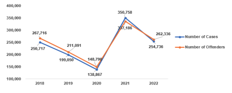
The image above (Figure 1) depicts the Arrested Drug Cases and Drug Offenders in Thailand during 2018 - 2022 . We can thus subset our analysis later on into years of 2020 and 2021.
1.2 Getting the Data into R Environment
1.2.1 Thailand Drug Offenses [2017 - 2022] - Kaggle (Aspatial Data)
drug_offenses <- read_parquet("data/aspatial/thai_drug_offenses_2017_2022.parquet") 1.2.2 Thailand - Subnational Administrative Boundaries at HDX (Spatial Data)
- Thailand administrative level 0 (country), 1 (province), 2 (district), and 3 (sub-district, tambon) boundaries. We will use admin1 - Province Level Boundary
thailand_sf <- st_read(dsn = "data/geospatial", layer="tha_admbnda_adm1_rtsd_20220121") %>%
select(ADM1_EN, geometry) %>%
st_transform(crs = 32648)Reading layer `tha_admbnda_adm1_rtsd_20220121' from data source
`/Users/jezelei/jezeleii/IS415-GA/Take-Home_Exercise/TakeHomeEx02/data/geospatial'
using driver `ESRI Shapefile'
Simple feature collection with 77 features and 16 fields
Geometry type: MULTIPOLYGON
Dimension: XY
Bounding box: xmin: 97.34336 ymin: 5.613038 xmax: 105.637 ymax: 20.46507
Geodetic CRS: WGS 84We will verify the coordinate reference systems of the Thailand object to ensure the assignment of the correct CRS value. We will go with UTM Zone 48N (EPSG: 32648), as this projection covers most of Thailand and works best for national-scale projects.
st_crs(thailand_sf)Coordinate Reference System:
User input: EPSG:32648
wkt:
PROJCRS["WGS 84 / UTM zone 48N",
BASEGEOGCRS["WGS 84",
ENSEMBLE["World Geodetic System 1984 ensemble",
MEMBER["World Geodetic System 1984 (Transit)"],
MEMBER["World Geodetic System 1984 (G730)"],
MEMBER["World Geodetic System 1984 (G873)"],
MEMBER["World Geodetic System 1984 (G1150)"],
MEMBER["World Geodetic System 1984 (G1674)"],
MEMBER["World Geodetic System 1984 (G1762)"],
MEMBER["World Geodetic System 1984 (G2139)"],
ELLIPSOID["WGS 84",6378137,298.257223563,
LENGTHUNIT["metre",1]],
ENSEMBLEACCURACY[2.0]],
PRIMEM["Greenwich",0,
ANGLEUNIT["degree",0.0174532925199433]],
ID["EPSG",4326]],
CONVERSION["UTM zone 48N",
METHOD["Transverse Mercator",
ID["EPSG",9807]],
PARAMETER["Latitude of natural origin",0,
ANGLEUNIT["degree",0.0174532925199433],
ID["EPSG",8801]],
PARAMETER["Longitude of natural origin",105,
ANGLEUNIT["degree",0.0174532925199433],
ID["EPSG",8802]],
PARAMETER["Scale factor at natural origin",0.9996,
SCALEUNIT["unity",1],
ID["EPSG",8805]],
PARAMETER["False easting",500000,
LENGTHUNIT["metre",1],
ID["EPSG",8806]],
PARAMETER["False northing",0,
LENGTHUNIT["metre",1],
ID["EPSG",8807]]],
CS[Cartesian,2],
AXIS["(E)",east,
ORDER[1],
LENGTHUNIT["metre",1]],
AXIS["(N)",north,
ORDER[2],
LENGTHUNIT["metre",1]],
USAGE[
SCOPE["Engineering survey, topographic mapping."],
AREA["Between 102°E and 108°E, northern hemisphere between equator and 84°N, onshore and offshore. Cambodia. China. Indonesia. Laos. Malaysia - West Malaysia. Mongolia. Russian Federation. Singapore. Thailand. Vietnam."],
BBOX[0,102,84,108]],
ID["EPSG",32648]]head(thailand_sf)Simple feature collection with 6 features and 1 field
Geometry type: MULTIPOLYGON
Dimension: XY
Bounding box: xmin: -18419.13 ymin: 1493846 xmax: 63151.73 ymax: 1641727
Projected CRS: WGS 84 / UTM zone 48N
ADM1_EN geometry
1 Bangkok MULTIPOLYGON (((25835.57 15...
2 Samut Prakan MULTIPOLYGON (((38002.87 15...
3 Nonthaburi MULTIPOLYGON (((-3347.358 1...
4 Pathum Thani MULTIPOLYGON (((56466.67 15...
5 Phra Nakhon Si Ayutthaya MULTIPOLYGON (((16427.34 16...
6 Ang Thong MULTIPOLYGON (((-2670.024 1...1.2.2.1 Multipolygon to Polygon
As observed from the HDX dataset, it uses multipolygon geometries. For spatial autocorrelation this may pose a problem in that the calculation of the centroid for a MULTIPOLYGON geometry may result in a point that lies outside the area of interest, such as in the sea or another inappropriate location.
This happens because the centroid is calculated based on the combined geometry of all constituent polygons, which can be spread across multiple, disjoint regions. Such misplaced centroids can distort spatial relationships and affect the accuracy of spatial autocorrelation analysis, leading to misleading interpretations of the data.
To mitigate this issue, converting MULTIPOLYGON geometries to POLYGON or selecting a representative polygon can ensure centroids are more accurately placed within each region, improving the reliability of spatial analysis.
- We use the
st_cast()to break up the data into individual polygons - Calculate the area of each individual polygon and create a new column Shape_Area_Polygon
- We keep the polygon relating to the corresponding shape_area
- Resultant dataset will have POLYGON geometries
thailand_sf <- thailand_sf %>%
st_cast("POLYGON") %>%
group_by(ADM1_EN) %>%
summarise(geometry = st_union(geometry)) %>%
ungroup()Warning in st_cast.sf(., "POLYGON"): repeating attributes for all
sub-geometries for which they may not be constantthailand_sf <- thailand_sf %>%
mutate(Shape_Area_Polygon = st_area(geometry) / 1e6)
head(thailand_sf)Simple feature collection with 6 features and 2 fields
Geometry type: POLYGON
Dimension: XY
Bounding box: xmin: -18419.13 ymin: 1459180 xmax: 506444.2 ymax: 2040603
Projected CRS: WGS 84 / UTM zone 48N
# A tibble: 6 × 3
ADM1_EN geometry Shape_Area_Polygon
<chr> <POLYGON [m]> [m^2]
1 Amnat Charoen ((495707.6 1800305, 495711.8 1800298, 495716… 3260.
2 Ang Thong ((-2670.024 1641280, -2648.057 1641233, -264… 949.
3 Bangkok ((25835.57 1547090, 25877.6 1547067, 25943.0… 1579.
4 Bueng Kan ((331560.4 2040603, 331689.4 2040595, 331900… 3990.
5 Buri Ram ((278292.9 1747365, 278292.9 1747365, 278292… 10062.
6 Chachoengsao ((74303.68 1548625, 74443.42 1548608, 74483.… 5181.1.2.3 Thailand Population Dataset from HDX (2023)
To obtain only relevant data, we filter it down to ADM1_EN, T_TL, ADM1_PCODE(Total Population within the Province)
population_sf <- read_csv("data/aspatial/tha_admpop_adm1_2023.csv") %>%
select(ADM1_EN, T_TL, ADM1_PCODE)Rows: 77 Columns: 60
── Column specification ────────────────────────────────────────────────────────
Delimiter: ","
chr (5): ISO3, ADM0_EN, ADM0_PCODE, ADM1_EN, ADM1_PCODE
dbl (55): year, F_TL, M_TL, T_TL, F_00_04, F_05_09, F_10_14, F_15_19, F_20_2...
ℹ Use `spec()` to retrieve the full column specification for this data.
ℹ Specify the column types or set `show_col_types = FALSE` to quiet this message.colnames(population_sf)[1] "ADM1_EN" "T_TL" "ADM1_PCODE"We perform a relational join for the Thailand Population Dataset and Thailand Boundary Dataset, which will aid in subsequent analysis. Because they are both from HDX, data inconsistency is less likely to occur:
thailand_population_sf <- thailand_sf %>%
left_join(population_sf, by="ADM1_EN")head(thailand_population_sf)Simple feature collection with 6 features and 4 fields
Geometry type: POLYGON
Dimension: XY
Bounding box: xmin: -18419.13 ymin: 1459180 xmax: 506444.2 ymax: 2040603
Projected CRS: WGS 84 / UTM zone 48N
# A tibble: 6 × 5
ADM1_EN geometry Shape_Area_Polygon T_TL ADM1_PCODE
<chr> <POLYGON [m]> [m^2] <dbl> <chr>
1 Amnat Charoen ((495707.6 1800305, 495711… 3260. 1.80e5 TH37
2 Ang Thong ((-2670.024 1641280, -2648… 949. 2.01e5 TH15
3 Bangkok ((25835.57 1547090, 25877.… 1579. 1.15e7 TH10
4 Bueng Kan ((331560.4 2040603, 331689… 3990. 2.84e5 TH38
5 Buri Ram ((278292.9 1747365, 278292… 10062. 8.88e5 TH31
6 Chachoengsao ((74303.68 1548625, 74443.… 5181. 7.31e5 TH24 1.3 Data Cleaning
1.3.1 Fuzzy Matching - Name Matching
After inspecting the 2 dataests, we see we can potentially perform a relational join using the Province Names (in English). However we have to check and ensure the names match up to perform a 1-1 mapping, and avoid the potential erroneous loss of data.
In the code chunk below, we cleanse the province names for the datasets:
clean_names <- function(column) {
gsub("\\s+", " ", trimws(column))
}
drug_offenses$province_en <- clean_names(drug_offenses$province_en)
thailand_population_sf$ADM1_EN <- clean_names(thailand_population_sf$ADM1_EN)
prov_not_in_thai_sf <- setdiff(unique(drug_offenses$province_en), unique(thailand_population_sf$ADM1_EN))
prov_not_in_offenses_sf <- setdiff(unique(thailand_population_sf$ADM1_EN), unique(drug_offenses$province_en))
# Create a lookup table for mismatched names
lookup <- data.frame(
province_en = prov_not_in_thai_sf,
correct_province = prov_not_in_offenses_sf
)
drug_offenses <- drug_offenses %>%
left_join(lookup, by = "province_en") %>%
mutate(province_en = coalesce(correct_province, province_en)) %>%
select(-correct_province)
lookup province_en correct_province
1 Loburi Bueng Kan
2 buogkan Lop Burisetdiff()function is used to perform an exact match.Because it does not account for whitespace, I used the
trimws()function to see if there are potential names missed out due to mismatches.
The code chunk above follows the naming convention done in the Thailand dataset, because it follows HDX dataset cleaning practices. It performs a relational join and replaces mismatched names. We keep the original if no match is found in the lookup data frame and remove the temporary replacement column at the end
unique(drug_offenses$province_en) [1] "Bangkok" "Chai Nat"
[3] "Nonthaburi" "Pathum Thani"
[5] "Phra Nakhon Si Ayutthaya" "Bueng Kan"
[7] "Samut Prakan" "Saraburi"
[9] "Sing Buri" "Ang Thong"
[11] "Chanthaburi" "Chachoengsao"
[13] "Chon Buri" "Trat"
[15] "Nakhon Nayok" "Prachin Buri"
[17] "Rayong" "Sa Kaeo"
[19] "Chaiyaphum" "Nakhon Ratchasima"
[21] "Buri Ram" "Yasothon"
[23] "Si Sa Ket" "Surin"
[25] "Amnat Charoen" "Ubon Ratchathani"
[27] "Kalasin" "Khon Kaen"
[29] "Nakhon Phanom" "Lop Buri"
[31] "Maha Sarakham" "Mukdahan"
[33] "Roi Et" "Loei"
[35] "Sakon Nakhon" "Nong Khai"
[37] "Nong Bua Lam Phu" "Udon Thani"
[39] "Chiang Rai" "Chiang Mai"
[41] "Nan" "Phayao"
[43] "Phrae" "Mae Hong Son"
[45] "Lampang" "Lamphun"
[47] "Kamphaeng Phet" "Tak"
[49] "Nakhon Sawan" "Phichit"
[51] "Phitsanulok" "Phetchabun"
[53] "Sukhothai" "Uttaradit"
[55] "Uthai Thani" "Kanchanaburi"
[57] "Nakhon Pathom" "Prachuap Khiri Khan"
[59] "Phetchaburi" "Ratchaburi"
[61] "Samut Songkhram" "Samut Sakhon"
[63] "Suphan Buri" "Krabi"
[65] "Chumphon" "Nakhon Si Thammarat"
[67] "Phangnga" "Phuket"
[69] "Ranong" "Surat Thani"
[71] "Trang" "Narathiwat"
[73] "Pattani" "Phatthalung"
[75] "Yala" "Songkhla"
[77] "Satun" As we are investigating indicators of drug abuse, we can drop columns with ‘suspects_in’ for the different cases since they are more of an indicator for law enforcement, rather than the socio-cultural and health aspects that may be more relevant.
drug_offenses <- drug_offenses %>%
filter(!grepl("^suspects_in", types_of_drug_offenses)) %>%
select(-province_th)unique(drug_offenses$types_of_drug_offenses)[1] "drug_use_cases"
[2] "possession_cases"
[3] "possession_with_intent_to_distribute_cases"
[4] "trafficking_cases"
[5] "production_cases"
[6] "import_cases"
[7] "export_cases"
[8] "conspiracy_cases" By performing EDA on the yearly data, we first aggregate the number of cases per indicator by year:
yearly_statistics <- drug_offenses %>%
group_by(fiscal_year, types_of_drug_offenses) %>%
summarize(total_cases = sum(no_cases, na.rm=TRUE)) %>%
pivot_wider(
names_from = types_of_drug_offenses,
values_from = total_cases
) %>%
ungroup()`summarise()` has grouped output by 'fiscal_year'. You can override using the
`.groups` argument.total_cases_per_type <- yearly_statistics %>%
select(-fiscal_year) %>%
summarize(across(everything(), sum, na.rm=TRUE))Warning: There was 1 warning in `summarize()`.
ℹ In argument: `across(everything(), sum, na.rm = TRUE)`.
Caused by warning:
! The `...` argument of `across()` is deprecated as of dplyr 1.1.0.
Supply arguments directly to `.fns` through an anonymous function instead.
# Previously
across(a:b, mean, na.rm = TRUE)
# Now
across(a:b, \(x) mean(x, na.rm = TRUE))total_cases_all <- sum(total_cases_per_type)
proportion_cases <- total_cases_per_type / total_cases_all * 100
proportion_cases <- proportion_cases %>%
pivot_longer(cols = everything(),
names_to = "types_of_drug_offenses",
values_to = "proportion") %>%
arrange(desc(proportion))
proportion_cases# A tibble: 8 × 2
types_of_drug_offenses proportion
<chr> <dbl>
1 drug_use_cases 47.6
2 possession_cases 28.0
3 possession_with_intent_to_distribute_cases 17.7
4 trafficking_cases 3.56
5 production_cases 2.96
6 conspiracy_cases 0.0478
7 import_cases 0.0447
8 export_cases 0.004371.3.3 Visualizing Proportion of Cases in Thailand
ggplot(proportion_cases, aes(x = reorder(types_of_drug_offenses, proportion), y = proportion)) +
geom_col(fill = "red") +
geom_text(aes(label = round(proportion,1), hjust = -0.1)) +
coord_flip() + # Flip coordinates to have horizontal bars
labs(
title = "Proportion of Total Drug Offense (Cases Over 5 Years)2017 - 2022) ",
x = "Types of Drug Offenses",
y = "Proportion (%)"
) +
theme_minimal() +
ylim(0, max(proportion_cases$proportion) + 10)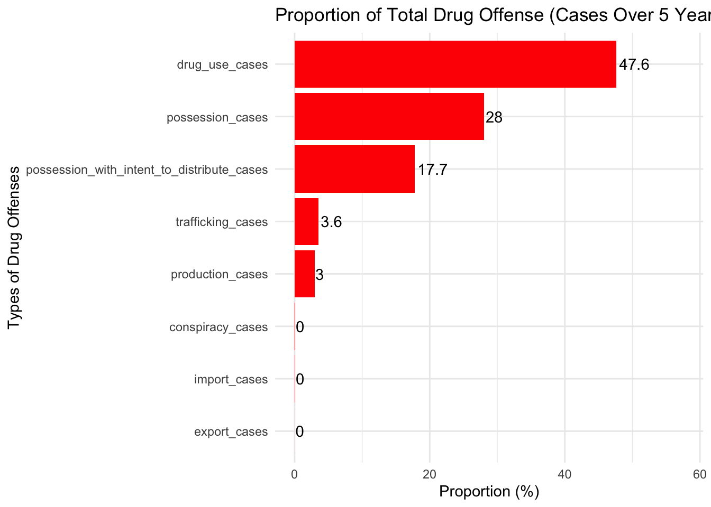
Lastly, based on yearly statistics, we aggregate data by focusing on these offense types:
- Drug Use Cases
- Trafficking
While trafficking only accounts for ~3% of cases, the proximity of ‘The Golden Triangle’ make the country a location of interest in drug trafficking in SEA, on top of the rampant drug use in the region.
drug_offenses <- drug_offenses %>%
filter(types_of_drug_offenses %in% c("drug_use_cases","trafficking_cases")) %>%
pivot_wider(
names_from = types_of_drug_offenses,
values_from = no_cases
) %>%
ungroup()
head(drug_offenses)# A tibble: 6 × 4
fiscal_year province_en drug_use_cases trafficking_cases
<int> <chr> <int> <int>
1 2017 Bangkok 11871 950
2 2017 Chai Nat 200 210
3 2017 Nonthaburi 553 118
4 2017 Pathum Thani 450 83
5 2017 Phra Nakhon Si Ayutthaya 378 164
6 2017 Bueng Kan 727 261colnames(drug_offenses)[1] "fiscal_year" "province_en" "drug_use_cases"
[4] "trafficking_cases"drug_use_cases_offenses <- drug_offenses %>%
select(1:3) %>%
mutate(types_of_drug_offenses = "drug_use_cases") %>%
pivot_wider(
names_from = fiscal_year,
values_from = drug_use_cases
)
trafficking_cases_offenses <- drug_offenses %>%
select(1:2, 4) %>%
mutate(types_of_drug_offenses = "trafficking_cases") %>%
pivot_wider(
names_from = fiscal_year,
values_from = trafficking_cases
)drug_use_cases_offenses# A tibble: 77 × 8
province_en types_of_drug_offenses `2017` `2018` `2019` `2020` `2021` `2022`
<chr> <chr> <int> <int> <int> <int> <int> <int>
1 Bangkok drug_use_cases 11871 16480 15067 9724 9625 2755
2 Chai Nat drug_use_cases 200 422 957 822 763 617
3 Nonthaburi drug_use_cases 553 1661 1719 937 3202 809
4 Pathum Thani drug_use_cases 450 1823 2994 1192 1747 1599
5 Phra Nakhon… drug_use_cases 378 1123 2470 1745 1766 1298
6 Bueng Kan drug_use_cases 727 1850 2262 1487 1925 985
7 Samut Prakan drug_use_cases 820 3015 4602 1816 2515 1953
8 Saraburi drug_use_cases 69 628 843 744 1106 839
9 Sing Buri drug_use_cases 127 402 582 309 683 493
10 Ang Thong drug_use_cases 208 660 657 423 755 784
# ℹ 67 more rowstrafficking_cases_offenses# A tibble: 77 × 8
province_en types_of_drug_offenses `2017` `2018` `2019` `2020` `2021` `2022`
<chr> <chr> <int> <int> <int> <int> <int> <int>
1 Bangkok trafficking_cases 950 623 428 352 250 233
2 Chai Nat trafficking_cases 210 151 101 117 97 142
3 Nonthaburi trafficking_cases 118 113 72 80 60 31
4 Pathum Thani trafficking_cases 83 68 23 69 106 80
5 Phra Nakhon… trafficking_cases 164 164 124 167 112 72
6 Bueng Kan trafficking_cases 261 234 151 174 142 106
7 Samut Prakan trafficking_cases 201 112 76 136 159 199
8 Saraburi trafficking_cases 58 45 36 50 69 35
9 Sing Buri trafficking_cases 41 44 33 48 40 26
10 Ang Thong trafficking_cases 51 61 56 46 51 75
# ℹ 67 more rowsthailand_population_sfSimple feature collection with 77 features and 4 fields
Geometry type: GEOMETRY
Dimension: XY
Bounding box: xmin: -313055.3 ymin: 621843.5 xmax: 568269.6 ymax: 2271054
Projected CRS: WGS 84 / UTM zone 48N
# A tibble: 77 × 5
ADM1_EN geometry Shape_Area_Polygon T_TL ADM1_PCODE
* <chr> <GEOMETRY [m]> [m^2] <dbl> <chr>
1 Amnat Charoen POLYGON ((495707.6 180030… 3260. 1.80e5 TH37
2 Ang Thong POLYGON ((-2670.024 16412… 949. 2.01e5 TH15
3 Bangkok POLYGON ((25835.57 154709… 1579. 1.15e7 TH10
4 Bueng Kan POLYGON ((331560.4 204060… 3990. 2.84e5 TH38
5 Buri Ram POLYGON ((278292.9 174736… 10062. 8.88e5 TH31
6 Chachoengsao POLYGON ((74303.68 154862… 5181. 7.31e5 TH24
7 Chai Nat POLYGON ((-24181.19 17098… 2502. 2.10e5 TH18
8 Chaiyaphum POLYGON ((133164.1 185269… 12642. 6.94e5 TH36
9 Chanthaburi MULTIPOLYGON (((201062.9 … 6414. 4.20e5 TH22
10 Chiang Mai POLYGON ((-72871.25 22361… 22400. 1.79e6 TH50
# ℹ 67 more rows1.4 Performing Relational Join
We check for duplicates before joining:
duplicated_rows <- drug_offenses[duplicated(drug_offenses), ]
duplicated_rows# A tibble: 0 × 4
# ℹ 4 variables: fiscal_year <int>, province_en <chr>, drug_use_cases <int>,
# trafficking_cases <int>thai_drug_use_sf <- drug_use_cases_offenses %>%
left_join(thailand_population_sf, by = c("province_en" = "ADM1_EN")) %>%
rename(population_count = T_TL) %>%
st_as_sf()
thai_trafficking_sf <- trafficking_cases_offenses %>%
left_join(thailand_population_sf, by = c("province_en" = "ADM1_EN")) %>%
rename(population_count = T_TL) %>%
st_as_sf()We save the cleaned dataset in rds:
write_rds(thai_drug_use_sf, "data/rds/thai_drug_use_sf.rds")
write_rds(thai_trafficking_sf, "data/rds/thai_trafficking_sf.rds")thai_drug_use_sf <- read_rds("data/rds/thai_drug_use_sf.rds") %>%
st_transform(crs = 32648)
thai_trafficking_sf <- read_rds("data/rds/thai_trafficking_sf.rds") %>%
st_transform(crs = 32648)2.0 Visualizing Drug Abuse Indicators
We first focus on Drug Use Cases in Thailand, deriving the Drug Use Per Capita using the population dataset from HDX:
A key limitation to consider is that the population count is 2023 data, and does not account for temporal variations from 2017 - 2022 which the drug_offenses data spans.
colnames(thai_drug_use_sf) [1] "province_en" "types_of_drug_offenses" "2017"
[4] "2018" "2019" "2020"
[7] "2021" "2022" "geometry"
[10] "Shape_Area_Polygon" "population_count" "ADM1_PCODE" colnames(thai_trafficking_sf) [1] "province_en" "types_of_drug_offenses" "2017"
[4] "2018" "2019" "2020"
[7] "2021" "2022" "geometry"
[10] "Shape_Area_Polygon" "population_count" "ADM1_PCODE" thai_drug_use_sf <- thai_drug_use_sf %>%
mutate(
DUPC_2017 = `2017` / population_count,
DUPC_2018 = `2018` / population_count,
DUPC_2019 = `2019` / population_count,
DUPC_2020 = `2020` / population_count,
DUPC_2021 = `2021` / population_count,
DUPC_2022 = `2022` / population_count
)
thai_trafficking_sf <- thai_trafficking_sf %>%
mutate(
DTPC_2017 = `2017` / population_count,
DTPC_2018 = `2018` / population_count,
DTPC_2019 = `2019` / population_count,
DTPC_2020 = `2020` / population_count,
DTPC_2021 = `2021` / population_count,
DTPC_2022 = `2022` / population_count
)We visualize the distribution of cases per capita over time, with Blue representing Drug Use and Purple representing Trafficking
tmap_mode("plot")tmap mode set to plottingyears <- c("2017", "2018", "2019", "2020", "2021", "2022")
maps <- list()
for (year in years) {
map <- tm_shape(thai_drug_use_sf) +
tm_fill(paste0(year),
style = "jenks",
palette = "Blues",
legend.hist = TRUE,
legend.is.portrait = TRUE,
legend.hist.z = 0.1) +
tm_layout(legend.height = 0.45,
legend.width = 0.35,
legend.outside = FALSE,
legend.position = c("right", "bottom"),
frame = FALSE) +
tm_borders(alpha = 0.5)
maps[[year]] <- map
}
tmap_arrange(maps[[1]], maps[[2]], maps[[3]], maps[[4]], maps[[5]], maps[[6]],
ncol = 2) 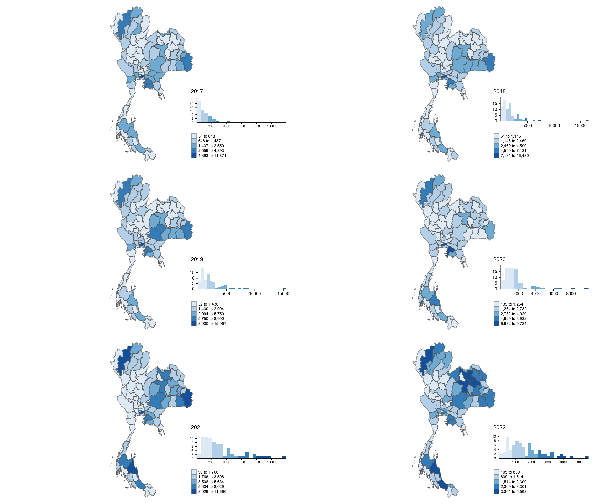
tmap_mode("plot")tmap mode set to plottingyears <- c("2017", "2018", "2019", "2020", "2021", "2022")
maps <- list()
for (year in years) {
map <- tm_shape(thai_trafficking_sf) +
tm_fill(paste0(year),
style = "jenks",
palette = "Purples",
legend.hist = TRUE,
legend.is.portrait = TRUE,
legend.hist.z = 0.1) +
tm_layout(legend.height = 0.45,
legend.width = 0.35,
legend.outside = FALSE,
legend.position = c("right", "bottom"),
frame = FALSE) +
tm_borders(alpha = 0.5)
maps[[year]] <- map
}
tmap_arrange(maps[[1]], maps[[2]], maps[[3]], maps[[4]], maps[[5]], maps[[6]],
ncol = 2) 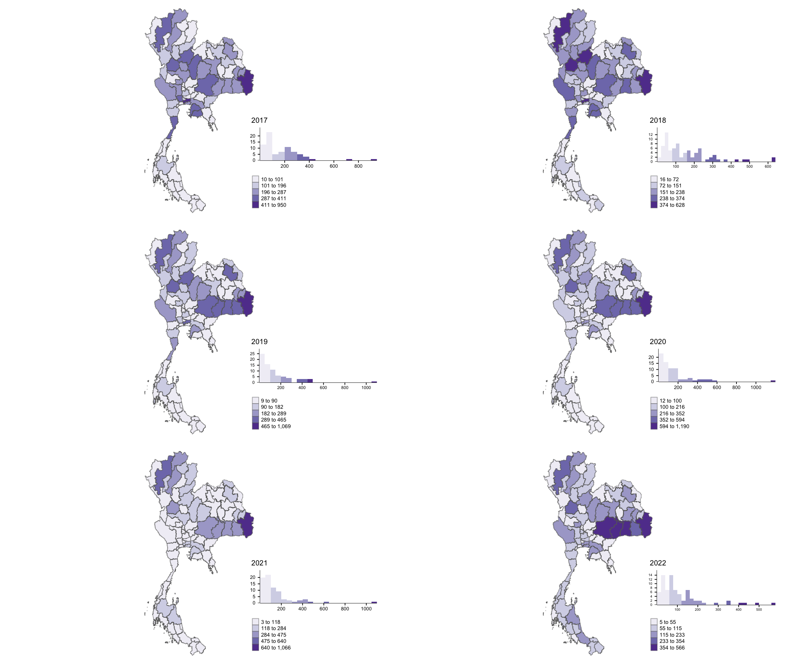
Just from preliminary observation of the visualization of the different indicators per capita:
Drug Use per Capita: From 2017 to 2022, drug use per capita in Thailand displays a varied distribution, with notable hotspots in the central and northern regions. The intensity fluctuates over the years, with a peak in 2022, indicating a rise in specific areas, suggesting persistent and increasing drug issues in those region
Trafficking Cases : Drug trafficking cases show a relatively stable pattern with high intensity in the eastern and some northern regions throughout 2017 to 2022, with no major expansion in geographical spread.
Important
For the scope of this assignment, I will investigate the spatial autocorrelation of the Drug Use per Capita in 2022 as well as Drug Trafficking per Capita in 2022 which is a year of interest based on preliminary observation.
3.0 Computing Contiguity Spatial Weights
3.1 Computing QUEEEN Contiguity Based Neighbours
The code chunk below is used to compute Queen Contiguity Weight Matrix, using the st_contiguity() function from the sfdep package.
geo <- st_geometry(thai_drug_use_sf)
wm_q <- st_contiguity(geo, queen=TRUE)
summary(wm_q)Neighbour list object:
Number of regions: 77
Number of nonzero links: 352
Percentage nonzero weights: 5.93692
Average number of links: 4.571429
1 region with no links:
68
2 disjoint connected subgraphs
Link number distribution:
0 1 2 3 4 5 6 7 8 9
1 1 5 17 15 17 10 5 4 2
1 least connected region:
14 with 1 link
2 most connected regions:
28 48 with 9 links
Interpretation
The summary report shows that there are 77 regions in Thailand, The most connected areas are Khon Kaen and Nakhon Sawan, with a neighbour of 9 links each. There is 1 region with no links, which is 68 (Phuket)
The code chunk below lists down the neighbours of the 2 most connected regions:
thai_drug_use_sf$province_en[68][1] "Phuket"thai_drug_use_sf$province_en[28][1] "Khon Kaen"thai_drug_use_sf$province_en[49][1] "Nakhon Sawan"To get the neighbour names of the most connected areas, we run the following code chunk
neighbors_28 <- wm_q[[28]]
neighbors_49 <- wm_q[[49]]
neighbor_names_28 <- thai_drug_use_sf$province_en[neighbors_28]
neighbor_names_49 <- thai_drug_use_sf$province_en[neighbors_49]
neighbor_names_28[1] "Chaiyaphum" "Nakhon Ratchasima" "Buri Ram"
[4] "Kalasin" "Maha Sarakham" "Loei"
[7] "Nong Bua Lam Phu" "Udon Thani" "Phetchabun" cat(rep("-", 50), sep = "", "\n")--------------------------------------------------neighbor_names_49[1] "Chai Nat" "Sing Buri" "Lop Buri" "Kamphaeng Phet"
[5] "Tak" "Phichit" "Phetchabun" "Uthai Thani" 3.2 Creating ROOK Contiguity Based Neighbours
geo <- st_geometry(thai_drug_use_sf)
wm_r <- st_contiguity(geo, queen=FALSE)
summary(wm_r)Neighbour list object:
Number of regions: 77
Number of nonzero links: 352
Percentage nonzero weights: 5.93692
Average number of links: 4.571429
1 region with no links:
68
2 disjoint connected subgraphs
Link number distribution:
0 1 2 3 4 5 6 7 8 9
1 1 5 17 15 17 10 5 4 2
1 least connected region:
14 with 1 link
2 most connected regions:
28 48 with 9 linksWe can identify higher order neighbors with st_nb_lag() and the cumulative higher order neighbors with st_nb_lag_cumul().
st_nb_lag(wm_q, 2)Neighbour list object:
Number of regions: 77
Number of nonzero links: 632
Percentage nonzero weights: 10.65947
Average number of links: 8.207792
1 region with no links:
68
2 disjoint connected subgraphsst_nb_lag_cumul(wm_q, 2)Neighbour list object:
Number of regions: 77
Number of nonzero links: 984
Percentage nonzero weights: 16.59639
Average number of links: 12.77922
1 region with no links:
68
2 disjoint connected subgraphscat(rep("-", 50), sep = "", "\n")--------------------------------------------------st_nb_lag(wm_r, 2)Neighbour list object:
Number of regions: 77
Number of nonzero links: 632
Percentage nonzero weights: 10.65947
Average number of links: 8.207792
1 region with no links:
68
2 disjoint connected subgraphsst_nb_lag_cumul(wm_r, 2)Neighbour list object:
Number of regions: 77
Number of nonzero links: 984
Percentage nonzero weights: 16.59639
Average number of links: 12.77922
1 region with no links:
68
2 disjoint connected subgraphs
Interpretation
The output shows two different spatial weight configurations. The first has fewer links between regions and a lower percentage of nonzero weights, while the second is more densely connected with more links and higher neighbor averages, naturally because it identifies higher order neighbours.
#Things that could account for similarity (although theoretically Queen Contiguity should have more links) :
#Data Precision and Geometry:
The geometry of the polygons might be such that no region only shares a corner. In other words, all adjacent regions share boundaries (edges), and none of the regions are connected just by touching a vertex. This can occur if the polygons are digitized in a way that makes the regions connect primarily through edges.
Warning
This can arise because when we went from mutipolygon to polygon geometries, we took the largest polygon for each province, this affects vs Rook vs Queen Contiguity in the following ways:
Coversion of multipolygon to polygon can mean that the smaller polygons that provided vertex-only connections might have been discarded. Only shared edges remain and there are no polygons left that are just touching corners
3.3 Visualizing Contiguity Weights
Before proceeding, we will maintain the current use of m in our analysis to keep the precision in calculation, ensuring compatibility over time and standard interpretation of results. This is especially important in the longitude and latitude obtained from st_centroid (code chunk below) which are easting and northing values in meters, rather than geographic coordinates in degrees.
The code chunk below calculates the longitude and latitude values of the geometry column:
longitude <- map_dbl(thai_drug_use_sf$geometry, ~st_centroid(.x)[[1]])
latitude <- map_dbl(thai_drug_use_sf$geometry, ~st_centroid(.x)[[2]])
coords <- cbind(longitude, latitude)
head(coords) longitude latitude
[1,] 26492.164 1526801
[2,] -34842.960 1679204
[3,] 1827.181 1544166
[4,] 33467.801 1559209
[5,] 17202.482 1590593
[6,] 363656.392 20071303.3.1 Plotting QUEEN (BLUE) & ROOK (RED) Contiguity Based Neighbour Maps
par(mfrow = c(1, 3))
#Queen Contiguity
plot(thai_drug_use_sf$geometry, border = "lightgrey", main = "Queen Contiguity")
plot(wm_q, coords, pch = 19, cex = 0.6, add = TRUE, col = 'blue')
#Rook Contiguity
plot(thai_drug_use_sf$geometry, border = "lightgrey", main = "Rook Contiguity")
plot(wm_r, coords, pch = 19, cex = 0.6, add = TRUE, col = 'red')
plot(thai_drug_use_sf$geometry, border = "lightgrey", main = "Queen & Rook Contiguity")
plot(wm_q, coords, pch = 19, cex = 0.6, add = TRUE, col = adjustcolor('blue', alpha.f = 0.5))
plot(wm_r, coords, pch = 19, cex = 0.6, add = TRUE, col = adjustcolor('red', alpha.f = 0.5))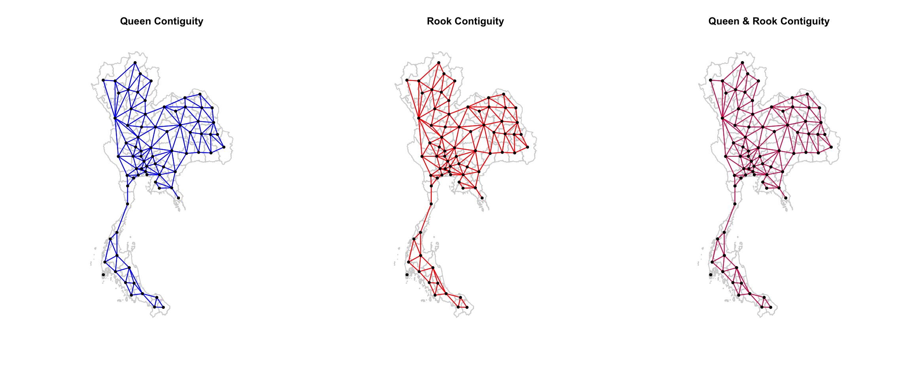
par(mfrow = c(1, 1))4.0 Computing Distance Based Neighbours
4.1 Determine the cut-off distance
We do so with the following steps:
Step 1: Determine the Set of k Nearest Neighbors (st_knn() in sfdep). We start with k = 1 to determine the minimum distance guaranteeing connectivity for all points, mirroring the knearneigh() from spdep.
Step 2: Convert the knn Object into a Neighbor List
Step 3: Calculate Distances Between Neighbors(nbdists() in spdep) | st_distance() in sfdep
Step 4: Remove the List Structure (unlist() in sfdep)
knn <- st_knn(coords, k = 1)
distances <- sapply(seq_along(knn), function(i){
neighbours <- knn[[i]]
st_distance(st_point(coords[i, ]), st_point(coords[neighbours, ]))
})
unlisted_distances <- unlist(distances)
summary(unlisted_distances) Min. 1st Qu. Median Mean 3rd Qu. Max.
21596 52044 64315 63383 76865 111489 The summary report shows the largest first nearest neighbour distance is 111.489 km, so using this as the upper threshold gives certainty that all units will have at least one neighbour (with the exception of Phuket).
4.2 Computing fixed distance weight Matrix
We compute the distance weight matrix using st_dnearneigh() as shown in the code chunk below
wm_d112 <- dnearneigh(coords, 0, 112000)
wm_d112Neighbour list object:
Number of regions: 77
Number of nonzero links: 354
Percentage nonzero weights: 5.970653
Average number of links: 4.597403
2 disjoint connected subgraphs
Interpretation
Interpretation: - Average Number of Links : 4.623377 - On average, each region has approximately 4.62 neighbours within the 112km distance threshold. - 2 disjoint connected subgraphs – 2regions are not connected between regions in different groups.
table(thai_drug_use_sf$province_en, card(wm_d112))
1 2 3 4 5 6 7 8 9 10 11 12 13 14
Amnat Charoen 0 0 0 1 0 0 0 0 0 0 0 0 0 0
Ang Thong 0 0 0 0 0 0 0 0 0 0 1 0 0 0
Bangkok 0 0 0 0 0 0 0 0 0 0 0 1 0 0
Bueng Kan 0 1 0 0 0 0 0 0 0 0 0 0 0 0
Buri Ram 0 1 0 0 0 0 0 0 0 0 0 0 0 0
Chachoengsao 0 0 0 0 0 0 0 0 1 0 0 0 0 0
Chai Nat 0 0 0 0 0 0 1 0 0 0 0 0 0 0
Chaiyaphum 0 1 0 0 0 0 0 0 0 0 0 0 0 0
Chanthaburi 0 0 0 0 1 0 0 0 0 0 0 0 0 0
Chiang Mai 0 0 1 0 0 0 0 0 0 0 0 0 0 0
Chiang Rai 1 0 0 0 0 0 0 0 0 0 0 0 0 0
Chon Buri 0 0 0 0 0 1 0 0 0 0 0 0 0 0
Chumphon 1 0 0 0 0 0 0 0 0 0 0 0 0 0
Kalasin 0 0 0 0 1 0 0 0 0 0 0 0 0 0
Kamphaeng Phet 0 0 0 0 1 0 0 0 0 0 0 0 0 0
Kanchanaburi 0 1 0 0 0 0 0 0 0 0 0 0 0 0
Khon Kaen 0 0 1 0 0 0 0 0 0 0 0 0 0 0
Krabi 0 0 0 0 1 0 0 0 0 0 0 0 0 0
Lampang 0 0 1 0 0 0 0 0 0 0 0 0 0 0
Lamphun 0 1 0 0 0 0 0 0 0 0 0 0 0 0
Loei 1 0 0 0 0 0 0 0 0 0 0 0 0 0
Lop Buri 0 0 0 0 0 0 1 0 0 0 0 0 0 0
Mae Hong Son 1 0 0 0 0 0 0 0 0 0 0 0 0 0
Maha Sarakham 0 0 1 0 0 0 0 0 0 0 0 0 0 0
Mukdahan 0 0 0 0 1 0 0 0 0 0 0 0 0 0
Nakhon Nayok 0 0 0 0 0 0 0 0 0 1 0 0 0 0
Nakhon Pathom 0 0 0 0 0 0 0 0 0 1 0 0 0 0
Nakhon Phanom 0 1 0 0 0 0 0 0 0 0 0 0 0 0
Nakhon Ratchasima 1 0 0 0 0 0 0 0 0 0 0 0 0 0
Nakhon Sawan 0 0 0 0 0 1 0 0 0 0 0 0 0 0
Nakhon Si Thammarat 0 0 0 1 0 0 0 0 0 0 0 0 0 0
Nan 0 1 0 0 0 0 0 0 0 0 0 0 0 0
Narathiwat 0 1 0 0 0 0 0 0 0 0 0 0 0 0
Nong Bua Lam Phu 0 0 0 1 0 0 0 0 0 0 0 0 0 0
Nong Khai 0 0 1 0 0 0 0 0 0 0 0 0 0 0
Nonthaburi 0 0 0 0 0 0 0 0 0 0 0 0 1 0
Pathum Thani 0 0 0 0 0 0 0 0 0 0 0 0 0 1
Pattani 0 0 1 0 0 0 0 0 0 0 0 0 0 0
Phangnga 0 0 1 0 0 0 0 0 0 0 0 0 0 0
Phatthalung 0 0 0 1 0 0 0 0 0 0 0 0 0 0
Phayao 0 1 0 0 0 0 0 0 0 0 0 0 0 0
Phetchabun 0 0 1 0 0 0 0 0 0 0 0 0 0 0
Phetchaburi 0 0 0 1 0 0 0 0 0 0 0 0 0 0
Phichit 0 0 0 1 0 0 0 0 0 0 0 0 0 0
Phitsanulok 0 0 0 1 0 0 0 0 0 0 0 0 0 0
Phra Nakhon Si Ayutthaya 0 0 0 0 0 0 0 0 0 0 0 0 1 0
Phrae 0 0 0 1 0 0 0 0 0 0 0 0 0 0
Phuket 0 1 0 0 0 0 0 0 0 0 0 0 0 0
Prachin Buri 0 0 0 0 0 1 0 0 0 0 0 0 0 0
Prachuap Khiri Khan 1 0 0 0 0 0 0 0 0 0 0 0 0 0
Ranong 0 1 0 0 0 0 0 0 0 0 0 0 0 0
Ratchaburi 0 0 0 0 1 0 0 0 0 0 0 0 0 0
Rayong 0 0 1 0 0 0 0 0 0 0 0 0 0 0
Roi Et 0 0 0 0 1 0 0 0 0 0 0 0 0 0
Sa Kaeo 0 0 1 0 0 0 0 0 0 0 0 0 0 0
Sakon Nakhon 0 0 0 1 0 0 0 0 0 0 0 0 0 0
Samut Prakan 0 0 0 0 0 0 0 0 0 1 0 0 0 0
Samut Sakhon 0 0 0 0 0 0 0 0 1 0 0 0 0 0
Samut Songkhram 0 0 0 0 0 0 0 1 0 0 0 0 0 0
Saraburi 0 0 0 0 0 0 0 0 1 0 0 0 0 0
Satun 0 0 1 0 0 0 0 0 0 0 0 0 0 0
Si Sa Ket 0 1 0 0 0 0 0 0 0 0 0 0 0 0
Sing Buri 0 0 0 0 0 0 0 0 0 1 0 0 0 0
Songkhla 0 0 0 1 0 0 0 0 0 0 0 0 0 0
Sukhothai 0 0 0 1 0 0 0 0 0 0 0 0 0 0
Suphan Buri 0 0 0 0 0 0 0 0 1 0 0 0 0 0
Surat Thani 0 0 0 1 0 0 0 0 0 0 0 0 0 0
Surin 0 1 0 0 0 0 0 0 0 0 0 0 0 0
Tak 1 0 0 0 0 0 0 0 0 0 0 0 0 0
Trang 0 0 0 1 0 0 0 0 0 0 0 0 0 0
Trat 1 0 0 0 0 0 0 0 0 0 0 0 0 0
Ubon Ratchathani 0 1 0 0 0 0 0 0 0 0 0 0 0 0
Udon Thani 0 0 1 0 0 0 0 0 0 0 0 0 0 0
Uthai Thani 0 0 0 0 0 1 0 0 0 0 0 0 0 0
Uttaradit 0 0 1 0 0 0 0 0 0 0 0 0 0 0
Yala 0 0 1 0 0 0 0 0 0 0 0 0 0 0
Yasothon 0 0 0 1 0 0 0 0 0 0 0 0 0 04.2.1 Plotting Fixed Distance Weight Matrix
plot(thai_drug_use_sf$geometry, border="lightgrey")
plot(wm_d112, coords, add=TRUE)
plot(knn, coords, add=TRUE, col="blue", length=0.08)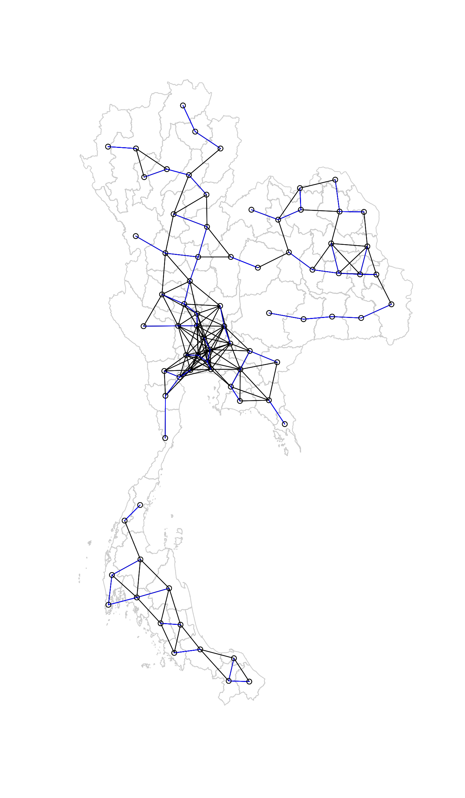
4.3 Visualizing Contiguity Weights
The blue lines show the links of the 1st nearest neighbours and the black lines show the links of the neighbours within the cut-off distance of 112km.
We can plot it side by side to see a closer look:
par(mfrow=c(1,2))
plot(thai_drug_use_sf$geometry, border="lightgrey", main="1st nearest neighbours")
plot(knn, coords, add=TRUE, col="blue", length=0.08)
plot(thai_drug_use_sf$geometry, border="lightgrey", main="Distance link")
plot(wm_d112, coords, add=TRUE, pch = 19, cex = 0.6)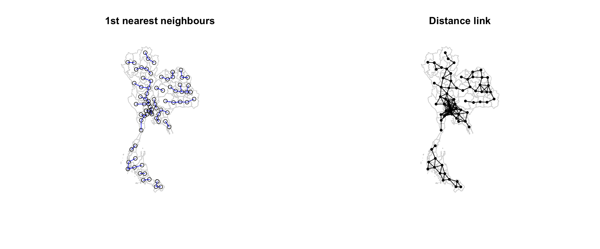
5.0 Weights based on IDW
We derive a spatial weight matrix based on the Inverse Distance methods.We use the st_inverse_distance() from the sfdep package to calculate inverse distance.
ids <- st_inverse_distance(wm_q, coords)
str(ids)List of 77
$ : num [1:6] 0.00332 0.00302 0.00463 0.00113 0.0017 ...
$ : num [1:4] 0.00236 0.0016 0.00156 0.00168
$ : num [1:4] 0.00332 0.00285 0.00204 0.00318
$ : num [1:6] 0.00302 0.00285 0.00283 0.00139 0.00105 ...
$ : num [1:7] 0.00204 0.00283 0.00163 0.00275 0.00106 ...
$ : num [1:3] 0.000878 0.001178 0.001045
$ : num [1:2] 0.00463 0.00129
$ : num [1:5] 0.001389 0.001627 0.002068 0.000811 0.001831
$ : num [1:5] 0.00236 0.00312 0.00156 0.00114 0.00168
$ : num [1:4] 0.00275 0.00312 0.00124 0.00202
$ : num [1:5] 0.000901 0.000938 0.001321 0.001309 0.000976
$ : num [1:8] 0.001126 0.001051 0.001289 0.000901 0.001921 ...
$ : num [1:3] 0.000938 0.001921 0.002238
$ : num 0.00132
$ : num [1:5] 0.001801 0.002068 0.00137 0.001816 0.000768
$ : num [1:4] 0.001831 0.001816 0.001278 0.000891
$ : num [1:2] 0.00131 0.00224
$ : num [1:5] 0.000976 0.001008 0.001278 0.00076 0.000751
$ : num [1:4] 0.000813 0.001095 0.000705 0.001301
$ : num [1:8] 0.000811 0.000768 0.000891 0.00076 0.000813 ...
$ : num [1:5] 0.000751 0.001081 0.001322 0.000554 0.000755
$ : num [1:5] 0.000869 0.002318 0.000874 0.001312 0.001778
$ : num [1:4] 0.000869 0.001302 0.001142 0.000758
$ : num [1:4] 0.001322 0.001302 0.000746 0.000865
$ : num [1:3] 0.00232 0.00114 0.00128
$ : num [1:3] 0.000874 0.001142 0.001137
$ : num [1:6] 0.000877 0.001177 0.001044 0.001234 0.00115 ...
$ : num [1:9] 0.001095 0.000594 0.000554 0.000877 0.001291 ...
$ : num [1:3] 0.000878 0.001094 0.001555
$ : num [1:8] 0.001064 0.001831 0.001561 0.00124 0.000705 ...
$ : num [1:5] 0.000755 0.000746 0.001177 0.001291 0.00143
$ : num [1:6] 0.001312 0.001284 0.001044 0.001094 0.000966 ...
$ : num [1:6] 0.001778 0.000758 0.000865 0.001234 0.00143 ...
$ : num [1:6] 0.000668 0.000713 0.001328 0.000766 0.000796 ...
$ : num [1:6] 0.001178 0.00115 0.001555 0.000851 0.000823 ...
$ : num [1:4] 0.001045 0.000713 0.000823 0.001747
$ : num [1:3] 0.0011 0.00133 0.00153
$ : num [1:6] 0.000836 0.000858 0.000766 0.000978 0.001747 ...
$ : num [1:3] 0.000595 0.001313 0.000578
$ : num [1:5] 0.000595 0.001353 0.001021 0.001274 0.000433
$ : num [1:3] 0.001246 0.000919 0.000787
$ : num [1:4] 0.001313 0.001246 0.000864 0.000807
$ : num [1:5] 0.000919 0.000864 0.001658 0.000904 0.00144
$ : num [1:2] 0.001353 0.000405
$ : num [1:7] 0.000578 0.001021 0.000807 0.001658 0.001577 ...
$ : num [1:3] 0.001274 0.001577 0.000637
$ : num [1:5] 0.001108 0.001022 0.001149 0.000769 0.00095
$ : num [1:9] 0.000433 0.000405 0.000514 0.000637 0.001108 ...
$ : num [1:8] 0.001603 0.001136 0.000968 0.001022 0.000539 ...
$ : num [1:4] 0.00115 0.00149 0.00121 0.00116
$ : num [1:6] 0.000796 0.000769 0.001207 0.000987 0.001061 ...
$ : num [1:7] 0.001301 0.000651 0.000757 0.000736 0.000797 ...
$ : num [1:6] 0.000904 0.000834 0.00095 0.000866 0.001061 ...
$ : num [1:4] 0.000787 0.00144 0.001179 0.000991
$ : num [1:5] 0.001564 0.000593 0.001228 0.001032 0.001073
$ : num [1:5] 0.000419 0.001032 0.000736 0.000768 0.001094
$ : num [1:7] 0.001698 0.003185 0.001529 0.000736 0.001397 ...
$ : num [1:2] 0.000897 0.000531
$ : num [1:3] 0.000897 0.001528 0.00162
$ : num [1:5] 0.000768 0.001397 0.001528 0.002295 0.001451
$ : num [1:3] 0.00162 0.00229 0.00293
$ : num [1:4] 0.002 0.00243 0.00145 0.00293
$ : num [1:7] 0.00168 0.00134 0.00168 0.00202 0.00107 ...
$ : num [1:4] 0.001128 0.00113 0.000992 0.001081
$ : num [1:3] 0.000531 0.001722 0.000697
$ : num [1:5] 0.001128 0.000932 0.001052 0.000992 0.000553
$ : num [1:3] 0.00113 0.000679 0.001168
$ : num(0)
$ : num [1:3] 0.001722 0.000679 0.000904
$ : num [1:5] 0.000992 0.000697 0.000932 0.001168 0.000904
$ : num [1:4] 0.00108 0.00105 0.0019 0.00116
$ : num [1:2] 0.00136 0.00184
$ : num [1:3] 0.00136 0.00163 0.00109
$ : num [1:4] 0.000992 0.001897 0.0012 0.001315
$ : num [1:3] 0.001839 0.001632 0.000894
$ : num [1:5] 0.000553 0.001088 0.0012 0.000894 0.001443
$ : num [1:3] 0.00116 0.00131 0.00144print(ids)[[1]]
[1] 0.003315192 0.003016607 0.004630397 0.001125688 0.001697770 0.002002553
[[2]]
[1] 0.002361373 0.001602581 0.001564500 0.001676585
[[3]]
[1] 0.003315192 0.002854311 0.002044693 0.003184795
[[4]]
[1] 0.003016607 0.002854311 0.002828972 0.001389322 0.001050532 0.001801335
[[5]]
[1] 0.002044693 0.002828972 0.001627032 0.002749528 0.001064333 0.001529214
[7] 0.001336418
[[6]]
[1] 0.000878389 0.001178208 0.001044633
[[7]]
[1] 0.004630397 0.001289428
[[8]]
[1] 0.0013893225 0.0016270324 0.0020680379 0.0008111102 0.0018306120
[[9]]
[1] 0.002361373 0.003119182 0.001560582 0.001135777 0.001683755
[[10]]
[1] 0.002749528 0.003119182 0.001239663 0.002023719
[[11]]
[1] 0.0009014757 0.0009384743 0.0013214513 0.0013085278 0.0009759728
[[12]]
[1] 0.0011256880 0.0010505316 0.0012894281 0.0009014757 0.0019214541
[6] 0.0013695052 0.0018308493 0.0010083793
[[13]]
[1] 0.0009384743 0.0019214541 0.0022377415
[[14]]
[1] 0.001321451
[[15]]
[1] 0.0018013349 0.0020680379 0.0013695052 0.0018159798 0.0007680623
[[16]]
[1] 0.0018308493 0.0018159798 0.0012779578 0.0008914841
[[17]]
[1] 0.001308528 0.002237741
[[18]]
[1] 0.0009759728 0.0010083793 0.0012779578 0.0007601302 0.0007508763
[[19]]
[1] 0.0008127504 0.0010952398 0.0007054238 0.0013009821
[[20]]
[1] 0.0008111102 0.0007680623 0.0008914841 0.0007601302 0.0008127504
[6] 0.0010811484 0.0005938114 0.0007661711
[[21]]
[1] 0.0007508763 0.0010811484 0.0013220627 0.0005540413 0.0007546700
[[22]]
[1] 0.0008693913 0.0023180705 0.0008738794 0.0013119141 0.0017783772
[[23]]
[1] 0.0008693913 0.0013015667 0.0011417918 0.0007582891
[[24]]
[1] 0.0013220627 0.0013015667 0.0007462076 0.0008646900
[[25]]
[1] 0.002318071 0.001136674 0.001283745
[[26]]
[1] 0.0008738794 0.0011417918 0.0011366739
[[27]]
[1] 0.0008768467 0.0011772829 0.0010437375 0.0012341993 0.0011496588
[6] 0.0008362915
[[28]]
[1] 0.0010952398 0.0005938114 0.0005540413 0.0008768467 0.0012913982
[6] 0.0006684975 0.0011046500 0.0008582251 0.0006505098
[[29]]
[1] 0.000878389 0.001094256 0.001554845
[[30]]
[1] 0.0010643325 0.0018306120 0.0015605821 0.0012396628 0.0007054238
[6] 0.0007661711 0.0009678872 0.0007567931
[[31]]
[1] 0.0007546700 0.0007462076 0.0011772829 0.0012913982 0.0014303042
[[32]]
[1] 0.0013119141 0.0012837448 0.0010437375 0.0010942557 0.0009658427
[6] 0.0008509267
[[33]]
[1] 0.0017783772 0.0007582891 0.0008646900 0.0012341993 0.0014303042
[6] 0.0009658427
[[34]]
[1] 0.0006684975 0.0007134550 0.0013282229 0.0007662463 0.0007961576
[6] 0.0007359408
[[35]]
[1] 0.0011782085 0.0011496588 0.0015548448 0.0008509267 0.0008226040
[6] 0.0009781706
[[36]]
[1] 0.001044633 0.000713455 0.000822604 0.001747051
[[37]]
[1] 0.001104650 0.001328223 0.001528848
[[38]]
[1] 0.0008362915 0.0008582251 0.0007662463 0.0009781706 0.0017470507
[6] 0.0015288477
[[39]]
[1] 0.0005949243 0.0013127120 0.0005775104
[[40]]
[1] 0.0005949243 0.0013533896 0.0010208959 0.0012736404 0.0004330871
[[41]]
[1] 0.0012461498 0.0009185291 0.0007866881
[[42]]
[1] 0.0013127120 0.0012461498 0.0008642176 0.0008065710
[[43]]
[1] 0.0009185291 0.0008642176 0.0016580351 0.0009043097 0.0014401507
[[44]]
[1] 0.0013533896 0.0004050562
[[45]]
[1] 0.0005775104 0.0010208959 0.0008065710 0.0016580351 0.0015770331
[6] 0.0005137365 0.0008337361
[[46]]
[1] 0.0012736404 0.0015770331 0.0006368745
[[47]]
[1] 0.0011083440 0.0010224582 0.0011487366 0.0007692196 0.0009500116
[[48]]
[1] 0.0004330871 0.0004050562 0.0005137365 0.0006368745 0.0011083440
[6] 0.0005390168 0.0008660228 0.0005930179 0.0004194751
[[49]]
[1] 0.0016025811 0.0011357769 0.0009678872 0.0010224582 0.0005390168
[6] 0.0014880643 0.0007969962 0.0012281481
[[50]]
[1] 0.001148737 0.001488064 0.001207034 0.001159642
[[51]]
[1] 0.0007961576 0.0007692196 0.0012070337 0.0009872524 0.0010607131
[6] 0.0011788056
[[52]]
[1] 0.0013009821 0.0006505098 0.0007567931 0.0007359408 0.0007969962
[6] 0.0011596424 0.0009872524
[[53]]
[1] 0.0009043097 0.0008337361 0.0009500116 0.0008660228 0.0010607131
[6] 0.0009913886
[[54]]
[1] 0.0007866881 0.0014401507 0.0011788056 0.0009913886
[[55]]
[1] 0.0015644999 0.0005930179 0.0012281481 0.0010319581 0.0010726557
[[56]]
[1] 0.0004194751 0.0010319581 0.0007359178 0.0007684688 0.0010943099
[[57]]
[1] 0.0016977702 0.0031847953 0.0015292139 0.0007359178 0.0013974726
[6] 0.0024342521 0.0012539862
[[58]]
[1] 0.0008969484 0.0005305747
[[59]]
[1] 0.0008969484 0.0015276982 0.0016200705
[[60]]
[1] 0.0007684688 0.0013974726 0.0015276982 0.0022947120 0.0014508421
[[61]]
[1] 0.001620070 0.002294712 0.002932727
[[62]]
[1] 0.002002553 0.002434252 0.001450842 0.002932727
[[63]]
[1] 0.001676585 0.001336418 0.001683755 0.002023719 0.001072656 0.001094310
[7] 0.001253986
[[64]]
[1] 0.0011280034 0.0011297514 0.0009924372 0.0010810291
[[65]]
[1] 0.0005305747 0.0017218617 0.0006970052
[[66]]
[1] 0.0011280034 0.0009317490 0.0010515220 0.0009922622 0.0005527059
[[67]]
[1] 0.0011297514 0.0006793504 0.0011683896
[[68]]
numeric(0)
[[69]]
[1] 0.0017218617 0.0006793504 0.0009044108
[[70]]
[1] 0.0009924372 0.0006970052 0.0009317490 0.0011683896 0.0009044108
[[71]]
[1] 0.001081029 0.001051522 0.001897001 0.001163891
[[72]]
[1] 0.001357908 0.001839165
[[73]]
[1] 0.001357908 0.001631630 0.001088143
[[74]]
[1] 0.0009922622 0.0018970008 0.0012004480 0.0013147666
[[75]]
[1] 0.0018391654 0.0016316305 0.0008936034
[[76]]
[1] 0.0005527059 0.0010881434 0.0012004480 0.0008936034 0.0014431917
[[77]]
[1] 0.001163891 0.001314767 0.0014431926.0 Row-standardized Weights Matrix
In this section, we assign weights to each neigbouring polygon, where the neighbouring polygon will be assigned equal weight (style=“W). We utilize the st_weights() to do this, and set the attribute allow_zero=TRUE to account for Region 68 (Phuket), allowing for lists of non-neighbours.
Row-standardized Weights
This tab shows the Row-standardized weights (W) for each region.
The allow_zero = TRUE parameter ensures that Phuket (which has no neighbors) is included in the spatial weights matrix with a weight of zero. This allows it to remain in the analysis without artificially adding neighbors.
rswm_q <- st_weights(wm_q, style = "W", allow_zero=TRUE)
rswm_q[[1]]
[1] 0.1666667 0.1666667 0.1666667 0.1666667 0.1666667 0.1666667
[[2]]
[1] 0.25 0.25 0.25 0.25
[[3]]
[1] 0.25 0.25 0.25 0.25
[[4]]
[1] 0.1666667 0.1666667 0.1666667 0.1666667 0.1666667 0.1666667
[[5]]
[1] 0.1428571 0.1428571 0.1428571 0.1428571 0.1428571 0.1428571 0.1428571
[[6]]
[1] 0.3333333 0.3333333 0.3333333
[[7]]
[1] 0.5 0.5
[[8]]
[1] 0.2 0.2 0.2 0.2 0.2
[[9]]
[1] 0.2 0.2 0.2 0.2 0.2
[[10]]
[1] 0.25 0.25 0.25 0.25
[[11]]
[1] 0.2 0.2 0.2 0.2 0.2
[[12]]
[1] 0.125 0.125 0.125 0.125 0.125 0.125 0.125 0.125
[[13]]
[1] 0.3333333 0.3333333 0.3333333
[[14]]
[1] 1
[[15]]
[1] 0.2 0.2 0.2 0.2 0.2
[[16]]
[1] 0.25 0.25 0.25 0.25
[[17]]
[1] 0.5 0.5
[[18]]
[1] 0.2 0.2 0.2 0.2 0.2
[[19]]
[1] 0.25 0.25 0.25 0.25
[[20]]
[1] 0.125 0.125 0.125 0.125 0.125 0.125 0.125 0.125
[[21]]
[1] 0.2 0.2 0.2 0.2 0.2
[[22]]
[1] 0.2 0.2 0.2 0.2 0.2
[[23]]
[1] 0.25 0.25 0.25 0.25
[[24]]
[1] 0.25 0.25 0.25 0.25
[[25]]
[1] 0.3333333 0.3333333 0.3333333
[[26]]
[1] 0.3333333 0.3333333 0.3333333
[[27]]
[1] 0.1666667 0.1666667 0.1666667 0.1666667 0.1666667 0.1666667
[[28]]
[1] 0.1111111 0.1111111 0.1111111 0.1111111 0.1111111 0.1111111 0.1111111
[8] 0.1111111 0.1111111
[[29]]
[1] 0.3333333 0.3333333 0.3333333
[[30]]
[1] 0.125 0.125 0.125 0.125 0.125 0.125 0.125 0.125
[[31]]
[1] 0.2 0.2 0.2 0.2 0.2
[[32]]
[1] 0.1666667 0.1666667 0.1666667 0.1666667 0.1666667 0.1666667
[[33]]
[1] 0.1666667 0.1666667 0.1666667 0.1666667 0.1666667 0.1666667
[[34]]
[1] 0.1666667 0.1666667 0.1666667 0.1666667 0.1666667 0.1666667
[[35]]
[1] 0.1666667 0.1666667 0.1666667 0.1666667 0.1666667 0.1666667
[[36]]
[1] 0.25 0.25 0.25 0.25
[[37]]
[1] 0.3333333 0.3333333 0.3333333
[[38]]
[1] 0.1666667 0.1666667 0.1666667 0.1666667 0.1666667 0.1666667
[[39]]
[1] 0.3333333 0.3333333 0.3333333
[[40]]
[1] 0.2 0.2 0.2 0.2 0.2
[[41]]
[1] 0.3333333 0.3333333 0.3333333
[[42]]
[1] 0.25 0.25 0.25 0.25
[[43]]
[1] 0.2 0.2 0.2 0.2 0.2
[[44]]
[1] 0.5 0.5
[[45]]
[1] 0.1428571 0.1428571 0.1428571 0.1428571 0.1428571 0.1428571 0.1428571
[[46]]
[1] 0.3333333 0.3333333 0.3333333
[[47]]
[1] 0.2 0.2 0.2 0.2 0.2
[[48]]
[1] 0.1111111 0.1111111 0.1111111 0.1111111 0.1111111 0.1111111 0.1111111
[8] 0.1111111 0.1111111
[[49]]
[1] 0.125 0.125 0.125 0.125 0.125 0.125 0.125 0.125
[[50]]
[1] 0.25 0.25 0.25 0.25
[[51]]
[1] 0.1666667 0.1666667 0.1666667 0.1666667 0.1666667 0.1666667
[[52]]
[1] 0.1428571 0.1428571 0.1428571 0.1428571 0.1428571 0.1428571 0.1428571
[[53]]
[1] 0.1666667 0.1666667 0.1666667 0.1666667 0.1666667 0.1666667
[[54]]
[1] 0.25 0.25 0.25 0.25
[[55]]
[1] 0.2 0.2 0.2 0.2 0.2
[[56]]
[1] 0.2 0.2 0.2 0.2 0.2
[[57]]
[1] 0.1428571 0.1428571 0.1428571 0.1428571 0.1428571 0.1428571 0.1428571
[[58]]
[1] 0.5 0.5
[[59]]
[1] 0.3333333 0.3333333 0.3333333
[[60]]
[1] 0.2 0.2 0.2 0.2 0.2
[[61]]
[1] 0.3333333 0.3333333 0.3333333
[[62]]
[1] 0.25 0.25 0.25 0.25
[[63]]
[1] 0.1428571 0.1428571 0.1428571 0.1428571 0.1428571 0.1428571 0.1428571
[[64]]
[1] 0.25 0.25 0.25 0.25
[[65]]
[1] 0.3333333 0.3333333 0.3333333
[[66]]
[1] 0.2 0.2 0.2 0.2 0.2
[[67]]
[1] 0.3333333 0.3333333 0.3333333
[[68]]
NULL
[[69]]
[1] 0.3333333 0.3333333 0.3333333
[[70]]
[1] 0.2 0.2 0.2 0.2 0.2
[[71]]
[1] 0.25 0.25 0.25 0.25
[[72]]
[1] 0.5 0.5
[[73]]
[1] 0.3333333 0.3333333 0.3333333
[[74]]
[1] 0.25 0.25 0.25 0.25
[[75]]
[1] 0.3333333 0.3333333 0.3333333
[[76]]
[1] 0.2 0.2 0.2 0.2 0.2
[[77]]
[1] 0.3333333 0.3333333 0.3333333
attr(,"mode")
[1] "binary"
attr(,"W")
[1] TRUE
attr(,"comp")
attr(,"comp")$d
[1] 6 4 4 6 7 3 2 5 5 4 5 8 3 1 5 4 2 5 4 8 5 5 4 4 3 3 6 9 3 8 5 6 6 6 6 4 3 6
[39] 3 5 3 4 5 2 7 3 5 9 8 4 6 7 6 4 5 5 7 2 3 5 3 4 7 4 3 5 3 0 3 5 4 2 3 4 3 5
[77] 3Recall that the two most connected regions are 28 and 48. If we take a closer look we can see the weight of their neighbours for further analysis, compared to the least connected 14 (with the exception of 68):
rswm_q[[28]][1] 0.1111111 0.1111111 0.1111111 0.1111111 0.1111111 0.1111111 0.1111111
[8] 0.1111111 0.1111111rswm_q[[48]][1] 0.1111111 0.1111111 0.1111111 0.1111111 0.1111111 0.1111111 0.1111111
[8] 0.1111111 0.1111111rswm_q[[14]][1] 1For 28 and 48, each neigbour is assigned 0.1111 of the total weight, meaning when computing the average neighbouring Drug Use Per Capita Values, each neigbour’s Drug Use PC will be multiplied by 0.1111 before being derived.
summary(unlist(rswm_q)) Min. 1st Qu. Median Mean 3rd Qu. Max.
0.1111 0.1667 0.2000 0.2159 0.2500 1.0000 Binary Weights
This tab shows the Binary weights (B) for each region.
rswm_ids <- st_weights(wm_q, glist=ids, style = "B", allow_zero = TRUE)
rswm_ids[[1]]
[1] 0.003315192 0.003016607 0.004630397 0.001125688 0.001697770 0.002002553
[[2]]
[1] 0.002361373 0.001602581 0.001564500 0.001676585
[[3]]
[1] 0.003315192 0.002854311 0.002044693 0.003184795
[[4]]
[1] 0.003016607 0.002854311 0.002828972 0.001389322 0.001050532 0.001801335
[[5]]
[1] 0.002044693 0.002828972 0.001627032 0.002749528 0.001064333 0.001529214
[7] 0.001336418
[[6]]
[1] 0.000878389 0.001178208 0.001044633
[[7]]
[1] 0.004630397 0.001289428
[[8]]
[1] 0.0013893225 0.0016270324 0.0020680379 0.0008111102 0.0018306120
[[9]]
[1] 0.002361373 0.003119182 0.001560582 0.001135777 0.001683755
[[10]]
[1] 0.002749528 0.003119182 0.001239663 0.002023719
[[11]]
[1] 0.0009014757 0.0009384743 0.0013214513 0.0013085278 0.0009759728
[[12]]
[1] 0.0011256880 0.0010505316 0.0012894281 0.0009014757 0.0019214541
[6] 0.0013695052 0.0018308493 0.0010083793
[[13]]
[1] 0.0009384743 0.0019214541 0.0022377415
[[14]]
[1] 0.001321451
[[15]]
[1] 0.0018013349 0.0020680379 0.0013695052 0.0018159798 0.0007680623
[[16]]
[1] 0.0018308493 0.0018159798 0.0012779578 0.0008914841
[[17]]
[1] 0.001308528 0.002237741
[[18]]
[1] 0.0009759728 0.0010083793 0.0012779578 0.0007601302 0.0007508763
[[19]]
[1] 0.0008127504 0.0010952398 0.0007054238 0.0013009821
[[20]]
[1] 0.0008111102 0.0007680623 0.0008914841 0.0007601302 0.0008127504
[6] 0.0010811484 0.0005938114 0.0007661711
[[21]]
[1] 0.0007508763 0.0010811484 0.0013220627 0.0005540413 0.0007546700
[[22]]
[1] 0.0008693913 0.0023180705 0.0008738794 0.0013119141 0.0017783772
[[23]]
[1] 0.0008693913 0.0013015667 0.0011417918 0.0007582891
[[24]]
[1] 0.0013220627 0.0013015667 0.0007462076 0.0008646900
[[25]]
[1] 0.002318071 0.001136674 0.001283745
[[26]]
[1] 0.0008738794 0.0011417918 0.0011366739
[[27]]
[1] 0.0008768467 0.0011772829 0.0010437375 0.0012341993 0.0011496588
[6] 0.0008362915
[[28]]
[1] 0.0010952398 0.0005938114 0.0005540413 0.0008768467 0.0012913982
[6] 0.0006684975 0.0011046500 0.0008582251 0.0006505098
[[29]]
[1] 0.000878389 0.001094256 0.001554845
[[30]]
[1] 0.0010643325 0.0018306120 0.0015605821 0.0012396628 0.0007054238
[6] 0.0007661711 0.0009678872 0.0007567931
[[31]]
[1] 0.0007546700 0.0007462076 0.0011772829 0.0012913982 0.0014303042
[[32]]
[1] 0.0013119141 0.0012837448 0.0010437375 0.0010942557 0.0009658427
[6] 0.0008509267
[[33]]
[1] 0.0017783772 0.0007582891 0.0008646900 0.0012341993 0.0014303042
[6] 0.0009658427
[[34]]
[1] 0.0006684975 0.0007134550 0.0013282229 0.0007662463 0.0007961576
[6] 0.0007359408
[[35]]
[1] 0.0011782085 0.0011496588 0.0015548448 0.0008509267 0.0008226040
[6] 0.0009781706
[[36]]
[1] 0.001044633 0.000713455 0.000822604 0.001747051
[[37]]
[1] 0.001104650 0.001328223 0.001528848
[[38]]
[1] 0.0008362915 0.0008582251 0.0007662463 0.0009781706 0.0017470507
[6] 0.0015288477
[[39]]
[1] 0.0005949243 0.0013127120 0.0005775104
[[40]]
[1] 0.0005949243 0.0013533896 0.0010208959 0.0012736404 0.0004330871
[[41]]
[1] 0.0012461498 0.0009185291 0.0007866881
[[42]]
[1] 0.0013127120 0.0012461498 0.0008642176 0.0008065710
[[43]]
[1] 0.0009185291 0.0008642176 0.0016580351 0.0009043097 0.0014401507
[[44]]
[1] 0.0013533896 0.0004050562
[[45]]
[1] 0.0005775104 0.0010208959 0.0008065710 0.0016580351 0.0015770331
[6] 0.0005137365 0.0008337361
[[46]]
[1] 0.0012736404 0.0015770331 0.0006368745
[[47]]
[1] 0.0011083440 0.0010224582 0.0011487366 0.0007692196 0.0009500116
[[48]]
[1] 0.0004330871 0.0004050562 0.0005137365 0.0006368745 0.0011083440
[6] 0.0005390168 0.0008660228 0.0005930179 0.0004194751
[[49]]
[1] 0.0016025811 0.0011357769 0.0009678872 0.0010224582 0.0005390168
[6] 0.0014880643 0.0007969962 0.0012281481
[[50]]
[1] 0.001148737 0.001488064 0.001207034 0.001159642
[[51]]
[1] 0.0007961576 0.0007692196 0.0012070337 0.0009872524 0.0010607131
[6] 0.0011788056
[[52]]
[1] 0.0013009821 0.0006505098 0.0007567931 0.0007359408 0.0007969962
[6] 0.0011596424 0.0009872524
[[53]]
[1] 0.0009043097 0.0008337361 0.0009500116 0.0008660228 0.0010607131
[6] 0.0009913886
[[54]]
[1] 0.0007866881 0.0014401507 0.0011788056 0.0009913886
[[55]]
[1] 0.0015644999 0.0005930179 0.0012281481 0.0010319581 0.0010726557
[[56]]
[1] 0.0004194751 0.0010319581 0.0007359178 0.0007684688 0.0010943099
[[57]]
[1] 0.0016977702 0.0031847953 0.0015292139 0.0007359178 0.0013974726
[6] 0.0024342521 0.0012539862
[[58]]
[1] 0.0008969484 0.0005305747
[[59]]
[1] 0.0008969484 0.0015276982 0.0016200705
[[60]]
[1] 0.0007684688 0.0013974726 0.0015276982 0.0022947120 0.0014508421
[[61]]
[1] 0.001620070 0.002294712 0.002932727
[[62]]
[1] 0.002002553 0.002434252 0.001450842 0.002932727
[[63]]
[1] 0.001676585 0.001336418 0.001683755 0.002023719 0.001072656 0.001094310
[7] 0.001253986
[[64]]
[1] 0.0011280034 0.0011297514 0.0009924372 0.0010810291
[[65]]
[1] 0.0005305747 0.0017218617 0.0006970052
[[66]]
[1] 0.0011280034 0.0009317490 0.0010515220 0.0009922622 0.0005527059
[[67]]
[1] 0.0011297514 0.0006793504 0.0011683896
[[68]]
NULL
[[69]]
[1] 0.0017218617 0.0006793504 0.0009044108
[[70]]
[1] 0.0009924372 0.0006970052 0.0009317490 0.0011683896 0.0009044108
[[71]]
[1] 0.001081029 0.001051522 0.001897001 0.001163891
[[72]]
[1] 0.001357908 0.001839165
[[73]]
[1] 0.001357908 0.001631630 0.001088143
[[74]]
[1] 0.0009922622 0.0018970008 0.0012004480 0.0013147666
[[75]]
[1] 0.0018391654 0.0016316305 0.0008936034
[[76]]
[1] 0.0005527059 0.0010881434 0.0012004480 0.0008936034 0.0014431917
[[77]]
[1] 0.001163891 0.001314767 0.001443192
attr(,"mode")
[1] "general"
attr(,"glist")
attr(,"glist")[[1]]
[1] 0.003315192 0.003016607 0.004630397 0.001125688 0.001697770 0.002002553
attr(,"glist")[[2]]
[1] 0.002361373 0.001602581 0.001564500 0.001676585
attr(,"glist")[[3]]
[1] 0.003315192 0.002854311 0.002044693 0.003184795
attr(,"glist")[[4]]
[1] 0.003016607 0.002854311 0.002828972 0.001389322 0.001050532 0.001801335
attr(,"glist")[[5]]
[1] 0.002044693 0.002828972 0.001627032 0.002749528 0.001064333 0.001529214
[7] 0.001336418
attr(,"glist")[[6]]
[1] 0.000878389 0.001178208 0.001044633
attr(,"glist")[[7]]
[1] 0.004630397 0.001289428
attr(,"glist")[[8]]
[1] 0.0013893225 0.0016270324 0.0020680379 0.0008111102 0.0018306120
attr(,"glist")[[9]]
[1] 0.002361373 0.003119182 0.001560582 0.001135777 0.001683755
attr(,"glist")[[10]]
[1] 0.002749528 0.003119182 0.001239663 0.002023719
attr(,"glist")[[11]]
[1] 0.0009014757 0.0009384743 0.0013214513 0.0013085278 0.0009759728
attr(,"glist")[[12]]
[1] 0.0011256880 0.0010505316 0.0012894281 0.0009014757 0.0019214541
[6] 0.0013695052 0.0018308493 0.0010083793
attr(,"glist")[[13]]
[1] 0.0009384743 0.0019214541 0.0022377415
attr(,"glist")[[14]]
[1] 0.001321451
attr(,"glist")[[15]]
[1] 0.0018013349 0.0020680379 0.0013695052 0.0018159798 0.0007680623
attr(,"glist")[[16]]
[1] 0.0018308493 0.0018159798 0.0012779578 0.0008914841
attr(,"glist")[[17]]
[1] 0.001308528 0.002237741
attr(,"glist")[[18]]
[1] 0.0009759728 0.0010083793 0.0012779578 0.0007601302 0.0007508763
attr(,"glist")[[19]]
[1] 0.0008127504 0.0010952398 0.0007054238 0.0013009821
attr(,"glist")[[20]]
[1] 0.0008111102 0.0007680623 0.0008914841 0.0007601302 0.0008127504
[6] 0.0010811484 0.0005938114 0.0007661711
attr(,"glist")[[21]]
[1] 0.0007508763 0.0010811484 0.0013220627 0.0005540413 0.0007546700
attr(,"glist")[[22]]
[1] 0.0008693913 0.0023180705 0.0008738794 0.0013119141 0.0017783772
attr(,"glist")[[23]]
[1] 0.0008693913 0.0013015667 0.0011417918 0.0007582891
attr(,"glist")[[24]]
[1] 0.0013220627 0.0013015667 0.0007462076 0.0008646900
attr(,"glist")[[25]]
[1] 0.002318071 0.001136674 0.001283745
attr(,"glist")[[26]]
[1] 0.0008738794 0.0011417918 0.0011366739
attr(,"glist")[[27]]
[1] 0.0008768467 0.0011772829 0.0010437375 0.0012341993 0.0011496588
[6] 0.0008362915
attr(,"glist")[[28]]
[1] 0.0010952398 0.0005938114 0.0005540413 0.0008768467 0.0012913982
[6] 0.0006684975 0.0011046500 0.0008582251 0.0006505098
attr(,"glist")[[29]]
[1] 0.000878389 0.001094256 0.001554845
attr(,"glist")[[30]]
[1] 0.0010643325 0.0018306120 0.0015605821 0.0012396628 0.0007054238
[6] 0.0007661711 0.0009678872 0.0007567931
attr(,"glist")[[31]]
[1] 0.0007546700 0.0007462076 0.0011772829 0.0012913982 0.0014303042
attr(,"glist")[[32]]
[1] 0.0013119141 0.0012837448 0.0010437375 0.0010942557 0.0009658427
[6] 0.0008509267
attr(,"glist")[[33]]
[1] 0.0017783772 0.0007582891 0.0008646900 0.0012341993 0.0014303042
[6] 0.0009658427
attr(,"glist")[[34]]
[1] 0.0006684975 0.0007134550 0.0013282229 0.0007662463 0.0007961576
[6] 0.0007359408
attr(,"glist")[[35]]
[1] 0.0011782085 0.0011496588 0.0015548448 0.0008509267 0.0008226040
[6] 0.0009781706
attr(,"glist")[[36]]
[1] 0.001044633 0.000713455 0.000822604 0.001747051
attr(,"glist")[[37]]
[1] 0.001104650 0.001328223 0.001528848
attr(,"glist")[[38]]
[1] 0.0008362915 0.0008582251 0.0007662463 0.0009781706 0.0017470507
[6] 0.0015288477
attr(,"glist")[[39]]
[1] 0.0005949243 0.0013127120 0.0005775104
attr(,"glist")[[40]]
[1] 0.0005949243 0.0013533896 0.0010208959 0.0012736404 0.0004330871
attr(,"glist")[[41]]
[1] 0.0012461498 0.0009185291 0.0007866881
attr(,"glist")[[42]]
[1] 0.0013127120 0.0012461498 0.0008642176 0.0008065710
attr(,"glist")[[43]]
[1] 0.0009185291 0.0008642176 0.0016580351 0.0009043097 0.0014401507
attr(,"glist")[[44]]
[1] 0.0013533896 0.0004050562
attr(,"glist")[[45]]
[1] 0.0005775104 0.0010208959 0.0008065710 0.0016580351 0.0015770331
[6] 0.0005137365 0.0008337361
attr(,"glist")[[46]]
[1] 0.0012736404 0.0015770331 0.0006368745
attr(,"glist")[[47]]
[1] 0.0011083440 0.0010224582 0.0011487366 0.0007692196 0.0009500116
attr(,"glist")[[48]]
[1] 0.0004330871 0.0004050562 0.0005137365 0.0006368745 0.0011083440
[6] 0.0005390168 0.0008660228 0.0005930179 0.0004194751
attr(,"glist")[[49]]
[1] 0.0016025811 0.0011357769 0.0009678872 0.0010224582 0.0005390168
[6] 0.0014880643 0.0007969962 0.0012281481
attr(,"glist")[[50]]
[1] 0.001148737 0.001488064 0.001207034 0.001159642
attr(,"glist")[[51]]
[1] 0.0007961576 0.0007692196 0.0012070337 0.0009872524 0.0010607131
[6] 0.0011788056
attr(,"glist")[[52]]
[1] 0.0013009821 0.0006505098 0.0007567931 0.0007359408 0.0007969962
[6] 0.0011596424 0.0009872524
attr(,"glist")[[53]]
[1] 0.0009043097 0.0008337361 0.0009500116 0.0008660228 0.0010607131
[6] 0.0009913886
attr(,"glist")[[54]]
[1] 0.0007866881 0.0014401507 0.0011788056 0.0009913886
attr(,"glist")[[55]]
[1] 0.0015644999 0.0005930179 0.0012281481 0.0010319581 0.0010726557
attr(,"glist")[[56]]
[1] 0.0004194751 0.0010319581 0.0007359178 0.0007684688 0.0010943099
attr(,"glist")[[57]]
[1] 0.0016977702 0.0031847953 0.0015292139 0.0007359178 0.0013974726
[6] 0.0024342521 0.0012539862
attr(,"glist")[[58]]
[1] 0.0008969484 0.0005305747
attr(,"glist")[[59]]
[1] 0.0008969484 0.0015276982 0.0016200705
attr(,"glist")[[60]]
[1] 0.0007684688 0.0013974726 0.0015276982 0.0022947120 0.0014508421
attr(,"glist")[[61]]
[1] 0.001620070 0.002294712 0.002932727
attr(,"glist")[[62]]
[1] 0.002002553 0.002434252 0.001450842 0.002932727
attr(,"glist")[[63]]
[1] 0.001676585 0.001336418 0.001683755 0.002023719 0.001072656 0.001094310
[7] 0.001253986
attr(,"glist")[[64]]
[1] 0.0011280034 0.0011297514 0.0009924372 0.0010810291
attr(,"glist")[[65]]
[1] 0.0005305747 0.0017218617 0.0006970052
attr(,"glist")[[66]]
[1] 0.0011280034 0.0009317490 0.0010515220 0.0009922622 0.0005527059
attr(,"glist")[[67]]
[1] 0.0011297514 0.0006793504 0.0011683896
attr(,"glist")[[68]]
numeric(0)
attr(,"glist")[[69]]
[1] 0.0017218617 0.0006793504 0.0009044108
attr(,"glist")[[70]]
[1] 0.0009924372 0.0006970052 0.0009317490 0.0011683896 0.0009044108
attr(,"glist")[[71]]
[1] 0.001081029 0.001051522 0.001897001 0.001163891
attr(,"glist")[[72]]
[1] 0.001357908 0.001839165
attr(,"glist")[[73]]
[1] 0.001357908 0.001631630 0.001088143
attr(,"glist")[[74]]
[1] 0.0009922622 0.0018970008 0.0012004480 0.0013147666
attr(,"glist")[[75]]
[1] 0.0018391654 0.0016316305 0.0008936034
attr(,"glist")[[76]]
[1] 0.0005527059 0.0010881434 0.0012004480 0.0008936034 0.0014431917
attr(,"glist")[[77]]
[1] 0.001163891 0.001314767 0.001443192
attr(,"glistsym")
[1] TRUE
attr(,"glistsym")attr(,"d")
[1] 0
attr(,"B")
[1] TRUErswm_ids[[28]][1] 0.0010952398 0.0005938114 0.0005540413 0.0008768467 0.0012913982
[6] 0.0006684975 0.0011046500 0.0008582251 0.0006505098rswm_ids[[48]][1] 0.0004330871 0.0004050562 0.0005137365 0.0006368745 0.0011083440
[6] 0.0005390168 0.0008660228 0.0005930179 0.0004194751rswm_ids[[14]][1] 0.001321451Polygon 28:
The neighbors of polygon 28 have been assigned the following weights:
[0.001952398, 0.0005938114, 0.0005540413, 0.0008786467, 0.0012913982, 0.0006684975, 0.0011046500]. Neighbours closer to Polygon 28 will have larger weights.Implication: When calculating average Drug Use Per Capita, the values from its closer neighbours will have a higher weight. The same logic can be applied for 48 and 14
Polygon 8 and Polygon 1 (Additional Data):
Polygon 8:
[0.0005390179, 0.0004194751].- Similar to polygon 48, polygon 8 has only two neighbors with relatively equal influence.
Polygon 1:
[0.001399134].- Only one neighbor for polygon 1, with a single weight indicating the inverse distance for that neighbor.
summary(unlist(rswm_ids)) Min. 1st Qu. Median Mean 3rd Qu. Max.
0.0004051 0.0008646 0.0011268 0.0012629 0.0014601 0.0046304 7.0 Application of Spatial Weight Matrix
We will create 4 different spatial lagged variables:
- spatial lag with row-standardized weights,
- spatial lag as a sum of neighbouring values,
- spatial window average, and
- spatial window sum.
7.1 Spatial Lag with row-standardized weights
We compute the average neighbour Drug Use Per Capita (DUPC) for each polygon, which are spatially lagged values, after which we append the spatially lagged DUPC data onto the thai_drug_use_sf data frame.
dupc_2022.lag <- st_lag(thai_drug_use_sf$DUPC_2022,
nb = wm_q,
wt = rswm_q,
allow_zero=TRUE)
thai_drug_use_sf <- cbind(thai_drug_use_sf, dupc_2022.lag)
colnames(thai_drug_use_sf) <- gsub("^X", "", colnames(thai_drug_use_sf))
colnames(thai_drug_use_sf) [1] "province_en" "types_of_drug_offenses" "2017"
[4] "2018" "2019" "2020"
[7] "2021" "2022" "Shape_Area_Polygon"
[10] "population_count" "ADM1_PCODE" "DUPC_2017"
[13] "DUPC_2018" "DUPC_2019" "DUPC_2020"
[16] "DUPC_2021" "DUPC_2022" "dupc_2022.lag"
[19] "geometry" dtpc_2022.lag <- st_lag(thai_trafficking_sf$DTPC_2022,
nb = wm_q,
wt = rswm_q,
allow_zero = TRUE)
thai_trafficking_sf <- cbind(thai_trafficking_sf, dtpc_2022.lag)
colnames(thai_trafficking_sf) [1] "province_en" "types_of_drug_offenses" "X2017"
[4] "X2018" "X2019" "X2020"
[7] "X2021" "X2022" "Shape_Area_Polygon"
[10] "population_count" "ADM1_PCODE" "DTPC_2017"
[13] "DTPC_2018" "DTPC_2019" "DTPC_2020"
[16] "DTPC_2021" "DTPC_2022" "dtpc_2022.lag"
[19] "geometry" We plot the DUPC and the spatial Lag DUPC for comparison using the code chunk below:
dupc_2022 <- qtm(thai_drug_use_sf, "DUPC_2022", fill.palette = "Blues")
dupc_2022_lag <- qtm(thai_drug_use_sf, "dupc_2022.lag", fill.palette = "Blues")
tmap_arrange(dupc_2022, dupc_2022_lag, asp=1, ncol=2)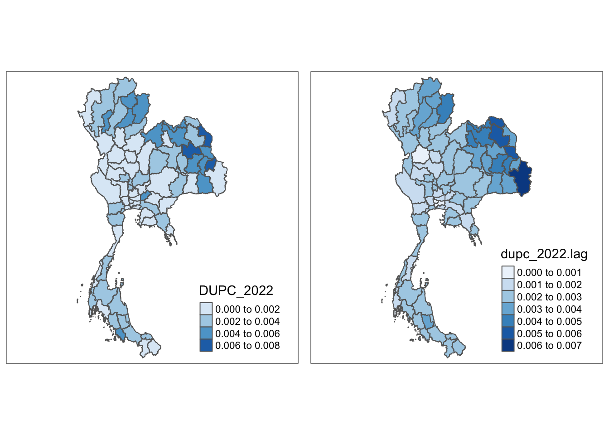
The same goes for the DTPC:
dtpc_2022 <- qtm(thai_trafficking_sf, "DTPC_2022", fill.palette = "Purples")
dtpc_2022_lag <- qtm(thai_trafficking_sf, "dtpc_2022.lag", fill.palette = "Purples")
tmap_arrange(dtpc_2022, dtpc_2022_lag, asp=1, ncol=2)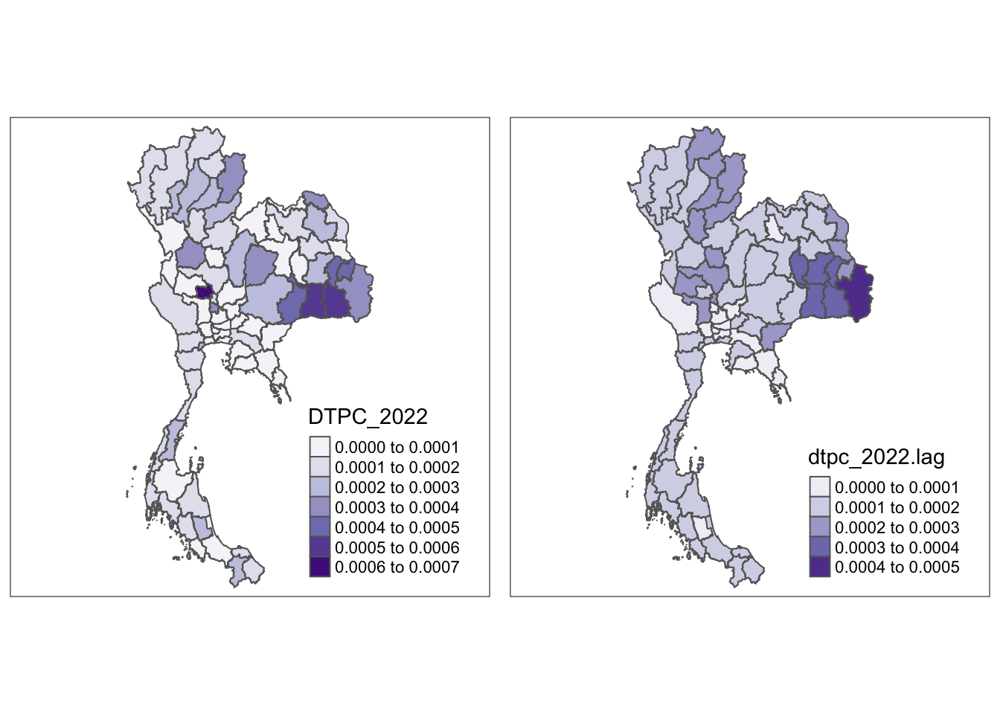
7.2 Space Time Cube
Since our data is in wide format with 1 column per year, we reshape it so each row represents unique combination of province and year
thai_drug_use_long <- thai_drug_use_sf %>%
select(province_en, geometry,
DUPC_2017, DUPC_2018, DUPC_2019, DUPC_2020, DUPC_2021, DUPC_2022) %>%
pivot_longer(cols = starts_with("DUPC_"),
names_to = "year",
names_prefix = "DUPC_",
values_to = "DUPC") %>%
mutate(year = as.numeric(year))
# View reshaped data
head(thai_drug_use_long)Simple feature collection with 6 features and 3 fields
Geometry type: POLYGON
Dimension: XY
Bounding box: xmin: -5466.696 ymin: 1496356 xmax: 60719 ymax: 1547173
Projected CRS: WGS 84 / UTM zone 48N
# A tibble: 6 × 4
province_en geometry year DUPC
<chr> <POLYGON [m]> <dbl> <dbl>
1 Bangkok ((25835.57 1547090, 25877.6 1547067, 25943.05 15470… 2017 1.03e-3
2 Bangkok ((25835.57 1547090, 25877.6 1547067, 25943.05 15470… 2018 1.44e-3
3 Bangkok ((25835.57 1547090, 25877.6 1547067, 25943.05 15470… 2019 1.31e-3
4 Bangkok ((25835.57 1547090, 25877.6 1547067, 25943.05 15470… 2020 8.47e-4
5 Bangkok ((25835.57 1547090, 25877.6 1547067, 25943.05 15470… 2021 8.38e-4
6 Bangkok ((25835.57 1547090, 25877.6 1547067, 25943.05 15470… 2022 2.40e-4Now that the data is in long format, we can create the spacetime object using the as_spacetime() function from the sfdep package.
colnames(thai_drug_use_long)[1] "province_en" "geometry" "year" "DUPC" spt <- as_spacetime(
thai_drug_use_long,
.loc_col = "province_en",
.time_col = "year"
)
sptspacetime ────Context:`data`77 locations `province_en`6 time periods `year`── data context ────────────────────────────────────────────────────────────────# A tibble: 462 × 3
province_en year DUPC
* <chr> <dbl> <dbl>
1 Bangkok 2017 0.00103
2 Bangkok 2018 0.00144
3 Bangkok 2019 0.00131
4 Bangkok 2020 0.000847
5 Bangkok 2021 0.000838
6 Bangkok 2022 0.000240
7 Chai Nat 2017 0.000951
8 Chai Nat 2018 0.00201
9 Chai Nat 2019 0.00455
10 Chai Nat 2020 0.00391
# ℹ 452 more rowsis_spacetime_cube(spt)[1] TRUE7.5.2 Spacetime Contexts
To switch between the data and geometry contexts, we use activate() from sfdep:
activate(spt, "data")spacetime ────Context:`data`77 locations `province_en`6 time periods `year`── data context ────────────────────────────────────────────────────────────────# A tibble: 462 × 3
province_en year DUPC
* <chr> <dbl> <dbl>
1 Bangkok 2017 0.00103
2 Bangkok 2018 0.00144
3 Bangkok 2019 0.00131
4 Bangkok 2020 0.000847
5 Bangkok 2021 0.000838
6 Bangkok 2022 0.000240
7 Chai Nat 2017 0.000951
8 Chai Nat 2018 0.00201
9 Chai Nat 2019 0.00455
10 Chai Nat 2020 0.00391
# ℹ 452 more rowsactivate(spt, "geometry")spacetime ────Context:`geometry`77 locations `province_en`6 time periods `year`── geometry context ────────────────────────────────────────────────────────────Simple feature collection with 77 features and 1 field
Geometry type: GEOMETRY
Dimension: XY
Bounding box: xmin: -313055.3 ymin: 621843.5 xmax: 568269.6 ymax: 2271054
Projected CRS: WGS 84 / UTM zone 48N
# A tibble: 77 × 2
province_en geometry
* <chr> <POLYGON [m]>
1 Bangkok ((25835.57 1547090, 25877.6 1547067, 25943.05 15470…
2 Chai Nat ((-24181.19 1709887, -24055.04 1709874, -23850.75 1…
3 Nonthaburi ((-3347.358 1563866, -3349.975 1563780, -3350.358 1…
4 Pathum Thani ((56466.67 1578825, 56464.46 1578591, 56470.24 1578…
5 Phra Nakhon Si Ayutthaya ((16427.34 1625110, 16443.28 1625108, 16467.33 1625…
6 Bueng Kan ((331560.4 2040603, 331689.4 2040595, 331900.1 2040…
7 Samut Prakan ((38002.87 1520530, 38009.33 1520494, 38079.34 1520…
8 Saraburi ((112824.3 1669647, 112830.8 1669647, 112857.4 1669…
9 Sing Buri ((1875.759 1673463, 1947.294 1673428, 2058.61 16733…
10 Ang Thong ((-2670.024 1641280, -2648.057 1641233, -2641.796 1…
# ℹ 67 more rowsPART II : Global Measures of Spatial Autocorrelation
We will compute Global Spatial Autocorrelation Statistics and perform spatial complete randomness test for global spatial autocorrelation
8.0 Global Measures of Spatial Autocorrelation: Moran’s I
8.1 Moran’s I Test
The code chunk below performs Moran’s I statistical testing using global_moran()of sfdep, as well as global_moran_test().
The first gives us a measure of spatial autocorrelation of drug_use_cases throughout the years
The second function tells us if the autocorrelation is statistically significant.
DUPC
global_moran(thai_drug_use_sf$DUPC_2022,
nb = wm_q,
wt = rswm_q,
na_ok=TRUE)Warning in lag.listw(listw, z, zero.policy = zero.policy, NAOK = NAOK): NAs in
lagged values$I
[1] 0.3244175
$K
[1] 3.125771Global Moran’s I Result:
Moran’s I value: 0.3244175
Positive Spatial Autocorrelation: means regions with similar values are clustered together, indicating moderately positive spatial autocorrelation for DUPC in 2022
K-value (K = 3.125771)
K value of 3.125771 suggests that there is notable clustering in the data, meaning that spatial autocorrelation is present and is non-random.
DTPC
global_moran(thai_trafficking_sf$DTPC_2022,
nb = wm_q,
wt = rswm_q,
na_ok=TRUE)Warning in lag.listw(listw, z, zero.policy = zero.policy, NAOK = NAOK): NAs in
lagged values$I
[1] 0.2305723
$K
[1] 4.881418Global Moran’s I Result:
Moran’s I value: 0.2305723
Positive Spatial Autocorrelation: means regions with similar values are clustered together, indicating moderately positive spatial autocorrelation for DTPC in 2022
K-value (K = 4.881418)
K value of 4.881418 suggests that there is notable clustering in the data, meaning that spatial autocorrelation is present and is non-random.
global_moran_test(thai_drug_use_sf$DUPC_2022,
nb = wm_q,
wt = rswm_q,
zero.policy=TRUE)
Moran I test under randomisation
data: x
weights: listw
n reduced by no-neighbour observations
Moran I statistic standard deviate = 4.3479, p-value = 6.871e-06
alternative hypothesis: greater
sample estimates:
Moran I statistic Expectation Variance
0.320204319 -0.013333333 0.005884666 global_moran_test(thai_trafficking_sf$DTPC_2022,
nb = wm_q,
wt = rswm_q,
zero.policy=TRUE)
Moran I test under randomisation
data: x
weights: listw
n reduced by no-neighbour observations
Moran I statistic standard deviate = 3.1799, p-value = 0.0007366
alternative hypothesis: greater
sample estimates:
Moran I statistic Expectation Variance
0.227577876 -0.013333333 0.005739597
Note
Interpretation: Statistical Significance of the Global Moran Test
p-value: Strongly significant, rejecting the null hypothesis of no spatial autocorrelation.
Expectation (-0.013): Expected Moran’s I under null hypothesis; observed value is much higher, supporting positive spatial clustering.
8.2 Computing Monte Carlo Moran’s I
DUPC
mc_mi_g_dupc <- global_moran_perm(thai_drug_use_sf$DUPC_2022,
nb = wm_q,
wt = rswm_q,
nsim=999,
zero.policy=TRUE,
na.action=na.omit)
mc_mi_g_dupc
Monte-Carlo simulation of Moran I
data: x
weights: listw
number of simulations + 1: 1000
statistic = 0.3202, observed rank = 1000, p-value < 2.2e-16
alternative hypothesis: two.sidedDTPC
mc_mi_g_dtpc <- global_moran_perm(thai_trafficking_sf$DTPC_2022,
nb = wm_q,
wt = rswm_q,
nsim=999,
zero.policy=TRUE,
na.action=na.omit)
mc_mi_g_dtpc
Monte-Carlo simulation of Moran I
data: x
weights: listw
number of simulations + 1: 1000
statistic = 0.22758, observed rank = 994, p-value = 0.012
alternative hypothesis: two.sidedInterpretation: Moran’s I Interpretation for Drug Use Per Capita (2022):
- p-value (< 2.2e-16): Strongly significant, rejecting the null hypothesis of no spatial autocorrelation.
- Expectation (-0.013): The expected Moran’s I under the null hypothesis; the observed value (0.3202) is much higher, indicating strong positive spatial clustering for drug use per capita.
Moran’s I Interpretation for Drug Trafficking Per Capita (2022):
- p-value (0.012): Statistically significant, rejecting the null hypothesis of no spatial autocorrelation, though the effect is weaker than drug use.
- Expectation (-0.013): The expected Moran’s I under the null hypothesis; the observed value (0.22758) is moderately higher, indicating positive spatial clustering for drug trafficking per capita.
8.3 Visualizing Monte Carlo Moran’s i
In the code chunk below hist() and abline() of R Graphics are used.
mean(mc_mi_g_dupc$res[1:999])[1] -0.01170382var(mc_mi_g_dupc$res[1:999])[1] 0.005239131mean(mc_mi_g_dtpc$res[1:999])[1] -0.0144883var(mc_mi_g_dtpc$res[1:999])[1] 0.006000646summary((mc_mi_g_dupc$res[1:999])) Min. 1st Qu. Median Mean 3rd Qu. Max.
-0.25034 -0.06233 -0.01292 -0.01170 0.03716 0.22411 summary((mc_mi_g_dtpc$res[1:999])) Min. 1st Qu. Median Mean 3rd Qu. Max.
-0.21890 -0.06582 -0.01853 -0.01449 0.03513 0.26816 8.4 Histogram Visualization
ggplot(data = data.frame(x = mc_mi_g_dupc$res), aes(x = x)) +
geom_histogram(aes(y = after_stat(count)), bins = 20, fill = "grey", color = "black", alpha=0.5) +
geom_vline(xintercept = 0, color = "blue", size = 2) +
labs(title = "mc_mi_global_DUPC$res",
x = "Simulated Moran's I",
y = "Frequency") +
theme_classic() +
theme(plot.title = element_text(hjust = 0.5)) Warning: Using `size` aesthetic for lines was deprecated in ggplot2 3.4.0.
ℹ Please use `linewidth` instead.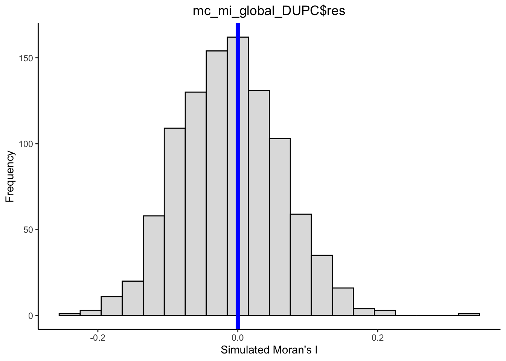
ggplot(data = data.frame(x = mc_mi_g_dtpc$res), aes(x = x)) +
geom_histogram(aes(y = after_stat(count)), bins = 20, fill = "grey", color = "black", alpha=0.5) +
geom_vline(xintercept = 0, color = "purple", size = 2) +
labs(title = "mc_mi_g_dtpc$res",
x = "Simulated Moran's I",
y = "Frequency") +
theme_classic() +
theme(plot.title = element_text(hjust = 0.5)) 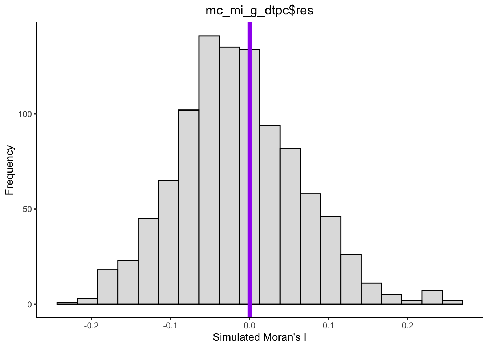
Interpretation: From the simulated distribution, a majority is centered around 0, which is expected under the null hypothesis of no spatial autocorrelation. The actual observed Moran’s I is plotted as the vertical blue line.
Its position in the center but being slightly to the right of 0 but within the range of simulated values indicates the observed spatial autocorrelation is not significantly different from random spatial arrangement.
The observed Moran’s value (0.3202) coupled with the low p-value indicates weak spatial autocorrelation for Drug Use Per Capita
The observed Moran’s value (0.2305) coupled with the moderately low p-value indicates weak spatial autocorrelation for Drug Trafficking per Capita. However it should be noted that the variation in results can arise from a lot of different factors, mainly because the % of cases is much higher in DUPC than DTPC.
We supplement the analysis using Geary’s C test, and Local Moran’s I
9.0 Global Measures of Spatial Autocorrelation: Geary’s C
9.1 Geary’s C Test
The code chunk below performs Geary’s C test for spatial autocorrelation using global_c() in the sfdep package. Setting the randomization =TRUE argument refers to the method used to compute the test statistic, and helps to ensure the p-value and test statistic are based on a permutation based-method.
##DUPC
set.seed(1234)
global_c(thai_drug_use_sf$DUPC_2022,
nb = wm_q,
wt = rswm_q,
allow_zero=TRUE)$C
[1] 0.611319
$K
[1] 3.125771global_c_test(thai_drug_use_sf$DUPC_2022,
nb = wm_q,
wt = rswm_q,
allow_zero=TRUE,
randomization=TRUE)
Geary C test under randomisation
data: x
weights: listw
n reduced by no-neighbour observations
Geary C statistic standard deviate = 4.8392, p-value = 6.517e-07
alternative hypothesis: Expectation greater than statistic
sample estimates:
Geary C statistic Expectation Variance
0.603275341 1.000000000 0.006720903 ##DTPC
set.seed(1234)
global_c(thai_trafficking_sf$DTPC_2022,
nb = wm_q,
wt = rswm_q,
allow_zero=TRUE)$C
[1] 0.6992419
$K
[1] 4.881418global_c_test(thai_trafficking_sf$DTPC_2022,
nb = wm_q,
wt = rswm_q,
allow_zero=TRUE,
randomization=TRUE)
Geary C test under randomisation
data: x
weights: listw
n reduced by no-neighbour observations
Geary C statistic standard deviate = 3.5848, p-value = 0.0001687
alternative hypothesis: Expectation greater than statistic
sample estimates:
Geary C statistic Expectation Variance
0.69004139 1.00000000 0.00747624 Interpretation:
Geary’s C (0.603, 0.690): Indicates positive spatial autocorrelation (clustering of similar values).
p-value: Strong evidence against randomness, confirming spatial clustering of drug use.
9.2 Computing Monte Carlo Geary’s C
The code chunk performs Geary’s C test for spatial autocorrelation using global_c_perm() from sfdep:
mc_gc_g_dupc <- global_c_perm(thai_drug_use_sf$DUPC_2022,
nb = wm_q,
wt = rswm_q,
nsim=999,
allow_zero = TRUE)
mc_gc_g_dtpc <- global_c_perm(thai_trafficking_sf$DTPC_2022,
nb = wm_q,
wt = rswm_q,
nsim=999,
allow_zero = TRUE)
mc_gc_g_dupc
Monte-Carlo simulation of Geary C
data: x
weights: listw
number of simulations + 1: 1000
statistic = 0.60328, observed rank = 1, p-value = 0.001
alternative hypothesis: greatermc_gc_g_dtpc
Monte-Carlo simulation of Geary C
data: x
weights: listw
number of simulations + 1: 1000
statistic = 0.69004, observed rank = 3, p-value = 0.003
alternative hypothesis: greater
Tip
Interpretation:
- Drug use shows stronger clustering across regions compared to drug trafficking.
- Both patterns are statistically significant, meaning these clusters are unlikely to have formed by chance, but the clustering is more pronounced for drug use.
9.3 Visualizing Monte Carlo Geary’s C
In the code chunk below hist() and abline() of R Graphics are used.
mean(mc_gc_g_dupc$res[1:999])[1] 0.9867549mean(mc_gc_g_dtpc$res[1:999])[1] 0.9878833Variance:
var(mc_gc_g_dupc$res[1:999])[1] 0.006741534var(mc_gc_g_dtpc$res[1:999])[1] 0.008455766summary((mc_gc_g_dupc$res[1:999])) Min. 1st Qu. Median Mean 3rd Qu. Max.
0.6259 0.9308 0.9886 0.9868 1.0464 1.2153 summary((mc_gc_g_dtpc$res[1:999])) Min. 1st Qu. Median Mean 3rd Qu. Max.
0.6803 0.9270 0.9902 0.9879 1.0468 1.2894 9.2.1 Histogram Visualization
plot_dupc <- ggplot(data = data.frame(GearyC = mc_gc_g_dupc$res), aes(x = GearyC)) +
geom_histogram(binwidth = 0.05, fill = "grey", alpha = 0.5, color = "black") +
geom_vline(xintercept = 1, color = "blue", linetype = "solid", size = 1) +
labs(title = "Monte Carlo Simulation of Geary's C for DUPC",
x = "Simulated Geary's C",
y = "Frequency") +
theme_classic() +
theme(plot.title = element_text(hjust = 0.5))
plot_dtpc <- ggplot(data = data.frame(GearyC = mc_gc_g_dtpc$res), aes(x = GearyC)) +
geom_histogram(binwidth = 0.05, fill = "grey", alpha = 0.5, color = "black") +
geom_vline(xintercept = 1, color = "purple", linetype = "solid", size = 1) +
labs(title = "Monte Carlo Simulation of Geary's C for DTPC",
x = "Simulated Geary's C",
y = "Frequency") +
theme_classic() +
theme(plot.title = element_text(hjust = 0.5))
# Combine the two plots side by side using patchwork
plot_dupc + plot_dtpc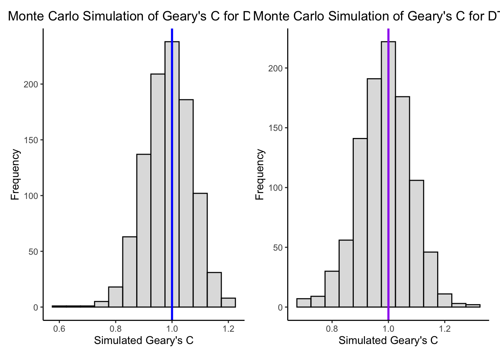
10.0 Spatial Correlogram
10.1 Compute Moran’s I Correlogram
In the code chunk below, we use sp.correlogram() of the spdep package to compute spatial correlogram lag of Drug Use Per Capita.
MI_DUPC_corr <- sp.correlogram(wm_q,
thai_drug_use_sf$DUPC_2022,
order=10,
method="I",
style="W",
zero.policy=TRUE)
MI_DTPC_corr <- sp.correlogram(wm_q,
thai_trafficking_sf$DTPC_2022,
order=10,
method="I",
style="W",
zero.policy=TRUE)
plot(MI_DUPC_corr)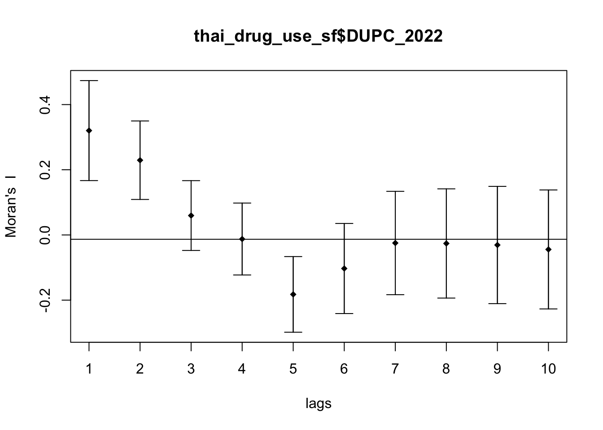
plot(MI_DTPC_corr)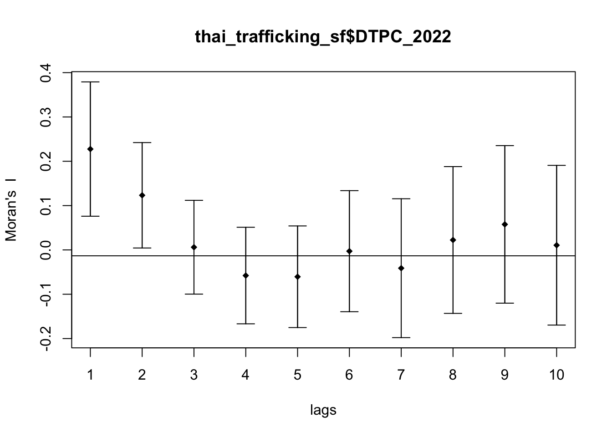
How do we determine which order to stop at?
The decision to stop at a specific lag depends on when the spatial autocorrelation becomes insignificant or close to zero. Typically, we look for the point where the confidence intervals include zero or Moran’s I approaches zero, indicating little to no spatial dependence beyond that lag.
Interpretation: Drug use Per Capita shows stronger clustering at close distances (lag 1 and 2), but spatial dependence drops off quickly, turning negative around lag 5. In contrast, drug trafficking per capita has weaker but more persistent spatial autocorrelation without signficiant negative values
10.2 Compute Geary’s C Correlogram
GC_DUPC_corr <- sp.correlogram(wm_q,
thai_drug_use_sf$DUPC_2022,
order=10,
method="C",
style="W",
zero.policy=TRUE)
GC_DTPC_corr <- sp.correlogram(wm_q,
thai_trafficking_sf$DTPC_2022,
order=10,
method="C",
style="W",
zero.policy=TRUE)
plot(GC_DUPC_corr)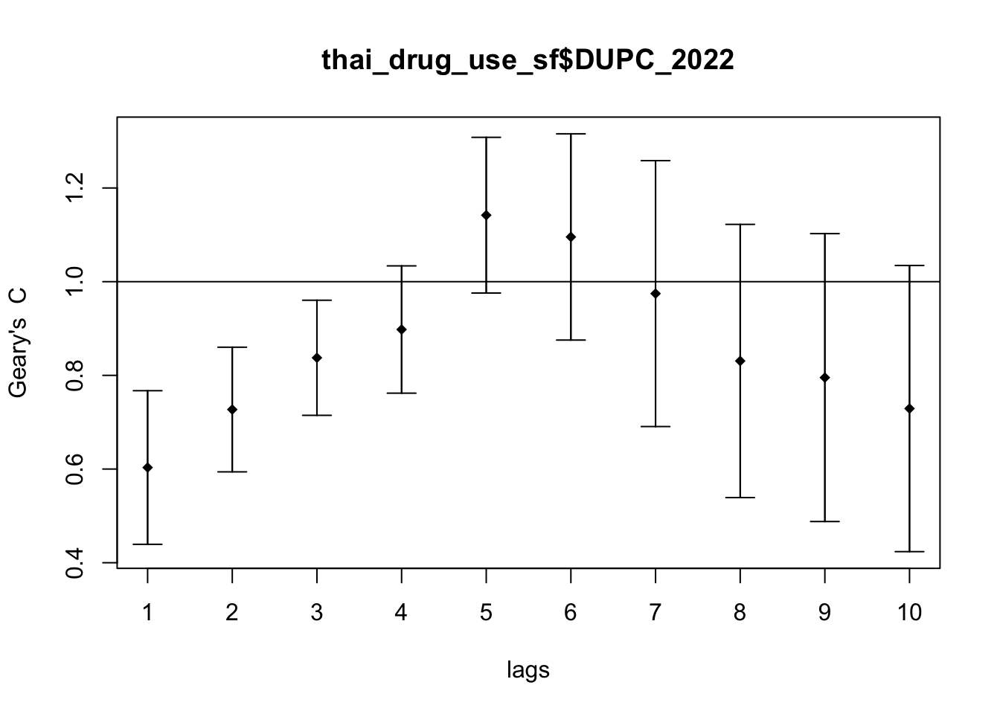
plot(GC_DTPC_corr)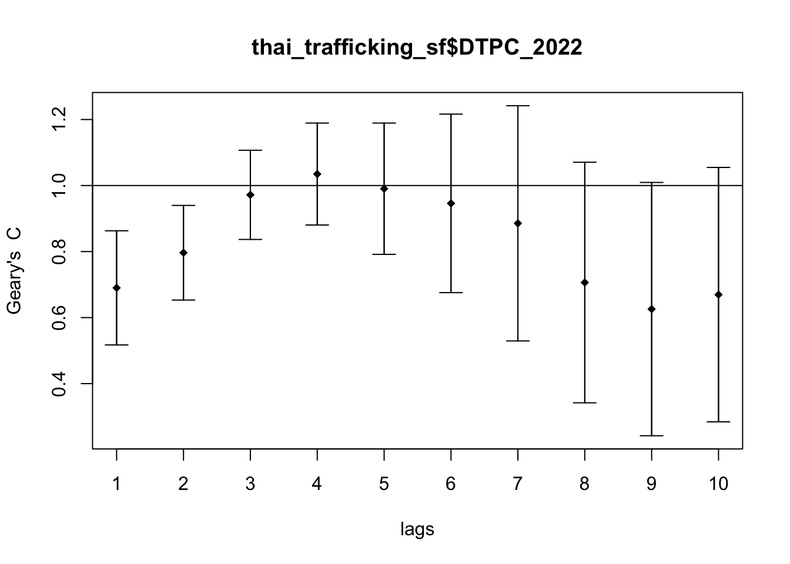
PART III : Local Measures of Spatial Autocorrelation
We will apply LISA functions to detect clusters or outliers from Drug Use Per Capita and Drug Trafficking Per Capita in 2022 for Thailand.
11.0 Local Indicators of Spatial Association (LISA)
11.1 Computing Local Moran’s I
The code chunk is used to compute local Moran’s I of DUPC & DUTC 2022 at the Province Level:
FIPS <- order(thai_drug_use_sf$ADM1_PCODE)
localMI_DUPC <- local_moran(thai_drug_use_sf$DUPC_2022,
nb=wm_q,
wt=rswm_q,
nsim=999,
zero.policy=TRUE)
localMI_DTPC <- local_moran(thai_trafficking_sf$DTPC_2022,
nb=wm_q,
wt=rswm_q,
nsim=999,
zero.policy=TRUE)
head(localMI_DUPC) ii eii var_ii z_ii p_ii p_ii_sim
1 1.50550332 -0.0193818626 0.328234428 2.6616140 0.007776699 0.002
2 -0.04225522 -0.0003463326 0.003702838 -0.6887138 0.491003379 0.524
3 1.36642227 -0.0064861031 0.473145857 1.9959242 0.045942179 0.020
4 0.74776900 -0.0116135220 0.255491916 1.5023531 0.133005946 0.114
5 0.44371006 0.0121028555 0.107233557 1.3180240 0.187495597 0.156
6 0.68740683 -0.0106324594 0.065307569 2.7314805 0.006305047 0.016
p_folded_sim skewness kurtosis mean median pysal
1 0.001 -0.3959346 0.07472230 Low-Low Low-Low Low-Low
2 0.262 0.3072909 -0.12528526 High-Low High-Low High-Low
3 0.010 -0.4099680 -0.02144720 Low-Low Low-Low Low-Low
4 0.057 -0.2086346 -0.11292650 Low-Low Low-Low Low-Low
5 0.078 -0.4135419 0.04669219 Low-Low Low-Low Low-Low
6 0.008 0.4335864 -0.03425615 High-High High-High High-Highhead(localMI_DTPC) ii eii var_ii z_ii p_ii p_ii_sim
1 0.9100068 -0.017361030 0.20090036 2.0690057 0.03854556 0.002
2 -1.4114928 -0.151372334 2.74701169 -0.7602944 0.44707860 0.502
3 1.0785125 -0.046678052 0.34441035 1.9172907 0.05520101 0.018
4 0.8336801 -0.014806371 0.18508496 1.9722381 0.04858243 0.014
5 0.4513464 0.001204556 0.08056586 1.5858928 0.11276362 0.072
6 -0.1832074 -0.042903652 0.66212569 -0.1724245 0.86310379 0.996
p_folded_sim skewness kurtosis mean median pysal
1 0.001 -0.4622152 -0.17832157 Low-Low Low-Low Low-Low
2 0.251 0.5518738 -0.01314981 High-Low High-Low High-Low
3 0.009 -0.5254895 -0.06384844 Low-Low Low-Low Low-Low
4 0.007 -0.6951569 0.87759696 Low-Low Low-Low Low-Low
5 0.036 -0.4401252 0.24911046 Low-Low Low-Low Low-Low
6 0.498 0.7721716 0.39993841 High-Low High-High High-Low
Interpretation
The decision to stop at a specific lag depends on when the spatial autocorrelation becomes insignificant or close to zero. Typically, we look for the point where the confidence intervals include zero or Moran’s I approaches zero, indicating little to no spatial dependence beyond that lag.
local_moran() function returns a matrix of values whose columns are:
ii: the local Moran’s I statistics
eii: the expectation of local moran statistic under the randomisation hypothesis
var_ii: the variance of local moran statistic under the randomisation hypothesis
z_ii:the standard deviate of local moran statistic
p_ii: the p-value of local moran statistic
p_ii_sim: the p-value of the simulated local moran statistic*
p_folded_sim: the simulation folded [0, 0.5] range ranked p-value (based on https://github.com/pysal/esda/blob/4a63e0b5df1e754b17b5f1205b8cadcbecc5e061/esda/crand.py#L211-L213)
skewness: For localmoran_perm, the output of e1071::skewness() for the permutation samples underlying the standard deviates
kurtosis: For localmoran_perm, the output of e1071::kurtosis() for the permutation samples underlying the standard deviates
11.1.1 Local Moran Bivariate
11.1.2 Mapping local Moran’s I Values The code chunks below can be used to perform the task of appending the local Moran’s I dataframe onto the Thailand SpatialPolygonDataFrame.
thai_drug_use.localMI <- cbind(thai_drug_use_sf, localMI_DUPC)
thai_trafficking.localMI <- cbind(thai_drug_use_sf, localMI_DTPC)Drug Use Per Capita Map
localMI_DUPC.map <- tm_shape(thai_drug_use.localMI) +
tm_fill(col="ii",
style="pretty",
palette="RdBu",
title="local moran statistics") +
tm_borders(alpha = 0.2)
pvalue_mi_dupc.map <- tm_shape(thai_drug_use.localMI) +
tm_fill(col="p_ii_sim",
breaks=c(-Inf, 0.001, 0.01, 0.05, 0.1, Inf),
style="pretty",
palette="Blues",
title="local Moran's I p-values") +
tm_borders(alpha = 0.2)
tmap_arrange(localMI_DUPC.map, pvalue_mi_dupc.map, asp=1, ncol=2)Variable(s) "ii" contains positive and negative values, so midpoint is set to 0. Set midpoint = NA to show the full spectrum of the color palette.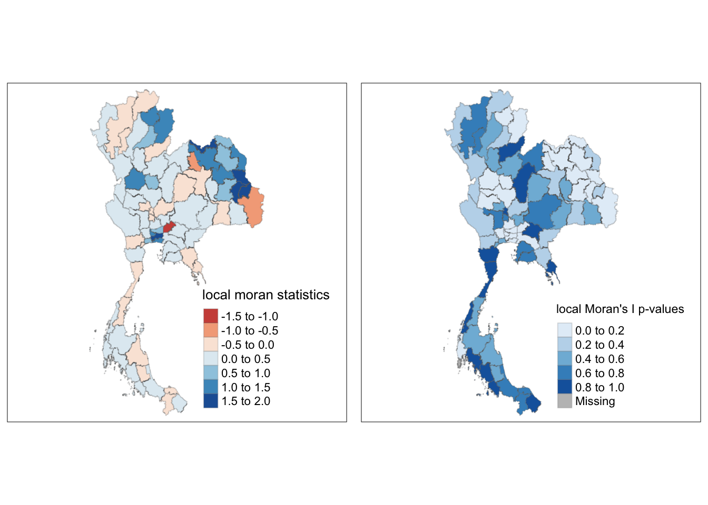
Drug Trafficking Per Capita Map
localMI_DTPC.map <- tm_shape(thai_trafficking.localMI) +
tm_fill(col="ii",
style="pretty",
palette="RdBu",
title="local moran statistics") +
tm_borders(alpha = 0.2)
pvalue_mi_dtpc.map <- tm_shape(thai_trafficking.localMI) +
tm_fill(col="p_ii_sim",
breaks=c(-Inf, 0.001, 0.01, 0.05, 0.1, Inf),
style="pretty",
palette="Purples",
title="local Moran's I p-values") +
tm_borders(alpha = 0.2)
tmap_arrange(localMI_DTPC.map, pvalue_mi_dtpc.map, asp=1, ncol=2)Variable(s) "ii" contains positive and negative values, so midpoint is set to 0. Set midpoint = NA to show the full spectrum of the color palette.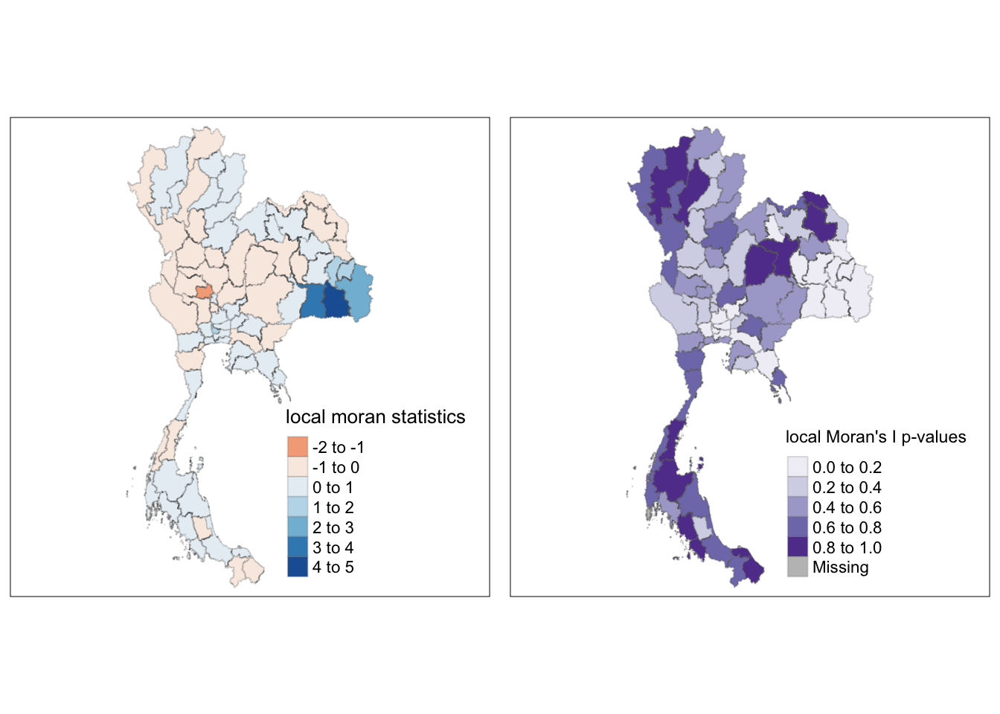
Interpretation:
DUPC: Significant clustering of high values can be observed in the northeastern region, while some areas in the center display negative Moran’s I values, suggesting low-value clustering
DTPC: THere is a more significant sense of clustering in the eastern region with high positive Moran’s I values. A possible factor we could account for are the borders the country share and the proximity of the region to the nefarious Golden Triangle.
11.2 Computing Local Geary’s C
set.seed(1234)
FIPS <- order(thai_drug_use_sf$ADM1_PCODE)
localGC_DUPC <- local_g_perm(thai_drug_use_sf$DUPC_2022,
nb=wm_q,
wt=rswm_q,
nsim=999,
zero.policy=TRUE)
localGC_DTPC <- local_g_perm(thai_trafficking_sf$DTPC_2022,
nb=wm_q,
wt=rswm_q,
nsim=999,
zero.policy=TRUE)
head(localGC_DUPC) gi cluster e_gi var_gi std_dev p_value p_sim
1 -2.7177082 Low 0.01338215 1.147992e-05 -2.6510677 0.008023775 0.002
2 -0.6969835 High 0.01317697 1.726255e-05 -0.6942438 0.487529319 0.514
3 -2.1004715 Low 0.01317995 1.558972e-05 -2.1397319 0.032376438 0.016
4 -1.5728513 Low 0.01319556 1.063726e-05 -1.5737590 0.115543185 0.096
5 -1.4706901 Low 0.01315329 9.317750e-06 -1.4457334 0.148252004 0.114
6 2.7788098 High 0.01326289 2.407313e-05 2.6897389 0.007150794 0.010
p_folded_sim skewness kurtosis
1 0.001 0.2246970 -0.17415984
2 0.257 0.4202330 0.13471313
3 0.008 0.4117895 0.19278849
4 0.048 0.2957740 -0.16143557
5 0.057 0.2633794 -0.06548269
6 0.005 0.3768606 -0.29632909head(localGC_DTPC) gi cluster e_gi var_gi std_dev p_value p_sim
1 -2.0933155 Low 0.01344474 1.869030e-05 -2.0159881 0.04380122 0.010
2 -0.7612953 High 0.01305085 2.595533e-05 -0.6993056 0.48436106 0.518
3 -1.9240794 Low 0.01333755 2.620852e-05 -1.9128093 0.05577247 0.012
4 -2.0297539 Low 0.01347712 1.704400e-05 -2.0600875 0.03939018 0.012
5 -1.6520868 Low 0.01317359 1.543907e-05 -1.5729898 0.11572119 0.070
6 -0.1918342 High 0.01306775 3.516653e-05 -0.1769321 0.85956174 0.978
p_folded_sim skewness kurtosis
1 0.005 0.5374472 0.18886404
2 0.259 0.5881933 0.23578765
3 0.006 0.6119138 0.09389617
4 0.006 0.4435516 0.29960386
5 0.035 0.5952123 0.44839539
6 0.489 0.8272322 0.98718720The following code chunk summarizes the Local GC results in a table, printing coefficient matrices tidely.
dupc_table <- printCoefmat(data.frame(
localGC_DUPC[FIPS,],
row.names=thai_drug_use_sf$province_en[FIPS]),
check.names=TRUE
) gi cluster e_gi var_gi
Bangkok -2.7177e+00 1.0000e+00 1.3382e-02 1.1480e-05
Samut Prakan -1.3296e+00 1.0000e+00 1.3206e-02 3.6089e-05
Nonthaburi -2.1005e+00 1.0000e+00 1.3180e-02 1.5590e-05
Pathum Thani -1.5729e+00 1.0000e+00 1.3196e-02 1.0637e-05
Phra Nakhon Si Ayutthaya -1.4707e+00 1.0000e+00 1.3153e-02 9.3177e-06
Ang Thong -3.1480e-01 2.0000e+00 1.2956e-02 1.8712e-05
Lop Buri -9.2769e-01 2.0000e+00 1.3060e-02 8.4442e-06
Sing Buri -8.3131e-02 2.0000e+00 1.3305e-02 1.4496e-05
Chai Nat -6.9698e-01 2.0000e+00 1.3177e-02 1.7263e-05
Saraburi -5.7294e-01 1.0000e+00 1.3209e-02 1.3653e-05
Chon Buri -4.7525e-01 1.0000e+00 1.3196e-02 2.3410e-05
Rayong -5.4926e-01 1.0000e+00 1.3315e-02 3.4294e-05
Chanthaburi -1.2674e+00 2.0000e+00 1.3110e-02 1.4590e-05
Trat 8.0067e-02 1.0000e+00 1.3875e-02 7.6223e-05
Chachoengsao -1.6738e+00 1.0000e+00 1.3083e-02 8.8594e-06
Prachin Buri -1.4925e-01 1.0000e+00 1.3216e-02 1.8645e-05
Nakhon Nayok -1.8429e+00 2.0000e+00 1.3372e-02 1.4276e-05
Sa Kaeo -9.5951e-01 1.0000e+00 1.2955e-02 1.3562e-05
Nakhon Ratchasima -2.7287e-01 1.0000e+00 1.3074e-02 8.8039e-06
Buri Ram -8.2115e-01 1.0000e+00 1.3054e-02 1.4051e-05
Surin 1.1891e+00 1.0000e+00 1.3209e-02 1.6623e-05
Si Sa Ket 7.1053e-01 2.0000e+00 1.3314e-02 1.7785e-05
Ubon Ratchathani 3.5008e+00 1.0000e+00 1.3196e-02 2.0956e-05
Yasothon 2.7454e+00 2.0000e+00 1.3384e-02 1.3614e-05
Chaiyaphum -6.1277e-01 2.0000e+00 1.3050e-02 1.8466e-05
Amnat Charoen 1.2993e+00 2.0000e+00 1.3167e-02 2.0830e-05
Bueng Kan 2.7788e+00 2.0000e+00 1.3263e-02 2.4073e-05
Nong Bua Lam Phu 1.7114e+00 1.0000e+00 1.3363e-02 2.4721e-05
Khon Kaen 1.2122e+00 1.0000e+00 1.3154e-02 7.5497e-06
Udon Thani 2.3900e+00 2.0000e+00 1.2925e-02 1.1598e-05
Loei 2.7116e-01 2.0000e+00 1.3216e-02 1.0649e-05
Nong Khai 2.1260e+00 2.0000e+00 1.3168e-02 1.6851e-05
Maha Sarakham 8.2855e-01 2.0000e+00 1.2970e-02 1.2315e-05
Roi Et 2.3502e+00 2.0000e+00 1.3062e-02 1.2207e-05
Kalasin 1.6488e+00 2.0000e+00 1.3012e-02 1.0532e-05
Sakon Nakhon 3.6998e+00 2.0000e+00 1.3344e-02 1.1640e-05
Nakhon Phanom 1.1539e+00 2.0000e+00 1.3150e-02 2.1334e-05
Mukdahan 4.4392e+00 2.0000e+00 1.3060e-02 1.1670e-05
Chiang Mai 3.0137e-01 1.0000e+00 1.2963e-02 1.3680e-05
Lamphun -3.8887e-01 2.0000e+00 1.3261e-02 2.3162e-05
Lampang 7.5909e-01 2.0000e+00 1.3151e-02 1.0461e-05
Uttaradit -1.5237e-01 2.0000e+00 1.3122e-02 1.6922e-05
Phrae 1.3531e+00 2.0000e+00 1.3157e-02 1.3479e-05
Nan 1.9497e+00 2.0000e+00 1.2953e-02 2.2349e-05
Phayao 1.3922e+00 2.0000e+00 1.3055e-02 1.8084e-05
Chiang Rai 1.2664e+00 1.0000e+00 1.3278e-02 2.3794e-05
Mae Hong Son -9.2600e-01 1.0000e+00 1.3309e-02 3.6010e-05
Nakhon Sawan -1.3080e+00 1.0000e+00 1.3270e-02 8.2221e-06
Uthai Thani -1.2322e+00 1.0000e+00 1.3022e-02 1.3643e-05
Kamphaeng Phet -2.4367e+00 1.0000e+00 1.3234e-02 1.3092e-05
Tak -9.2589e-01 1.0000e+00 1.3375e-02 7.8135e-06
Sukhothai -6.6080e-01 1.0000e+00 1.3171e-02 1.0631e-05
Phitsanulok -7.1136e-01 1.0000e+00 1.3196e-02 1.1458e-05
Phichit -1.9408e+00 1.0000e+00 1.3347e-02 1.6358e-05
Phetchabun -2.7260e-01 1.0000e+00 1.3169e-02 9.4989e-06
Ratchaburi -1.1474e+00 2.0000e+00 1.3236e-02 1.3709e-05
Kanchanaburi -1.0456e+00 1.0000e+00 1.3245e-02 1.3902e-05
Suphan Buri -4.4014e-01 1.0000e+00 1.3273e-02 1.0111e-05
Nakhon Pathom -2.2901e+00 1.0000e+00 1.3109e-02 1.0081e-05
Samut Sakhon -7.6984e-01 1.0000e+00 1.3111e-02 1.6316e-05
Samut Songkhram -7.8564e-01 2.0000e+00 1.3357e-02 2.1819e-05
Phetchaburi -7.1374e-03 1.0000e+00 1.3126e-02 2.3976e-05
Prachuap Khiri Khan -1.9402e-03 1.0000e+00 1.3130e-02 3.2150e-05
Nakhon Si Thammarat -5.8090e-01 2.0000e+00 1.3193e-02 1.4067e-05
Krabi -1.9625e-01 1.0000e+00 1.3198e-02 1.6986e-05
Phangnga -1.2866e+00 1.0000e+00 1.3222e-02 2.2448e-05
Phuket NaN 1.0000e+00 NA NA
Surat Thani -8.7763e-01 1.0000e+00 1.2996e-02 1.4495e-05
Ranong -1.1398e-01 1.0000e+00 1.2904e-02 2.2754e-05
Chumphon -8.2791e-01 2.0000e+00 1.3048e-02 2.1136e-05
Songkhla 3.2705e-01 2.0000e+00 1.3310e-02 1.3810e-05
Satun 4.5440e-02 2.0000e+00 1.3076e-02 2.4780e-05
Trang -1.6876e-01 1.0000e+00 1.3132e-02 1.8094e-05
Phatthalung 6.6987e-01 1.0000e+00 1.3322e-02 1.7790e-05
Pattani -4.8862e-01 2.0000e+00 1.3269e-02 2.2531e-05
Yala 1.7285e-01 1.0000e+00 1.3232e-02 2.5269e-05
Narathiwat -2.1616e-01 1.0000e+00 1.2803e-02 3.4827e-05
std_dev p_value p_sim p_folded_sim
Bangkok -2.6511e+00 8.0238e-03 2.0000e-03 1.0000e-03
Samut Prakan -1.2847e+00 1.9891e-01 1.4800e-01 7.4000e-02
Nonthaburi -2.1397e+00 3.2376e-02 1.6000e-02 8.0000e-03
Pathum Thani -1.5738e+00 1.1554e-01 9.6000e-02 4.8000e-02
Phra Nakhon Si Ayutthaya -1.4457e+00 1.4825e-01 1.1400e-01 5.7000e-02
Ang Thong -2.5309e-01 8.0020e-01 8.9400e-01 4.4700e-01
Lop Buri -8.6910e-01 3.8479e-01 3.8800e-01 1.9400e-01
Sing Buri -1.1849e-01 9.0568e-01 9.4400e-01 4.7200e-01
Chai Nat -6.9424e-01 4.8753e-01 5.1400e-01 2.5700e-01
Saraburi -5.7134e-01 5.6777e-01 6.1400e-01 3.0700e-01
Chon Buri -4.7138e-01 6.3737e-01 6.9000e-01 3.4500e-01
Rayong -5.7603e-01 5.6459e-01 6.2200e-01 3.1100e-01
Chanthaburi -1.1989e+00 2.3058e-01 2.1800e-01 1.0900e-01
Trat -5.7688e-03 9.9540e-01 9.1000e-01 4.6000e-01
Chachoengsao -1.5554e+00 1.1985e-01 9.4000e-02 4.7000e-02
Prachin Buri -1.5406e-01 8.7756e-01 9.3200e-01 4.6600e-01
Nakhon Nayok -1.8335e+00 6.6732e-02 5.0000e-02 2.5000e-02
Sa Kaeo -8.8975e-01 3.7360e-01 3.6400e-01 1.8200e-01
Nakhon Ratchasima -2.2863e-01 8.1916e-01 8.9600e-01 4.4800e-01
Buri Ram -7.6900e-01 4.4189e-01 4.9200e-01 2.4600e-01
Surin 1.1745e+00 2.4021e-01 2.4200e-01 1.2100e-01
Si Sa Ket 6.5363e-01 5.1335e-01 4.9400e-01 2.4700e-01
Ubon Ratchathani 3.6261e+00 2.8772e-04 2.0000e-03 1.0000e-03
Yasothon 2.6451e+00 8.1667e-03 1.8000e-02 9.0000e-03
Chaiyaphum -5.6166e-01 5.7434e-01 6.7800e-01 3.3900e-01
Amnat Charoen 1.3061e+00 1.9153e-01 1.9800e-01 9.9000e-02
Bueng Kan 2.6897e+00 7.1508e-03 1.0000e-02 5.0000e-03
Nong Bua Lam Phu 1.5927e+00 1.1122e-01 1.3400e-01 6.7000e-02
Khon Kaen 1.1655e+00 2.4380e-01 2.6800e-01 1.3400e-01
Udon Thani 2.3901e+00 1.6845e-02 3.6000e-02 1.8000e-02
Loei 2.5484e-01 7.9885e-01 7.6400e-01 3.8200e-01
Nong Khai 2.1115e+00 3.4733e-02 4.4000e-02 2.2000e-02
Maha Sarakham 9.1656e-01 3.5937e-01 3.4800e-01 1.7400e-01
Roi Et 2.2565e+00 2.4040e-02 3.4000e-02 1.7000e-02
Kalasin 1.7074e+00 8.7749e-02 1.1600e-01 5.8000e-02
Sakon Nakhon 3.5404e+00 3.9952e-04 4.0000e-03 2.0000e-03
Nakhon Phanom 1.1696e+00 2.4215e-01 2.5400e-01 1.2700e-01
Mukdahan 4.3357e+00 1.4530e-05 4.0000e-03 2.0000e-03
Chiang Mai 3.4914e-01 7.2698e-01 7.1200e-01 3.5600e-01
Lamphun -4.0503e-01 6.8546e-01 7.4600e-01 3.7300e-01
Lampang 7.1732e-01 4.7318e-01 4.3000e-01 2.1500e-01
Uttaradit -1.4380e-01 8.8566e-01 9.6200e-01 4.8100e-01
Phrae 1.3475e+00 1.7781e-01 2.1600e-01 1.0800e-01
Nan 2.0136e+00 4.4050e-02 8.0000e-02 4.0000e-02
Phayao 1.3588e+00 1.7422e-01 2.1200e-01 1.0600e-01
Chiang Rai 1.2136e+00 2.2490e-01 2.5800e-01 1.2900e-01
Mae Hong Son -9.2922e-01 3.5277e-01 3.7800e-01 1.8900e-01
Nakhon Sawan -1.3139e+00 1.8887e-01 1.8400e-01 9.2000e-02
Uthai Thani -1.1719e+00 2.4122e-01 2.5200e-01 1.2600e-01
Kamphaeng Phet -2.4333e+00 1.4963e-02 2.0000e-03 1.0000e-03
Tak -9.3871e-01 3.4788e-01 3.7200e-01 1.8600e-01
Sukhothai -6.6075e-01 5.0877e-01 5.3800e-01 2.6900e-01
Phitsanulok -6.9198e-01 4.8895e-01 5.1400e-01 2.5700e-01
Phichit -1.9910e+00 4.6476e-02 1.4000e-02 7.0000e-03
Phetchabun -2.7040e-01 7.8685e-01 8.6600e-01 4.3300e-01
Ratchaburi -1.1543e+00 2.4839e-01 2.3200e-01 1.1600e-01
Kanchanaburi -1.0414e+00 2.9769e-01 3.0400e-01 1.5200e-01
Suphan Buri -4.5414e-01 6.4973e-01 6.8400e-01 3.4200e-01
Nakhon Pathom -2.1644e+00 3.0431e-02 1.4000e-02 7.0000e-03
Samut Sakhon -7.4909e-01 4.5380e-01 4.7600e-01 2.3800e-01
Samut Songkhram -8.4655e-01 3.9725e-01 3.9800e-01 1.9900e-01
Phetchaburi -4.0657e-04 9.9968e-01 9.4600e-01 4.7300e-01
Prachuap Khiri Khan 2.9803e-03 9.9762e-01 9.1000e-01 4.5500e-01
Nakhon Si Thammarat -5.7562e-01 5.6487e-01 6.1600e-01 3.0800e-01
Krabi -2.0116e-01 8.4057e-01 8.8800e-01 4.4400e-01
Phangnga -1.3062e+00 1.9148e-01 1.9000e-01 9.5000e-02
Phuket NA NA NA NA
Surat Thani -7.9798e-01 4.2488e-01 4.2200e-01 2.1100e-01
Ranong -5.9463e-02 9.5258e-01 9.9200e-01 4.9600e-01
Chumphon -8.3737e-01 4.0239e-01 4.5400e-01 2.2700e-01
Songkhla 2.8099e-01 7.7872e-01 7.2400e-01 3.6200e-01
Satun 6.0231e-02 9.5197e-01 8.5400e-01 4.2700e-01
Trang -1.5645e-01 8.7568e-01 9.4200e-01 4.7100e-01
Phatthalung 6.1236e-01 5.4030e-01 5.7400e-01 2.8700e-01
Pattani -5.1622e-01 6.0570e-01 6.6400e-01 3.3200e-01
Yala 1.4789e-01 8.8243e-01 8.4000e-01 4.2000e-01
Narathiwat -1.5400e-01 8.7761e-01 9.8600e-01 4.9300e-01
skewness kurtosis
Bangkok 2.2470e-01 -0.1742
Samut Prakan 6.7705e-01 0.3702
Nonthaburi 4.1179e-01 0.1928
Pathum Thani 2.9577e-01 -0.1614
Phra Nakhon Si Ayutthaya 2.6338e-01 -0.0655
Ang Thong 3.8239e-01 -0.0327
Lop Buri 3.1610e-01 0.2499
Sing Buri 3.1147e-01 -0.1358
Chai Nat 4.2023e-01 0.1347
Saraburi 3.3571e-01 -0.1009
Chon Buri 4.6387e-01 0.0277
Rayong 4.1142e-01 -0.2663
Chanthaburi 2.7927e-01 -0.2268
Trat 7.2854e-01 -0.0996
Chachoengsao 2.4362e-01 -0.1017
Prachin Buri 2.9074e-01 -0.1660
Nakhon Nayok 2.1483e-01 -0.3164
Sa Kaeo 3.7698e-01 0.0813
Nakhon Ratchasima 2.4752e-01 -0.1954
Buri Ram 3.7450e-01 -0.1011
Surin 4.4780e-01 0.2201
Si Sa Ket 4.9797e-01 0.1884
Ubon Ratchathani 3.3303e-01 -0.4777
Yasothon 4.0583e-01 -0.1024
Chaiyaphum 4.1207e-01 -0.0055
Amnat Charoen 3.8176e-01 0.0257
Bueng Kan 3.7686e-01 -0.2963
Nong Bua Lam Phu 3.3607e-01 -0.2762
Khon Kaen 2.6880e-01 0.1226
Udon Thani 3.0938e-01 0.1839
Loei 2.5228e-01 -0.1497
Nong Khai 3.6805e-01 0.4019
Maha Sarakham 3.2698e-01 0.2246
Roi Et 3.1235e-01 -0.1465
Kalasin 2.6659e-01 -0.2610
Sakon Nakhon 3.0280e-01 -0.2663
Nakhon Phanom 4.8924e-01 0.2157
Mukdahan 5.7222e-01 0.7190
Chiang Mai 2.6114e-01 -0.2857
Lamphun 4.6104e-01 -0.1061
Lampang 3.3634e-01 -0.0674
Uttaradit 4.2427e-01 -0.0682
Phrae 4.0227e-01 -0.0381
Nan 5.6459e-01 0.1636
Phayao 6.5422e-01 0.5877
Chiang Rai 4.7401e-01 -0.0824
Mae Hong Son 4.8379e-01 -0.1805
Nakhon Sawan 2.8677e-01 -0.1032
Uthai Thani 2.9563e-01 -0.0130
Kamphaeng Phet 2.7502e-01 -0.2675
Tak 2.4793e-01 -0.1461
Sukhothai 3.3561e-01 0.0117
Phitsanulok 3.2285e-01 -0.0508
Phichit 3.6776e-01 -0.1274
Phetchabun 2.5816e-01 -0.4429
Ratchaburi 3.3403e-01 -0.1718
Kanchanaburi 1.7693e-01 -0.1790
Suphan Buri 2.5818e-01 0.2031
Nakhon Pathom 3.1481e-01 -0.0271
Samut Sakhon 3.2097e-01 -0.2741
Samut Songkhram 4.3740e-01 0.2061
Phetchaburi 4.3481e-01 -0.0511
Prachuap Khiri Khan 5.5455e-01 0.2795
Nakhon Si Thammarat 1.9305e-01 -0.3433
Krabi 3.0248e-01 -0.1897
Phangnga 3.3796e-01 -0.1881
Phuket NA NA
Surat Thani 3.6786e-01 0.2708
Ranong 3.5181e-01 -0.1121
Chumphon 3.4788e-01 -0.2340
Songkhla 3.1567e-01 -0.0257
Satun 4.7177e-01 -0.0983
Trang 3.9526e-01 0.0372
Phatthalung 2.0131e-01 -0.4055
Pattani 4.9706e-01 0.1420
Yala 4.0487e-01 0.0558
Narathiwat 5.6306e-01 -0.0605dtpc_table <- printCoefmat(data.frame(
localGC_DTPC[FIPS,],
row.names=thai_trafficking_sf$province_en[FIPS]),
check.names=TRUE
) gi cluster e_gi var_gi
Bangkok -2.0933e+00 1.0000e+00 1.3445e-02 1.8690e-05
Samut Prakan -6.9556e-01 1.0000e+00 1.3077e-02 4.7562e-05
Nonthaburi -1.9241e+00 1.0000e+00 1.3338e-02 2.6209e-05
Pathum Thani -2.0298e+00 1.0000e+00 1.3477e-02 1.7044e-05
Phra Nakhon Si Ayutthaya -1.6521e+00 1.0000e+00 1.3174e-02 1.5439e-05
Ang Thong -1.1528e+00 2.0000e+00 1.3266e-02 2.8412e-05
Lop Buri 3.9971e-01 1.0000e+00 1.3316e-02 1.3606e-05
Sing Buri 1.3520e+00 2.0000e+00 1.3214e-02 2.2931e-05
Chai Nat -7.6130e-01 2.0000e+00 1.3051e-02 2.5955e-05
Saraburi -1.6307e+00 1.0000e+00 1.3236e-02 1.9119e-05
Chon Buri -8.6864e-01 1.0000e+00 1.3223e-02 3.7601e-05
Rayong -1.0748e+00 1.0000e+00 1.3392e-02 5.1324e-05
Chanthaburi -1.5132e+00 1.0000e+00 1.3259e-02 2.1565e-05
Trat -6.4558e-01 1.0000e+00 1.3092e-02 1.0332e-04
Chachoengsao -2.5295e+00 2.0000e+00 1.3141e-02 1.3262e-05
Prachin Buri -5.4594e-01 1.0000e+00 1.3386e-02 2.7861e-05
Nakhon Nayok -1.1647e+00 1.0000e+00 1.3203e-02 2.0363e-05
Sa Kaeo 4.5421e-01 1.0000e+00 1.3124e-02 2.1456e-05
Nakhon Ratchasima -6.9834e-01 2.0000e+00 1.3233e-02 1.3979e-05
Buri Ram 4.4890e-01 2.0000e+00 1.3462e-02 2.2661e-05
Surin 2.3844e+00 2.0000e+00 1.3010e-02 2.7220e-05
Si Sa Ket 3.4962e+00 2.0000e+00 1.3220e-02 2.5903e-05
Ubon Ratchathani 3.7595e+00 2.0000e+00 1.3052e-02 3.3676e-05
Yasothon 2.7036e+00 2.0000e+00 1.3246e-02 2.1101e-05
Chaiyaphum -3.5169e-01 2.0000e+00 1.3413e-02 2.7618e-05
Amnat Charoen 1.4969e+00 2.0000e+00 1.3334e-02 3.7165e-05
Bueng Kan -1.9183e-01 2.0000e+00 1.3068e-02 3.5167e-05
Nong Bua Lam Phu -1.2316e+00 1.0000e+00 1.3017e-02 3.3738e-05
Khon Kaen 1.3164e-01 1.0000e+00 1.3217e-02 1.0695e-05
Udon Thani -1.1454e+00 1.0000e+00 1.2918e-02 1.7367e-05
Loei -8.8266e-01 1.0000e+00 1.3399e-02 1.7285e-05
Nong Khai 3.2112e-01 1.0000e+00 1.3079e-02 2.6560e-05
Maha Sarakham 2.0675e+00 1.0000e+00 1.3017e-02 1.9963e-05
Roi Et 2.3014e+00 2.0000e+00 1.3027e-02 1.9523e-05
Kalasin -7.5226e-01 1.0000e+00 1.3249e-02 1.8411e-05
Sakon Nakhon -4.1690e-01 2.0000e+00 1.3382e-02 1.7374e-05
Nakhon Phanom 8.2477e-01 1.0000e+00 1.3263e-02 3.4020e-05
Mukdahan 1.7357e+00 1.0000e+00 1.3154e-02 1.9085e-05
Chiang Mai 9.1808e-02 2.0000e+00 1.3164e-02 2.1049e-05
Lamphun 1.5770e-01 2.0000e+00 1.3003e-02 3.3919e-05
Lampang -1.9070e-01 2.0000e+00 1.2971e-02 1.5941e-05
Uttaradit 4.7551e-01 2.0000e+00 1.2992e-02 2.5908e-05
Phrae 1.0256e+00 2.0000e+00 1.3103e-02 2.1474e-05
Nan 7.4139e-01 2.0000e+00 1.3303e-02 4.0535e-05
Phayao 1.0053e+00 2.0000e+00 1.3181e-02 2.9543e-05
Chiang Rai 6.7084e-01 1.0000e+00 1.3193e-02 3.4609e-05
Mae Hong Son -4.3652e-01 2.0000e+00 1.3151e-02 5.6013e-05
Nakhon Sawan 9.5458e-01 1.0000e+00 1.2939e-02 1.2367e-05
Uthai Thani 8.2539e-01 1.0000e+00 1.3200e-02 2.3789e-05
Kamphaeng Phet -9.6145e-01 2.0000e+00 1.3172e-02 2.2297e-05
Tak 3.2080e-01 1.0000e+00 1.3199e-02 1.2897e-05
Sukhothai 1.0668e+00 1.0000e+00 1.3094e-02 1.8498e-05
Phitsanulok 3.0012e-01 2.0000e+00 1.3382e-02 1.8056e-05
Phichit 7.7382e-01 1.0000e+00 1.3161e-02 2.6579e-05
Phetchabun -9.8578e-01 2.0000e+00 1.2977e-02 1.5019e-05
Ratchaburi -6.5563e-01 1.0000e+00 1.3119e-02 2.1829e-05
Kanchanaburi -1.2893e+00 2.0000e+00 1.2960e-02 2.1822e-05
Suphan Buri 1.1810e+00 1.0000e+00 1.2914e-02 1.4930e-05
Nakhon Pathom -1.9685e+00 1.0000e+00 1.3113e-02 1.5630e-05
Samut Sakhon -7.9386e-01 1.0000e+00 1.3066e-02 2.7258e-05
Samut Songkhram -7.9334e-01 2.0000e+00 1.3283e-02 3.4820e-05
Phetchaburi 2.7426e-01 1.0000e+00 1.3282e-02 3.7984e-05
Prachuap Khiri Khan 1.9225e-01 2.0000e+00 1.3454e-02 5.2094e-05
Nakhon Si Thammarat -4.7229e-01 1.0000e+00 1.3186e-02 2.1861e-05
Krabi -7.9687e-01 1.0000e+00 1.3134e-02 2.5478e-05
Phangnga -3.6686e-01 1.0000e+00 1.2885e-02 3.4484e-05
Phuket NaN 1.0000e+00 NA NA
Surat Thani -4.3676e-02 1.0000e+00 1.3374e-02 2.1523e-05
Ranong -3.6233e-01 2.0000e+00 1.3328e-02 3.5129e-05
Chumphon -2.9705e-01 2.0000e+00 1.3236e-02 3.9617e-05
Songkhla -5.2506e-01 1.0000e+00 1.3199e-02 2.1516e-05
Satun -1.4967e-01 1.0000e+00 1.2825e-02 3.4474e-05
Trang -4.5087e-01 1.0000e+00 1.3118e-02 2.4755e-05
Phatthalung -1.1684e+00 2.0000e+00 1.3297e-02 2.8759e-05
Pattani -2.0508e-01 1.0000e+00 1.2993e-02 3.5144e-05
Yala -5.5119e-01 2.0000e+00 1.3480e-02 3.8499e-05
Narathiwat -1.7735e-01 2.0000e+00 1.2982e-02 5.0874e-05
std_dev p_value p_sim p_folded_sim
Bangkok -2.0160e+00 4.3801e-02 1.0000e-02 5.0000e-03
Samut Prakan -7.1622e-01 4.7386e-01 4.8400e-01 2.4200e-01
Nonthaburi -1.9128e+00 5.5772e-02 1.2000e-02 6.0000e-03
Pathum Thani -2.0601e+00 3.9390e-02 1.2000e-02 6.0000e-03
Phra Nakhon Si Ayutthaya -1.5730e+00 1.1572e-01 7.0000e-02 3.5000e-02
Ang Thong -1.1251e+00 2.6055e-01 2.4800e-01 1.2400e-01
Lop Buri 3.3017e-01 7.4127e-01 7.1200e-01 3.5600e-01
Sing Buri 1.2687e+00 2.0456e-01 2.1000e-01 1.0500e-01
Chai Nat -6.9931e-01 4.8436e-01 5.1800e-01 2.5900e-01
Saraburi -1.6812e+00 9.2732e-02 5.6000e-02 2.8000e-02
Chon Buri -8.3966e-01 4.0110e-01 4.3600e-01 2.1800e-01
Rayong -1.1120e+00 2.6613e-01 2.4400e-01 1.2200e-01
Chanthaburi -1.4850e+00 1.3753e-01 9.6000e-02 4.8000e-02
Trat -6.4391e-01 5.1963e-01 5.7400e-01 2.7900e-01
Chachoengsao -2.4344e+00 1.4915e-02 2.0000e-03 1.0000e-03
Prachin Buri -5.6329e-01 5.7323e-01 6.4800e-01 3.2400e-01
Nakhon Nayok -1.1634e+00 2.4466e-01 2.3000e-01 1.1500e-01
Sa Kaeo 4.4792e-01 6.5421e-01 5.9200e-01 2.9600e-01
Nakhon Ratchasima -6.7652e-01 4.9871e-01 5.3800e-01 2.6900e-01
Buri Ram 3.5994e-01 7.1890e-01 6.6200e-01 3.3100e-01
Surin 2.3026e+00 2.1301e-02 4.8000e-02 2.4000e-02
Si Sa Ket 3.4045e+00 6.6276e-04 4.0000e-03 2.0000e-03
Ubon Ratchathani 3.8673e+00 1.1007e-04 6.0000e-03 3.0000e-03
Yasothon 2.6416e+00 8.2517e-03 3.0000e-02 1.5000e-02
Chaiyaphum -3.9126e-01 6.9560e-01 7.8000e-01 3.9000e-01
Amnat Charoen 1.4243e+00 1.5435e-01 1.9600e-01 9.8000e-02
Bueng Kan -1.7693e-01 8.5956e-01 9.7800e-01 4.8900e-01
Nong Bua Lam Phu -1.2161e+00 2.2395e-01 1.6600e-01 8.3000e-02
Khon Kaen 1.1283e-01 9.1016e-01 8.8000e-01 4.4000e-01
Udon Thani -1.0632e+00 2.8770e-01 2.8000e-01 1.4000e-01
Loei -9.1660e-01 3.5935e-01 3.7200e-01 1.8600e-01
Nong Khai 3.2934e-01 7.4190e-01 6.5200e-01 3.2600e-01
Maha Sarakham 2.0907e+00 3.6553e-02 6.2000e-02 3.1000e-02
Roi Et 2.1760e+00 2.9558e-02 5.4000e-02 2.7000e-02
Kalasin -7.3991e-01 4.5935e-01 4.9600e-01 2.4800e-01
Sakon Nakhon -4.6636e-01 6.4096e-01 6.9400e-01 3.4700e-01
Nakhon Phanom 8.1798e-01 4.1337e-01 4.0600e-01 2.0300e-01
Mukdahan 1.6158e+00 1.0613e-01 1.2200e-01 6.1000e-02
Chiang Mai 8.9519e-02 9.2867e-01 8.2800e-01 4.1400e-01
Lamphun 1.8756e-01 8.5122e-01 7.6400e-01 3.8200e-01
Lampang -1.3428e-01 8.9318e-01 9.9400e-01 4.9700e-01
Uttaradit 5.1113e-01 6.0926e-01 5.4400e-01 2.7200e-01
Phrae 1.0175e+00 3.0894e-01 3.1000e-01 1.5500e-01
Nan 6.7068e-01 5.0242e-01 4.6600e-01 2.3300e-01
Phayao 9.4057e-01 3.4692e-01 3.3000e-01 1.6500e-01
Chiang Rai 6.6918e-01 5.0338e-01 4.4000e-01 2.2000e-01
Mae Hong Son -4.2576e-01 6.7028e-01 7.9800e-01 3.9900e-01
Nakhon Sawan 1.0080e+00 3.1344e-01 3.0600e-01 1.5300e-01
Uthai Thani 7.5186e-01 4.5214e-01 4.1600e-01 2.0800e-01
Kamphaeng Phet -9.2818e-01 3.5331e-01 3.5400e-01 1.7700e-01
Tak 2.7808e-01 7.8095e-01 7.2800e-01 3.6400e-01
Sukhothai 1.0269e+00 3.0445e-01 3.2000e-01 1.6000e-01
Phitsanulok 2.3777e-01 8.1206e-01 7.7400e-01 3.8700e-01
Phichit 7.5926e-01 4.4770e-01 4.2800e-01 2.1400e-01
Phetchabun -9.1748e-01 3.5889e-01 3.6200e-01 1.8100e-01
Ratchaburi -6.2652e-01 5.3097e-01 5.7600e-01 2.8800e-01
Kanchanaburi -1.2088e+00 2.2676e-01 2.0200e-01 1.0100e-01
Suphan Buri 1.2080e+00 2.2705e-01 2.3200e-01 1.1600e-01
Nakhon Pathom -1.8473e+00 6.4701e-02 3.2000e-02 1.6000e-02
Samut Sakhon -7.4130e-01 4.5851e-01 4.8200e-01 2.4100e-01
Samut Songkhram -8.2172e-01 4.1124e-01 4.3600e-01 2.1800e-01
Phetchaburi 2.4379e-01 8.0739e-01 7.1800e-01 3.5900e-01
Prachuap Khiri Khan 1.5395e-01 8.7765e-01 7.2000e-01 3.6000e-01
Nakhon Si Thammarat -4.6175e-01 6.4426e-01 6.9600e-01 3.4800e-01
Krabi -8.0062e-01 4.2335e-01 4.3000e-01 2.1500e-01
Phangnga -3.2351e-01 7.4631e-01 8.4400e-01 4.2200e-01
Phuket NA NA NA NA
Surat Thani -8.8636e-02 9.2937e-01 9.9000e-01 4.9500e-01
Ranong -3.9189e-01 6.9514e-01 7.9200e-01 3.9600e-01
Chumphon -2.9304e-01 7.6949e-01 8.8600e-01 4.4300e-01
Songkhla -5.1781e-01 6.0459e-01 6.7800e-01 3.3900e-01
Satun -9.1519e-02 9.2708e-01 9.1600e-01 4.5800e-01
Trang -4.5283e-01 6.5067e-01 7.1600e-01 3.5800e-01
Phatthalung -1.1419e+00 2.5349e-01 2.2800e-01 1.1400e-01
Pattani -1.7626e-01 8.6009e-01 9.9800e-01 4.9900e-01
Yala -5.7986e-01 5.6201e-01 6.4200e-01 3.2100e-01
Narathiwat -1.5730e-01 8.7500e-01 9.3400e-01 4.6700e-01
skewness kurtosis
Bangkok 5.3745e-01 0.1889
Samut Prakan 9.5057e-01 1.1711
Nonthaburi 6.1191e-01 0.0939
Pathum Thani 4.4355e-01 0.2996
Phra Nakhon Si Ayutthaya 5.9521e-01 0.4484
Ang Thong 6.0495e-01 0.2960
Lop Buri 3.6841e-01 -0.1790
Sing Buri 6.0087e-01 0.4694
Chai Nat 5.8819e-01 0.2358
Saraburi 5.8289e-01 0.5779
Chon Buri 8.0454e-01 0.9139
Rayong 8.6343e-01 0.7078
Chanthaburi 6.3127e-01 0.6673
Trat 1.3912e+00 1.9957
Chachoengsao 3.7528e-01 -0.1090
Prachin Buri 6.6647e-01 0.4498
Nakhon Nayok 5.0353e-01 0.0136
Sa Kaeo 6.4956e-01 0.4696
Nakhon Ratchasima 4.8440e-01 0.0471
Buri Ram 6.0424e-01 0.4520
Surin 8.0352e-01 0.7435
Si Sa Ket 5.9759e-01 0.1081
Ubon Ratchathani 7.6611e-01 0.6763
Yasothon 6.4968e-01 0.6090
Chaiyaphum 6.0844e-01 0.2091
Amnat Charoen 6.4498e-01 0.0796
Bueng Kan 8.2723e-01 0.9872
Nong Bua Lam Phu 7.7344e-01 0.7332
Khon Kaen 4.3738e-01 0.1821
Udon Thani 5.3662e-01 0.2065
Loei 5.7167e-01 0.2712
Nong Khai 6.8760e-01 0.3482
Maha Sarakham 5.3655e-01 0.1407
Roi Et 5.9134e-01 0.1632
Kalasin 4.8305e-01 0.0396
Sakon Nakhon 6.3291e-01 0.4616
Nakhon Phanom 7.4329e-01 0.6167
Mukdahan 5.8462e-01 0.2849
Chiang Mai 6.0324e-01 0.4857
Lamphun 6.9670e-01 0.5529
Lampang 5.9472e-01 0.3876
Uttaradit 8.0707e-01 0.8803
Phrae 6.4371e-01 0.4799
Nan 8.2289e-01 0.6801
Phayao 7.6984e-01 0.6890
Chiang Rai 7.3220e-01 0.5643
Mae Hong Son 9.5651e-01 0.9389
Nakhon Sawan 3.8934e-01 0.1574
Uthai Thani 7.1836e-01 0.5004
Kamphaeng Phet 6.2017e-01 0.2520
Tak 3.7956e-01 -0.1851
Sukhothai 5.3343e-01 0.1705
Phitsanulok 4.8690e-01 0.0009
Phichit 6.2818e-01 0.1588
Phetchabun 5.9926e-01 0.5993
Ratchaburi 6.2887e-01 0.4926
Kanchanaburi 5.0867e-01 -0.1180
Suphan Buri 5.4702e-01 0.4485
Nakhon Pathom 4.3576e-01 0.0242
Samut Sakhon 8.7980e-01 1.2757
Samut Songkhram 7.4206e-01 0.4423
Phetchaburi 8.4950e-01 0.9052
Prachuap Khiri Khan 8.2914e-01 0.2907
Nakhon Si Thammarat 6.6985e-01 0.7287
Krabi 6.5712e-01 0.2844
Phangnga 8.2832e-01 0.7164
Phuket NA NA
Surat Thani 4.6766e-01 0.0445
Ranong 7.7494e-01 0.7528
Chumphon 7.5197e-01 0.3351
Songkhla 6.4480e-01 0.2712
Satun 9.1505e-01 0.8425
Trang 6.3956e-01 0.4113
Phatthalung 6.5982e-01 0.4492
Pattani 7.8788e-01 0.4239
Yala 7.1408e-01 0.5651
Narathiwat 9.5338e-01 0.9406dupc_table gi cluster e_gi var_gi
Bangkok -2.717708178 Low 0.01338215 1.147992e-05
Samut Prakan -1.329605540 Low 0.01320551 3.608884e-05
Nonthaburi -2.100471520 Low 0.01317995 1.558972e-05
Pathum Thani -1.572851342 Low 0.01319556 1.063726e-05
Phra Nakhon Si Ayutthaya -1.470690118 Low 0.01315329 9.317750e-06
Ang Thong -0.314796428 High 0.01295629 1.871175e-05
Lop Buri -0.927690375 High 0.01306035 8.444157e-06
Sing Buri -0.083130644 High 0.01330500 1.449569e-05
Chai Nat -0.696983510 High 0.01317697 1.726255e-05
Saraburi -0.572944929 Low 0.01320888 1.365293e-05
Chon Buri -0.475245710 Low 0.01319577 2.340967e-05
Rayong -0.549258013 Low 0.01331456 3.429443e-05
Chanthaburi -1.267395041 High 0.01311044 1.458990e-05
Trat 0.080066892 Low 0.01387510 7.622264e-05
Chachoengsao -1.673813968 Low 0.01308307 8.859400e-06
Prachin Buri -0.149252266 Low 0.01321562 1.864535e-05
Nakhon Nayok -1.842892898 High 0.01337154 1.427551e-05
Sa Kaeo -0.959512249 Low 0.01295475 1.356189e-05
Nakhon Ratchasima -0.272874127 Low 0.01307394 8.803897e-06
Buri Ram -0.821153511 Low 0.01305397 1.405064e-05
Surin 1.189149377 Low 0.01320950 1.662307e-05
Si Sa Ket 0.710533059 High 0.01331377 1.778526e-05
Ubon Ratchathani 3.500815998 Low 0.01319612 2.095641e-05
Yasothon 2.745447045 High 0.01338394 1.361431e-05
Chaiyaphum -0.612767706 High 0.01305024 1.846620e-05
Amnat Charoen 1.299269178 High 0.01316749 2.082946e-05
Bueng Kan 2.778809835 High 0.01326289 2.407313e-05
Nong Bua Lam Phu 1.711358158 Low 0.01336270 2.472115e-05
Khon Kaen 1.212163122 Low 0.01315392 7.549672e-06
Udon Thani 2.390005483 High 0.01292531 1.159823e-05
Loei 0.271161323 High 0.01321583 1.064932e-05
Nong Khai 2.126025173 High 0.01316781 1.685144e-05
Maha Sarakham 0.828546968 High 0.01297007 1.231452e-05
Roi Et 2.350209632 High 0.01306236 1.220751e-05
Kalasin 1.648815428 High 0.01301233 1.053178e-05
Sakon Nakhon 3.699768092 High 0.01334396 1.164034e-05
Nakhon Phanom 1.153882872 High 0.01315045 2.133435e-05
Mukdahan 4.439239241 High 0.01305973 1.166955e-05
Chiang Mai 0.301365008 Low 0.01296328 1.368006e-05
Lamphun -0.388874957 High 0.01326070 2.316158e-05
Lampang 0.759085159 High 0.01315114 1.046081e-05
Uttaradit -0.152374777 High 0.01312201 1.692206e-05
Phrae 1.353087849 High 0.01315670 1.347888e-05
Nan 1.949677932 High 0.01295333 2.234891e-05
Phayao 1.392239119 High 0.01305465 1.808403e-05
Chiang Rai 1.266351447 Low 0.01327791 2.379392e-05
Mae Hong Son -0.925996126 Low 0.01330850 3.601046e-05
Nakhon Sawan -1.307997683 Low 0.01326984 8.222132e-06
Uthai Thani -1.232158987 Low 0.01302155 1.364257e-05
Kamphaeng Phet -2.436654206 Low 0.01323369 1.309166e-05
Tak -0.925892985 Low 0.01337505 7.813470e-06
Sukhothai -0.660795846 Low 0.01317082 1.063134e-05
Phitsanulok -0.711355467 Low 0.01319633 1.145775e-05
Phichit -1.940774893 Low 0.01334749 1.635808e-05
Phetchabun -0.272599189 Low 0.01316894 9.498894e-06
Ratchaburi -1.147425372 High 0.01323639 1.370907e-05
Kanchanaburi -1.045607479 Low 0.01324520 1.390229e-05
Suphan Buri -0.440138497 Low 0.01327274 1.011103e-05
Nakhon Pathom -2.290091857 Low 0.01310869 1.008140e-05
Samut Sakhon -0.769838732 Low 0.01311143 1.631558e-05
Samut Songkhram -0.785642968 High 0.01335651 2.181857e-05
Phetchaburi -0.007137366 Low 0.01312586 2.397650e-05
Prachuap Khiri Khan -0.001940232 Low 0.01312964 3.214991e-05
Nakhon Si Thammarat -0.580902346 High 0.01319324 1.406733e-05
Krabi -0.196251438 Low 0.01319823 1.698586e-05
Phangnga -1.286579927 Low 0.01322243 2.244832e-05
Phuket NaN Low NA NA
Surat Thani -0.877631007 Low 0.01299574 1.449524e-05
Ranong -0.113981979 Low 0.01290371 2.275358e-05
Chumphon -0.827905660 High 0.01304824 2.113597e-05
Songkhla 0.327050657 High 0.01330981 1.380987e-05
Satun 0.045440147 High 0.01307561 2.477987e-05
Trang -0.168757939 Low 0.01313227 1.809406e-05
Phatthalung 0.669866190 Low 0.01332247 1.778977e-05
Pattani -0.488622426 High 0.01326914 2.253086e-05
Yala 0.172850954 Low 0.01323197 2.526861e-05
Narathiwat -0.216155533 Low 0.01280342 3.482704e-05
std_dev p_value p_sim p_folded_sim
Bangkok -2.6510677171 8.023775e-03 0.002 0.001
Samut Prakan -1.2846710569 1.989073e-01 0.148 0.074
Nonthaburi -2.1397319180 3.237644e-02 0.016 0.008
Pathum Thani -1.5737589592 1.155432e-01 0.096 0.048
Phra Nakhon Si Ayutthaya -1.4457333591 1.482520e-01 0.114 0.057
Ang Thong -0.2530856933 8.002020e-01 0.894 0.447
Lop Buri -0.8691038639 3.847903e-01 0.388 0.194
Sing Buri -0.1184887630 9.056804e-01 0.944 0.472
Chai Nat -0.6942438151 4.875293e-01 0.514 0.257
Saraburi -0.5713447310 5.677660e-01 0.614 0.307
Chon Buri -0.4713845503 6.373661e-01 0.690 0.345
Rayong -0.5760349387 5.645916e-01 0.622 0.311
Chanthaburi -1.1988708940 2.305782e-01 0.218 0.109
Trat -0.0057688180 9.953972e-01 0.910 0.460
Chachoengsao -1.5554177588 1.198466e-01 0.094 0.047
Prachin Buri -0.1540638172 8.775594e-01 0.932 0.466
Nakhon Nayok -1.8334741787 6.673209e-02 0.050 0.025
Sa Kaeo -0.8897477876 3.736013e-01 0.364 0.182
Nakhon Ratchasima -0.2286302057 8.191563e-01 0.896 0.448
Buri Ram -0.7690030795 4.418915e-01 0.492 0.246
Surin 1.1744637877 2.402093e-01 0.242 0.121
Si Sa Ket 0.6536338895 5.133477e-01 0.494 0.247
Ubon Ratchathani 3.6261101953 2.877226e-04 0.002 0.001
Yasothon 2.6450988158 8.166706e-03 0.018 0.009
Chaiyaphum -0.5616642381 5.743448e-01 0.678 0.339
Amnat Charoen 1.3060753149 1.915269e-01 0.198 0.099
Bueng Kan 2.6897389374 7.150794e-03 0.010 0.005
Nong Bua Lam Phu 1.5927371142 1.112192e-01 0.134 0.067
Khon Kaen 1.1655482116 2.437972e-01 0.268 0.134
Udon Thani 2.3900834461 1.684455e-02 0.036 0.018
Loei 0.2548372135 7.988488e-01 0.764 0.382
Nong Khai 2.1114631689 3.473252e-02 0.044 0.022
Maha Sarakham 0.9165634890 3.593714e-01 0.348 0.174
Roi Et 2.2564951043 2.403964e-02 0.034 0.017
Kalasin 1.7073920968 8.774920e-02 0.116 0.058
Sakon Nakhon 3.5404038444 3.995152e-04 0.004 0.002
Nakhon Phanom 1.1696380662 2.421467e-01 0.254 0.127
Mukdahan 4.3356962577 1.452995e-05 0.004 0.002
Chiang Mai 0.3491436466 7.269815e-01 0.712 0.356
Lamphun -0.4050277791 6.854571e-01 0.746 0.373
Lampang 0.7173166991 4.731787e-01 0.430 0.215
Uttaradit -0.1437957233 8.856618e-01 0.962 0.481
Phrae 1.3475344994 1.778082e-01 0.216 0.108
Nan 2.0136129301 4.405019e-02 0.080 0.040
Phayao 1.3587747620 1.742180e-01 0.212 0.106
Chiang Rai 1.2135967117 2.249018e-01 0.258 0.129
Mae Hong Son -0.9292208377 3.527747e-01 0.378 0.189
Nakhon Sawan -1.3139327382 1.888688e-01 0.184 0.092
Uthai Thani -1.1719387720 2.412216e-01 0.252 0.126
Kamphaeng Phet -2.4332767667 1.496286e-02 0.002 0.001
Tak -0.9387106876 3.478793e-01 0.372 0.186
Sukhothai -0.6607497865 5.087728e-01 0.538 0.269
Phitsanulok -0.6919844448 4.889471e-01 0.514 0.257
Phichit -1.9910412484 4.647635e-02 0.014 0.007
Phetchabun -0.2703969970 7.868549e-01 0.866 0.433
Ratchaburi -1.1542708645 2.483891e-01 0.232 0.116
Kanchanaburi -1.0413985100 2.976906e-01 0.304 0.152
Suphan Buri -0.4541431192 6.497258e-01 0.684 0.342
Nakhon Pathom -2.1644345072 3.043102e-02 0.014 0.007
Samut Sakhon -0.7490916787 4.538020e-01 0.476 0.238
Samut Songkhram -0.8465507422 3.972456e-01 0.398 0.199
Phetchaburi -0.0004065685 9.996756e-01 0.946 0.473
Prachuap Khiri Khan 0.0029802899 9.976221e-01 0.910 0.455
Nakhon Si Thammarat -0.5756175268 5.648737e-01 0.616 0.308
Krabi -0.2011644926 8.405700e-01 0.888 0.444
Phangnga -1.3062101742 1.914811e-01 0.190 0.095
Phuket NA NA NA NA
Surat Thani -0.7979808494 4.248816e-01 0.422 0.211
Ranong -0.0594634536 9.525830e-01 0.992 0.496
Chumphon -0.8373655628 4.023871e-01 0.454 0.227
Songkhla 0.2809909359 7.787174e-01 0.724 0.362
Satun 0.0602309075 9.519717e-01 0.854 0.427
Trang -0.1564455615 8.756818e-01 0.942 0.471
Phatthalung 0.6123568851 5.403017e-01 0.574 0.287
Pattani -0.5162224355 6.056991e-01 0.664 0.332
Yala 0.1478946057 8.824259e-01 0.840 0.420
Narathiwat -0.1539964501 8.776125e-01 0.986 0.493
skewness kurtosis
Bangkok 0.2246970 -0.174159844
Samut Prakan 0.6770473 0.370242897
Nonthaburi 0.4117895 0.192788494
Pathum Thani 0.2957740 -0.161435571
Phra Nakhon Si Ayutthaya 0.2633794 -0.065482686
Ang Thong 0.3823880 -0.032660986
Lop Buri 0.3161044 0.249935726
Sing Buri 0.3114738 -0.135817694
Chai Nat 0.4202330 0.134713127
Saraburi 0.3357133 -0.100936471
Chon Buri 0.4638709 0.027736494
Rayong 0.4114219 -0.266273790
Chanthaburi 0.2792663 -0.226841548
Trat 0.7285445 -0.099574065
Chachoengsao 0.2436160 -0.101732118
Prachin Buri 0.2907434 -0.166034660
Nakhon Nayok 0.2148294 -0.316406736
Sa Kaeo 0.3769835 0.081275194
Nakhon Ratchasima 0.2475189 -0.195389071
Buri Ram 0.3745006 -0.101075857
Surin 0.4477957 0.220138965
Si Sa Ket 0.4979657 0.188429888
Ubon Ratchathani 0.3330257 -0.477716785
Yasothon 0.4058315 -0.102408114
Chaiyaphum 0.4120693 -0.005541534
Amnat Charoen 0.3817613 0.025675449
Bueng Kan 0.3768606 -0.296329093
Nong Bua Lam Phu 0.3360689 -0.276222724
Khon Kaen 0.2688020 0.122634166
Udon Thani 0.3093840 0.183910554
Loei 0.2522778 -0.149711477
Nong Khai 0.3680472 0.401943443
Maha Sarakham 0.3269842 0.224591303
Roi Et 0.3123491 -0.146504365
Kalasin 0.2665853 -0.260969928
Sakon Nakhon 0.3028020 -0.266272828
Nakhon Phanom 0.4892365 0.215664621
Mukdahan 0.5722186 0.719043190
Chiang Mai 0.2611429 -0.285706647
Lamphun 0.4610392 -0.106060248
Lampang 0.3363379 -0.067413678
Uttaradit 0.4242659 -0.068169019
Phrae 0.4022652 -0.038074194
Nan 0.5645875 0.163618025
Phayao 0.6542161 0.587659129
Chiang Rai 0.4740089 -0.082418319
Mae Hong Son 0.4837929 -0.180545693
Nakhon Sawan 0.2867737 -0.103245545
Uthai Thani 0.2956272 -0.012970664
Kamphaeng Phet 0.2750210 -0.267477009
Tak 0.2479347 -0.146107778
Sukhothai 0.3356108 0.011743226
Phitsanulok 0.3228450 -0.050786377
Phichit 0.3677572 -0.127363490
Phetchabun 0.2581555 -0.442875726
Ratchaburi 0.3340267 -0.171828588
Kanchanaburi 0.1769270 -0.178996842
Suphan Buri 0.2581790 0.203051620
Nakhon Pathom 0.3148082 -0.027055089
Samut Sakhon 0.3209690 -0.274094986
Samut Songkhram 0.4373997 0.206078250
Phetchaburi 0.4348063 -0.051132087
Prachuap Khiri Khan 0.5545514 0.279495862
Nakhon Si Thammarat 0.1930495 -0.343302351
Krabi 0.3024838 -0.189658889
Phangnga 0.3379631 -0.188071101
Phuket NA NA
Surat Thani 0.3678565 0.270762597
Ranong 0.3518123 -0.112059607
Chumphon 0.3478770 -0.233967272
Songkhla 0.3156711 -0.025665124
Satun 0.4717657 -0.098255301
Trang 0.3952619 0.037181941
Phatthalung 0.2013092 -0.405505252
Pattani 0.4970638 0.141966611
Yala 0.4048655 0.055836250
Narathiwat 0.5630588 -0.060546647dtpc_table gi cluster e_gi var_gi
Bangkok -2.09331548 Low 0.01344474 1.869030e-05
Samut Prakan -0.69556093 Low 0.01307707 4.756161e-05
Nonthaburi -1.92407937 Low 0.01333755 2.620852e-05
Pathum Thani -2.02975389 Low 0.01347712 1.704400e-05
Phra Nakhon Si Ayutthaya -1.65208683 Low 0.01317359 1.543907e-05
Ang Thong -1.15276552 High 0.01326599 2.841210e-05
Lop Buri 0.39971393 Low 0.01331599 1.360561e-05
Sing Buri 1.35198306 High 0.01321413 2.293101e-05
Chai Nat -0.76129534 High 0.01305085 2.595533e-05
Saraburi -1.63068361 Low 0.01323584 1.911859e-05
Chon Buri -0.86864078 Low 0.01322305 3.760114e-05
Rayong -1.07477637 Low 0.01339216 5.132373e-05
Chanthaburi -1.51319916 Low 0.01325920 2.156477e-05
Trat -0.64558439 Low 0.01309200 1.033172e-04
Chachoengsao -2.52951740 High 0.01314083 1.326213e-05
Prachin Buri -0.54593837 Low 0.01338599 2.786051e-05
Nakhon Nayok -1.16465056 Low 0.01320313 2.036340e-05
Sa Kaeo 0.45421191 Low 0.01312422 2.145621e-05
Nakhon Ratchasima -0.69834123 High 0.01323318 1.397917e-05
Buri Ram 0.44889902 High 0.01346177 2.266088e-05
Surin 2.38438806 High 0.01300967 2.722014e-05
Si Sa Ket 3.49617348 High 0.01322047 2.590337e-05
Ubon Ratchathani 3.75945203 High 0.01305211 3.367584e-05
Yasothon 2.70362288 High 0.01324606 2.110111e-05
Chaiyaphum -0.35169462 High 0.01341262 2.761806e-05
Amnat Charoen 1.49694948 High 0.01333416 3.716522e-05
Bueng Kan -0.19183415 High 0.01306775 3.516653e-05
Nong Bua Lam Phu -1.23155947 Low 0.01301655 3.373751e-05
Khon Kaen 0.13163692 Low 0.01321705 1.069531e-05
Udon Thani -1.14535572 Low 0.01291796 1.736701e-05
Loei -0.88265690 Low 0.01339851 1.728498e-05
Nong Khai 0.32111535 Low 0.01307891 2.655999e-05
Maha Sarakham 2.06752466 Low 0.01301735 1.996283e-05
Roi Et 2.30141804 High 0.01302714 1.952307e-05
Kalasin -0.75226457 Low 0.01324870 1.841110e-05
Sakon Nakhon -0.41690284 High 0.01338234 1.737353e-05
Nakhon Phanom 0.82477161 Low 0.01326263 3.402044e-05
Mukdahan 1.73567009 Low 0.01315352 1.908513e-05
Chiang Mai 0.09180824 High 0.01316384 2.104884e-05
Lamphun 0.15770074 High 0.01300306 3.391946e-05
Lampang -0.19070072 High 0.01297108 1.594100e-05
Uttaradit 0.47550680 High 0.01299232 2.590823e-05
Phrae 1.02555056 High 0.01310312 2.147383e-05
Nan 0.74139360 High 0.01330341 4.053538e-05
Phayao 1.00533865 High 0.01318119 2.954284e-05
Chiang Rai 0.67083531 Low 0.01319344 3.460911e-05
Mae Hong Son -0.43652484 High 0.01315104 5.601294e-05
Nakhon Sawan 0.95458020 Low 0.01293863 1.236662e-05
Uthai Thani 0.82538825 Low 0.01320005 2.378929e-05
Kamphaeng Phet -0.96145441 High 0.01317206 2.229745e-05
Tak 0.32080376 Low 0.01319944 1.289702e-05
Sukhothai 1.06675925 Low 0.01309437 1.849793e-05
Phitsanulok 0.30011769 High 0.01338176 1.805629e-05
Phichit 0.77381725 Low 0.01316127 2.657872e-05
Phetchabun -0.98577992 High 0.01297668 1.501914e-05
Ratchaburi -0.65563072 Low 0.01311878 2.182861e-05
Kanchanaburi -1.28934700 High 0.01295969 2.182189e-05
Suphan Buri 1.18099988 Low 0.01291382 1.493006e-05
Nakhon Pathom -1.96852670 Low 0.01311320 1.562977e-05
Samut Sakhon -0.79385832 Low 0.01306563 2.725781e-05
Samut Songkhram -0.79334483 High 0.01328318 3.482025e-05
Phetchaburi 0.27425671 Low 0.01328170 3.798415e-05
Prachuap Khiri Khan 0.19224929 High 0.01345427 5.209440e-05
Nakhon Si Thammarat -0.47229009 Low 0.01318621 2.186127e-05
Krabi -0.79687060 Low 0.01313400 2.547820e-05
Phangnga -0.36686263 Low 0.01288508 3.448353e-05
Phuket NaN Low NA NA
Surat Thani -0.04367634 Low 0.01337356 2.152343e-05
Ranong -0.36233172 High 0.01332769 3.512916e-05
Chumphon -0.29704512 High 0.01323569 3.961683e-05
Songkhla -0.52505974 Low 0.01319908 2.151601e-05
Satun -0.14967362 Low 0.01282508 3.447409e-05
Trang -0.45087120 Low 0.01311831 2.475549e-05
Phatthalung -1.16843866 High 0.01329672 2.875923e-05
Pattani -0.20508471 Low 0.01299316 3.514421e-05
Yala -0.55119224 High 0.01348045 3.849898e-05
Narathiwat -0.17734641 High 0.01298200 5.087367e-05
std_dev p_value p_sim p_folded_sim skewness
Bangkok -2.01598809 0.0438012208 0.010 0.005 0.5374472
Samut Prakan -0.71621763 0.4738569804 0.484 0.242 0.9505723
Nonthaburi -1.91280933 0.0557724668 0.012 0.006 0.6119138
Pathum Thani -2.06008747 0.0393901791 0.012 0.006 0.4435516
Phra Nakhon Si Ayutthaya -1.57298977 0.1157211859 0.070 0.035 0.5952123
Ang Thong -1.12509366 0.2605493492 0.248 0.124 0.6049531
Lop Buri 0.33016840 0.7412727228 0.712 0.356 0.3684101
Sing Buri 1.26867155 0.2045582341 0.210 0.105 0.6008660
Chai Nat -0.69930562 0.4843610552 0.518 0.259 0.5881933
Saraburi -1.68116035 0.0927317726 0.056 0.028 0.5828882
Chon Buri -0.83965567 0.4011014746 0.436 0.218 0.8045405
Rayong -1.11201553 0.2661314737 0.244 0.122 0.8634300
Chanthaburi -1.48503906 0.1375334771 0.096 0.048 0.6312675
Trat -0.64390816 0.5196349885 0.574 0.279 1.3912361
Chachoengsao -2.43444771 0.0149145345 0.002 0.001 0.3752774
Prachin Buri -0.56329492 0.5732340744 0.648 0.324 0.6664709
Nakhon Nayok -1.16340884 0.2446636662 0.230 0.115 0.5035278
Sa Kaeo 0.44792292 0.6542088271 0.592 0.296 0.6495591
Nakhon Ratchasima -0.67652401 0.4987080041 0.538 0.269 0.4844019
Buri Ram 0.35993524 0.7188955647 0.662 0.331 0.6042432
Surin 2.30260878 0.0213008645 0.048 0.024 0.8035168
Si Sa Ket 3.40454007 0.0006627558 0.004 0.002 0.5975882
Ubon Ratchathani 3.86725556 0.0001100671 0.006 0.003 0.7661069
Yasothon 2.64159480 0.0082516710 0.030 0.015 0.6496840
Chaiyaphum -0.39126043 0.6956047419 0.780 0.390 0.6084357
Amnat Charoen 1.42432057 0.1543536964 0.196 0.098 0.6449846
Bueng Kan -0.17693209 0.8595617360 0.978 0.489 0.8272322
Nong Bua Lam Phu -1.21609637 0.2239482120 0.166 0.083 0.7734410
Khon Kaen 0.11283409 0.9101620919 0.880 0.440 0.4373844
Udon Thani -1.06318986 0.2876958600 0.280 0.140 0.5366158
Loei -0.91659734 0.3593536794 0.372 0.186 0.5716723
Nong Khai 0.32933598 0.7419017500 0.652 0.326 0.6876002
Maha Sarakham 2.09072560 0.0365526686 0.062 0.031 0.5365520
Roi Et 2.17596400 0.0295579525 0.054 0.027 0.5913438
Kalasin -0.73991125 0.4593538471 0.496 0.248 0.4830497
Sakon Nakhon -0.46635837 0.6409590010 0.694 0.347 0.6329065
Nakhon Phanom 0.81797549 0.4133711804 0.406 0.203 0.7432931
Mukdahan 1.61581823 0.1061336198 0.122 0.061 0.5846195
Chiang Mai 0.08951897 0.9286694762 0.828 0.414 0.6032376
Lamphun 0.18755830 0.8512229181 0.764 0.382 0.6966979
Lampang -0.13427751 0.8931831349 0.994 0.497 0.5947199
Uttaradit 0.51112539 0.6092632608 0.544 0.272 0.8070693
Phrae 1.01745909 0.3089350865 0.310 0.155 0.6437129
Nan 0.67068099 0.5024237740 0.466 0.233 0.8228920
Phayao 0.94057132 0.3469245868 0.330 0.165 0.7698366
Chiang Rai 0.66917588 0.5033832916 0.440 0.220 0.7321988
Mae Hong Son -0.42576446 0.6702794890 0.798 0.399 0.9565067
Nakhon Sawan 1.00803945 0.3134355219 0.306 0.153 0.3893373
Uthai Thani 0.75185797 0.4521364735 0.416 0.208 0.7183598
Kamphaeng Phet -0.92818277 0.3533127717 0.354 0.177 0.6201667
Tak 0.27807662 0.7809535433 0.728 0.364 0.3795627
Sukhothai 1.02693118 0.3044528722 0.320 0.160 0.5334264
Phitsanulok 0.23776730 0.8120615848 0.774 0.387 0.4869028
Phichit 0.75925627 0.4476992717 0.428 0.214 0.6281835
Phetchabun -0.91747702 0.3588927270 0.362 0.181 0.5992643
Ratchaburi -0.62651967 0.5309741401 0.576 0.288 0.6288744
Kanchanaburi -1.20875396 0.2267573856 0.202 0.101 0.5086681
Suphan Buri 1.20798425 0.2270533223 0.232 0.116 0.5470164
Nakhon Pathom -1.84731679 0.0647012408 0.032 0.016 0.4357638
Samut Sakhon -0.74130231 0.4585101588 0.482 0.241 0.8798039
Samut Songkhram -0.82171886 0.4112369233 0.436 0.218 0.7420629
Phetchaburi 0.24379400 0.8073903683 0.718 0.359 0.8495029
Prachuap Khiri Khan 0.15394841 0.8776504138 0.720 0.360 0.8291430
Nakhon Si Thammarat -0.46175318 0.6442583302 0.696 0.348 0.6698502
Krabi -0.80062366 0.4233495479 0.430 0.215 0.6571227
Phangnga -0.32351316 0.7463066443 0.844 0.422 0.8283179
Phuket NA NA NA NA NA
Surat Thani -0.08863573 0.9293714148 0.990 0.495 0.4676632
Ranong -0.39188585 0.6951425606 0.792 0.396 0.7749391
Chumphon -0.29304120 0.7694906581 0.886 0.443 0.7519667
Songkhla -0.51780992 0.6045908978 0.678 0.339 0.6448024
Satun -0.09151860 0.9270805294 0.916 0.458 0.9150536
Trang -0.45283257 0.6506693097 0.716 0.358 0.6395583
Phatthalung -1.14192377 0.2534857088 0.228 0.114 0.6598169
Pattani -0.17625784 0.8600913846 0.998 0.499 0.7878836
Yala -0.57985969 0.5620092401 0.642 0.321 0.7140838
Narathiwat -0.15730492 0.8750045395 0.934 0.467 0.9533839
kurtosis
Bangkok 0.1888640362
Samut Prakan 1.1710768647
Nonthaburi 0.0938961654
Pathum Thani 0.2996038631
Phra Nakhon Si Ayutthaya 0.4483953934
Ang Thong 0.2960339692
Lop Buri -0.1790248624
Sing Buri 0.4693585438
Chai Nat 0.2357876486
Saraburi 0.5779030210
Chon Buri 0.9139075039
Rayong 0.7078248861
Chanthaburi 0.6673202565
Trat 1.9957045622
Chachoengsao -0.1090028060
Prachin Buri 0.4498146540
Nakhon Nayok 0.0135625823
Sa Kaeo 0.4696106251
Nakhon Ratchasima 0.0471318661
Buri Ram 0.4520200040
Surin 0.7434712844
Si Sa Ket 0.1081221838
Ubon Ratchathani 0.6762672554
Yasothon 0.6089660261
Chaiyaphum 0.2090808551
Amnat Charoen 0.0796252102
Bueng Kan 0.9871872030
Nong Bua Lam Phu 0.7331788479
Khon Kaen 0.1821048176
Udon Thani 0.2065015998
Loei 0.2712128044
Nong Khai 0.3481943120
Maha Sarakham 0.1406975659
Roi Et 0.1632112338
Kalasin 0.0396229701
Sakon Nakhon 0.4615973320
Nakhon Phanom 0.6167307217
Mukdahan 0.2848791675
Chiang Mai 0.4857231401
Lamphun 0.5528830554
Lampang 0.3875631706
Uttaradit 0.8802920427
Phrae 0.4798676524
Nan 0.6801176500
Phayao 0.6889975837
Chiang Rai 0.5643366811
Mae Hong Son 0.9389369670
Nakhon Sawan 0.1574232520
Uthai Thani 0.5003653251
Kamphaeng Phet 0.2519605265
Tak -0.1851117784
Sukhothai 0.1704966260
Phitsanulok 0.0009086263
Phichit 0.1587780240
Phetchabun 0.5992565597
Ratchaburi 0.4926335752
Kanchanaburi -0.1179867408
Suphan Buri 0.4485280576
Nakhon Pathom 0.0242269960
Samut Sakhon 1.2757406258
Samut Songkhram 0.4422973820
Phetchaburi 0.9052305560
Prachuap Khiri Khan 0.2906761844
Nakhon Si Thammarat 0.7287139665
Krabi 0.2844314665
Phangnga 0.7163624150
Phuket NA
Surat Thani 0.0444938112
Ranong 0.7527830442
Chumphon 0.3351349733
Songkhla 0.2711845514
Satun 0.8424640920
Trang 0.4112646375
Phatthalung 0.4492170544
Pattani 0.4239059131
Yala 0.5651006550
Narathiwat 0.940628091011.2.2 Mapping both local Geary C’s and p-values
thailand_drug_use.localGC <- cbind(thai_drug_use_sf, localGC_DUPC)
thailand_trafficking.localGC <- cbind(thai_trafficking_sf, localGC_DTPC)Drug Use Per Capita
localGC_DUPC.map <- tm_shape(thailand_drug_use.localGC) +
tm_fill(col="cluster",
style="pretty",
palette="-RdBu",
title="local geary c statistics") +
tm_borders(alpha = 0.2)
pvalue_gc_dupc.map <- tm_shape(thailand_drug_use.localGC) +
tm_fill(col="p_sim",
breaks=c(-Inf, 0.001, 0.01, 0.05, 0.1, Inf),
palette="-Blues",
title = "local Geary's C p-values") +
tm_borders(alpha = 0.2)
tmap_arrange(localGC_DUPC.map, pvalue_gc_dupc.map, asp=1, ncol=2)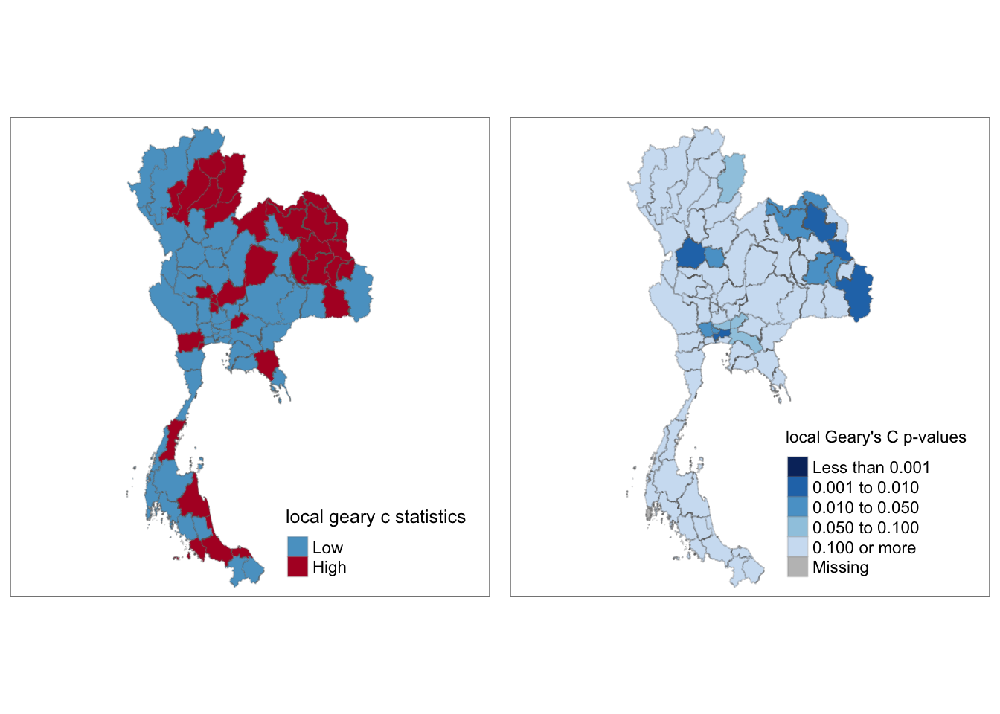
Drug Trafficking Per Capita
localGC_DTPC.map <- tm_shape(thailand_trafficking.localGC) +
tm_fill(col="cluster",
style="pretty",
palette="-RdBu",
title="local geary c statistics") +
tm_borders(alpha = 0.2)
pvalue_gc_dtpc.map <- tm_shape(thailand_trafficking.localGC) +
tm_fill(col="p_sim",
breaks=c(-Inf, 0.001, 0.01, 0.05, 0.1, Inf),
palette="-Purples",
title = "local Geary's C p-values") +
tm_borders(alpha = 0.2)
tmap_arrange(localGC_DTPC.map, pvalue_gc_dtpc.map, asp=1, ncol=2)
12.0 Creating a LISA Cluster Map
The LISA Cluster Map shows the significant locations color coded by type of spatial autocorrelation. The first step before we can generate the LISA cluster map is to plot the Moran scatterplot.
12.1 Plotting Moran scatterplot
The plot is split into 4 quadrants, with the top right belonging to areas having a high DUPC in 2022, surrounded by other areas that have the average level of the DUPC. These are high-high locations. Conversely, the ones in the lower-left quadrant are low-low areas.
rswm_q_list <- recreate_listw(wm_q, rswm_q)
nci_dupc <- moran.plot(thai_drug_use_sf$DUPC_2022,rswm_q_list
,labels=as.character(thai_drug_use_sf$province_en),
xlab="DUPC 2022",
ylab="Spatially Lag DUPC 2022",
zero.policy = TRUE)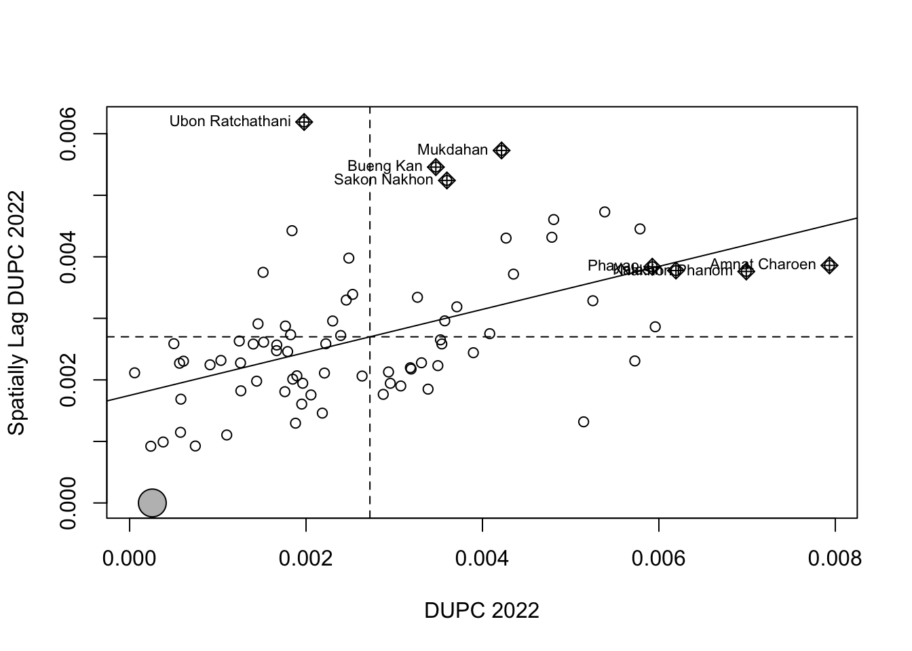
nci_dupc x wx is_inf labels dfb.1_
1 2.399964e-04 0.0009217871 FALSE Bangkok -0.1863833375
2 2.935020e-03 0.0021286098 FALSE Chai Nat -0.0315739020
3 3.799533e-04 0.0009906127 FALSE Nonthaburi -0.1745889941
4 5.809064e-04 0.0016864560 FALSE Pathum Thani -0.0484261173
5 1.260897e-03 0.0018222061 FALSE Phra Nakhon Si Ayutthaya -0.0524210146
6 3.471598e-03 0.0054580212 TRUE Bueng Kan 0.0497764973
7 5.767312e-04 0.0011479191 FALSE Samut Prakan -0.1474784217
8 1.034982e-03 0.0023162332 FALSE Saraburi 0.0322133994
9 3.523694e-03 0.0026507649 FALSE Sing Buri -0.0053384117
10 3.896775e-03 0.0024416912 FALSE Ang Thong 0.0030338835
11 2.875275e-03 0.0017648489 FALSE Chanthaburi -0.0518165160
12 2.055842e-03 0.0017556943 FALSE Chachoengsao -0.0696770087
13 1.257302e-03 0.0022756699 FALSE Chon Buri 0.0126137956
14 1.766162e-03 0.0028752745 FALSE Trat 0.0582246216
15 5.147066e-03 0.0013184671 FALSE Nakhon Nayok 0.1747272054
16 1.519233e-03 0.0026133314 FALSE Prachin Buri 0.0428279109
17 1.895893e-03 0.0020662882 FALSE Rayong -0.0367712507
18 1.849046e-03 0.0020120582 FALSE Sa Kaeo -0.0418307348
19 3.182506e-03 0.0021971473 FALSE Chaiyaphum -0.0233528783
20 1.401373e-03 0.0025825572 FALSE Nakhon Ratchasima 0.0464941074
21 2.208569e-03 0.0021109583 FALSE Buri Ram -0.0365009690
22 5.386161e-03 0.0047296612 FALSE Yasothon -0.0995242956
23 5.251536e-03 0.0032862995 FALSE Si Sa Ket 0.0243608016
24 1.512988e-03 0.0037477795 FALSE Surin 0.1916081035
25 7.934168e-03 0.0038603347 TRUE Amnat Charoen 0.1719861407
26 1.978290e-03 0.0061906215 TRUE Ubon Ratchathani 0.4239979440
27 6.193744e-03 0.0037765749 TRUE Kalasin 0.0189944204
28 2.528131e-03 0.0033893600 FALSE Khon Kaen 0.0542491568
29 6.990898e-03 0.0037617086 TRUE Nakhon Phanom 0.0823736644
30 3.190925e-03 0.0021760303 FALSE Lop Buri -0.0238840749
31 3.263254e-03 0.0033422383 FALSE Maha Sarakham 0.0139140472
32 4.216554e-03 0.0057282839 TRUE Mukdahan -0.0587259085
33 4.267759e-03 0.0043040394 FALSE Roi Et -0.0271467288
34 5.958944e-03 0.0028626962 FALSE Loei 0.1213389589
35 3.596974e-03 0.0052409605 TRUE Sakon Nakhon 0.0281071013
36 5.786192e-03 0.0044535733 FALSE Nong Khai -0.0780362291
37 1.840912e-03 0.0044246174 FALSE Nong Bua Lam Phu 0.2295113309
38 4.786778e-03 0.0043174827 FALSE Udon Thani -0.0494105741
39 2.485174e-03 0.0039789473 FALSE Chiang Rai 0.1016699910
40 2.301752e-03 0.0029570521 FALSE Chiang Mai 0.0339812995
41 4.807502e-03 0.0046055170 FALSE Nan -0.0665641056
42 5.925334e-03 0.0038385430 TRUE Phayao -0.0023644481
43 4.351739e-03 0.0037184663 FALSE Phrae -0.0135209983
44 1.951164e-03 0.0016067512 FALSE Mae Hong Son -0.0856431299
45 3.709756e-03 0.0031876323 FALSE Lampang 0.0008412656
46 5.727415e-03 0.0023077529 FALSE Lamphun 0.1614177664
47 7.448482e-04 0.0009257756 FALSE Kamphaeng Phet -0.1888984006
48 9.117506e-04 0.0022452065 FALSE Tak 0.0291401749
49 1.439855e-03 0.0019793809 FALSE Nakhon Sawan -0.0360718866
50 1.101007e-03 0.0011047169 FALSE Phichit -0.1575507454
51 5.660040e-04 0.0022704499 FALSE Phitsanulok 0.0597012509
52 1.668161e-03 0.0025667673 FALSE Phetchabun 0.0281807342
53 6.102615e-04 0.0023039294 FALSE Sukhothai 0.0621075233
54 3.539478e-03 0.0025838767 FALSE Uttaradit -0.0061640112
55 1.759641e-03 0.0018080082 FALSE Uthai Thani -0.0636137359
56 1.962166e-03 0.0019453332 FALSE Kanchanaburi -0.0503723798
57 1.880651e-03 0.0012963249 FALSE Nakhon Pathom -0.1202369304
58 1.825052e-03 0.0027334493 FALSE Prachuap Khiri Khan 0.0384843457
59 2.392893e-03 0.0027212842 FALSE Phetchaburi 0.0107898385
60 3.383373e-03 0.0018495552 FALSE Ratchaburi -0.0261377501
61 2.955427e-03 0.0019443018 FALSE Samut Songkhram -0.0400680916
62 5.663898e-05 0.0021148619 FALSE Samut Sakhon 0.0746756282
63 1.791250e-03 0.0024598349 FALSE Suphan Buri 0.0096454849
64 5.015449e-04 0.0025881835 FALSE Krabi 0.1251571648
65 3.074006e-03 0.0019010883 FALSE Chumphon -0.0380887363
66 3.308728e-03 0.0022778979 FALSE Nakhon Si Thammarat -0.0176691947
67 2.184585e-03 0.0014599192 FALSE Phangnga -0.0958495667
68 2.573575e-04 0.0000000000 FALSE Phuket -0.3811093344
69 1.242809e-03 0.0026313313 FALSE Ranong 0.0646904078
70 2.635403e-03 0.0020623347 FALSE Surat Thani -0.0397763388
71 2.224017e-03 0.0025871432 FALSE Trang 0.0054470050
72 1.665713e-03 0.0024750430 FALSE Narathiwat 0.0173293848
73 3.494364e-03 0.0022314031 FALSE Pattani -0.0132161665
74 2.455751e-03 0.0032970170 FALSE Phatthalung 0.0522028750
75 1.455722e-03 0.0029109502 FALSE Yala 0.0863652216
76 3.572773e-03 0.0029594228 FALSE Songkhla -0.0005056237
77 4.082549e-03 0.0027508472 FALSE Satun 0.0063333009
dfb.x dffit cov.r cook.d hat
1 0.153245254 -0.18655151 1.0461494 1.743872e-02 0.03993574
2 -0.008955830 -0.07372385 1.0295770 2.739265e-03 0.01318153
3 0.140978085 -0.17501632 1.0440330 1.535681e-02 0.03698451
4 0.037972083 -0.04873805 1.0603224 1.202619e-03 0.03304628
5 0.035531664 -0.05492014 1.0469390 1.525769e-03 0.02233632
6 0.128037758 0.32188218 0.8791779 4.819766e-02 0.01542818
7 0.115717309 -0.14841243 1.0441783 1.106581e-02 0.03312452
8 -0.023158244 0.03309556 1.0528370 5.547444e-04 0.02544648
9 -0.017310171 -0.04114385 1.0407073 8.566238e-04 0.01578024
10 -0.051868100 -0.09222982 1.0347755 4.285204e-03 0.01899436
11 -0.009867142 -0.11289501 1.0143112 6.375944e-03 0.01308698
12 0.031310235 -0.08666155 1.0289654 3.780553e-03 0.01493675
13 -0.008558763 0.01321016 1.0505109 8.842415e-05 0.02238232
14 -0.032206051 0.06632541 1.0378180 2.221614e-03 0.01699391
15 -0.376333448 -0.46190165 0.9302100 1.008799e-01 0.03863048
16 -0.026592762 0.04643227 1.0443627 1.090932e-03 0.01932620
17 0.018772936 -0.04336613 1.0406339 9.515286e-04 0.01598199
18 0.022026614 -0.04867996 1.0402459 1.198569e-03 0.01633045
19 -0.020018095 -0.07789872 1.0296841 3.057327e-03 0.01390527
20 -0.030146192 0.04953370 1.0455498 1.241418e-03 0.02062719
21 0.013855367 -0.04838142 1.0373720 1.183588e-03 0.01414726
22 0.199657726 0.23788285 1.0395403 2.820716e-02 0.04394084
23 -0.050749423 -0.06143500 1.0684442 1.910346e-03 0.04088936
24 -0.119265897 0.20752315 0.9884873 2.120002e-02 0.01939208
25 -0.257500109 -0.27123668 1.1674323 3.703866e-02 0.13154923
26 -0.203668070 0.51312562 0.6926899 1.087210e-01 0.01541563
27 -0.032799216 -0.03662638 1.0987215 6.796345e-04 0.06556927
28 -0.009767115 0.08654804 1.0252718 3.767286e-03 0.01315454
29 -0.131007004 -0.14130067 1.1259499 1.009114e-02 0.09250550
30 -0.021130288 -0.08084305 1.0288349 3.291395e-03 0.01393930
31 0.016078253 0.05386765 1.0364390 1.466492e-03 0.01425716
32 0.258722322 0.39532460 0.8832936 7.260064e-02 0.02271695
33 0.109692186 0.16445312 1.0204455 1.349921e-02 0.02339601
34 -0.216747047 -0.24561746 1.0632740 3.017704e-02 0.05869353
35 0.132840571 0.29410485 0.9112794 4.094756e-02 0.01631560
36 0.143519164 0.16470989 1.0719499 1.366015e-02 0.05394228
37 -0.121473750 0.26649874 0.9336954 3.403093e-02 0.01639290
38 0.124207996 0.16189056 1.0380213 1.313863e-02 0.03157157
39 -0.021599038 0.15745087 0.9908752 1.225678e-02 0.01323609
40 -0.011217338 0.04716487 1.0370753 1.124870e-03 0.01376566
41 0.165478375 0.21480176 1.0221208 2.294808e-02 0.03194688
42 0.004246304 0.00482313 1.0901541 1.178841e-05 0.05774872
43 0.048583394 0.07077604 1.0474325 2.531664e-03 0.02455930
44 0.042014981 -0.10273229 1.0249464 5.300555e-03 0.01559554
45 0.009274305 0.01868710 1.0446576 1.769157e-04 0.01723120
46 -0.300122566 -0.34607074 1.0232058 5.896539e-02 0.05238516
47 0.144091797 -0.19111237 1.0261761 1.821895e-02 0.03009467
48 -0.021523474 0.02971021 1.0551770 4.471227e-04 0.02733092
49 0.023075878 -0.03863564 1.0463257 7.557025e-04 0.02018907
50 0.111482924 -0.16266097 1.0236355 1.321980e-02 0.02449141
51 -0.046922538 0.06006306 1.0596239 1.825580e-03 0.03332623
52 -0.016398467 0.03140382 1.0443531 4.993973e-04 0.01785580
53 -0.048472824 0.06255699 1.0583810 1.980013e-03 0.03250052
54 -0.021546900 -0.05039957 1.0393738 1.284491e-03 0.01589159
55 0.035314140 -0.07235074 1.0365536 2.641909e-03 0.01704865
56 0.024504591 -0.06063844 1.0368594 1.857501e-03 0.01552180
57 0.062022350 -0.14117313 1.0104612 9.935984e-03 0.01609326
58 -0.020569276 0.04449692 1.0411401 1.001770e-03 0.01651634
59 -0.002971854 0.01576079 1.0407187 1.258488e-04 0.01346579
60 -0.047194572 -0.13213515 1.0109165 8.711794e-03 0.01488602
61 -0.012759851 -0.09592020 1.0219176 4.619639e-03 0.01322097
62 -0.062714807 0.07467903 1.0710503 2.821547e-03 0.04406106
63 -0.005259895 0.01105562 1.0445455 6.193328e-05 0.01678676
64 -0.099335813 0.12573022 1.0513940 7.963333e-03 0.03455944
65 -0.021277151 -0.10695941 1.0181933 5.732800e-03 0.01352211
66 -0.024125497 -0.07512414 1.0315661 2.845183e-03 0.01448041
67 0.037516567 -0.12566665 1.0119845 7.886398e-03 0.01425775
68 0.312678009 -0.38150860 0.9742546 7.039631e-02 0.03956036
69 -0.044078018 0.06764748 1.0453212 2.312816e-03 0.02256891
70 0.003533341 -0.06887488 1.0307209 2.392303e-03 0.01302128
71 -0.002025119 0.00727232 1.0417737 2.679932e-05 0.01407875
72 -0.010095898 0.01930160 1.0453305 1.887409e-04 0.01787840
73 -0.037513191 -0.09196649 1.0285555 4.255332e-03 0.01557911
74 -0.012186998 0.07928898 1.0280583 3.165897e-03 0.01330125
75 -0.054933687 0.09271663 1.0363616 4.331629e-03 0.02001218
76 -0.002091874 -0.00473675 1.0440154 1.136979e-05 0.01613361
77 -0.038145085 -0.06163760 1.0443023 1.920681e-03 0.02104825nci_dtpc <- moran.plot(thai_trafficking_sf$DTPC_2022,rswm_q_list
,labels=as.character(thai_trafficking_sf$province_en),
xlab="DTPC 2022",
ylab="Spatially Lag DTPC 2022",
zero.policy = TRUE)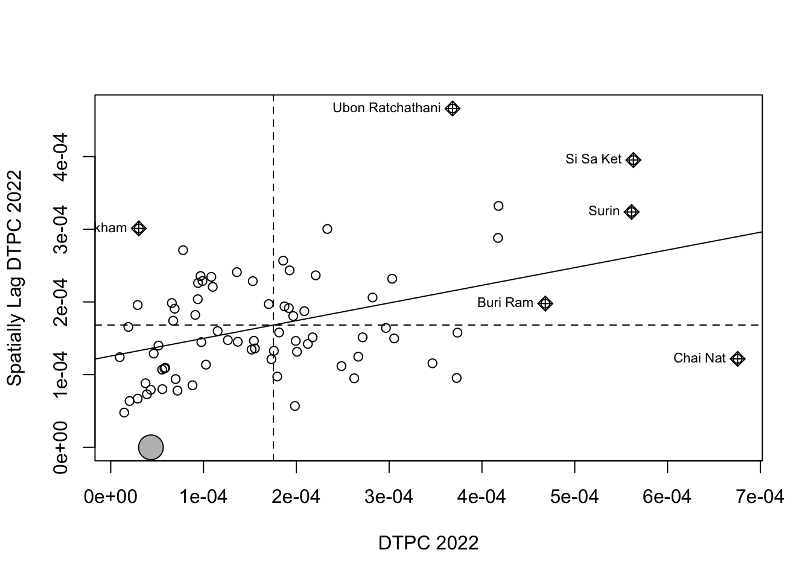
nci_dtpc x wx is_inf labels dfb.1_
1 2.029734e-05 6.374865e-05 FALSE Bangkok -0.1597900079
2 6.754828e-04 1.216827e-04 TRUE Chai Nat 0.7406555942
3 1.455940e-05 4.780743e-05 FALSE Nonthaburi -0.1996510394
4 2.906348e-05 6.698086e-05 FALSE Pathum Thani -0.1516190786
5 6.994189e-05 9.391654e-05 FALSE Phra Nakhon Si Ayutthaya -0.0934428621
6 3.735933e-04 1.577623e-04 FALSE Bueng Kan 0.0484053107
7 5.876575e-05 1.093820e-04 FALSE Samut Prakan -0.0615835436
8 4.317566e-05 7.919448e-05 FALSE Saraburi -0.1235557975
9 1.858338e-04 2.568251e-04 FALSE Sing Buri 0.0755382625
10 3.727782e-04 9.542192e-05 FALSE Ang Thong 0.1001506731
11 8.814015e-05 8.534085e-05 FALSE Chanthaburi -0.1082628164
12 1.984667e-04 5.686823e-05 FALSE Chachoengsao -0.0902283824
13 5.793029e-05 1.085369e-04 FALSE Chon Buri -0.0631252567
14 3.749813e-05 8.814015e-05 FALSE Trat -0.1034794930
15 5.544415e-05 1.069281e-04 FALSE Nakhon Nayok -0.0659106191
16 5.149942e-05 1.400378e-04 FALSE Prachin Buri 0.0040416088
17 3.900386e-05 7.303522e-05 FALSE Rayong -0.1372810302
18 9.380525e-05 2.037642e-04 FALSE Sa Kaeo 0.0942224665
19 3.054284e-04 1.498455e-04 FALSE Chaiyaphum 0.0097879242
20 2.124351e-04 1.422287e-04 FALSE Nakhon Ratchasima -0.0222542868
21 4.682797e-04 1.977618e-04 TRUE Buri Ram 0.0729843638
22 4.178424e-04 3.320363e-04 FALSE Yasothon -0.1320107133
23 5.631759e-04 3.952000e-04 TRUE Si Sa Ket -0.3766578932
24 5.612282e-04 3.237724e-04 TRUE Surin -0.1702340242
25 4.172949e-04 2.880500e-04 FALSE Amnat Charoen -0.0756966585
26 3.683263e-04 4.661044e-04 TRUE Ubon Ratchathani -0.2112801035
27 1.518317e-04 1.344698e-04 FALSE Kalasin -0.0329166617
28 9.110956e-05 1.821766e-04 FALSE Khon Kaen 0.0593117392
29 1.359616e-04 2.410058e-04 FALSE Nakhon Phanom 0.1091598036
30 2.908774e-05 1.957869e-04 FALSE Lop Buri 0.1457331960
31 3.023086e-05 3.011705e-04 TRUE Maha Sarakham 0.3990896254
32 7.798118e-05 2.712961e-04 FALSE Mukdahan 0.2380796377
33 2.334033e-04 3.003817e-04 FALSE Roi Et 0.0538465831
34 4.634463e-05 1.289920e-04 FALSE Loei -0.0167569445
35 2.714429e-04 1.513169e-04 FALSE Sakon Nakhon -0.0044435983
36 6.588238e-05 1.985080e-04 FALSE Nong Khai 0.1115191289
37 5.563861e-05 8.003506e-05 FALSE Nong Bua Lam Phu -0.1214424475
38 1.026510e-04 1.137083e-04 FALSE Udon Thani -0.0595899423
39 1.530967e-04 2.286381e-04 FALSE Chiang Rai 0.0768268770
40 1.966545e-04 1.805895e-04 FALSE Chiang Mai 0.0055423648
41 3.032708e-04 2.319156e-04 FALSE Nan -0.0057163520
42 1.927518e-04 2.434398e-04 FALSE Phayao 0.0577390445
43 2.208837e-04 2.366110e-04 FALSE Phrae 0.0321693795
44 1.758317e-04 1.327712e-04 FALSE Mae Hong Son -0.0341737274
45 2.965079e-04 1.641874e-04 FALSE Lampang 0.0038478270
46 2.086237e-04 1.873501e-04 FALSE Lamphun 0.0073532438
47 3.467191e-04 1.156081e-04 FALSE Kamphaeng Phet 0.0544978924
48 6.888783e-05 1.906988e-04 FALSE Tak 0.0933261420
49 1.099525e-04 2.207184e-04 FALSE Nakhon Sawan 0.1065326012
50 9.886596e-05 2.288355e-04 FALSE Phichit 0.1316610890
51 1.919209e-04 1.915340e-04 FALSE Phitsanulok 0.0157195389
52 2.667496e-04 1.246728e-04 FALSE Phetchabun -0.0100501645
53 1.084132e-04 2.345051e-04 FALSE Sukhothai 0.1301013183
54 2.821112e-04 2.061222e-04 FALSE Uttaradit 0.0001740825
55 9.412034e-05 2.261228e-04 FALSE Uthai Thani 0.1324131680
56 1.794664e-04 9.741621e-05 FALSE Kanchanaburi -0.0669761484
57 7.192699e-05 7.801721e-05 FALSE Nakhon Pathom -0.1239915799
58 1.872427e-04 1.939086e-04 FALSE Prachuap Khiri Khan 0.0195362106
59 1.702723e-04 1.970727e-04 FALSE Phetchaburi 0.0303427886
60 1.553216e-04 1.360058e-04 FALSE Ratchaburi -0.0312566472
61 2.486537e-04 1.117678e-04 FALSE Samut Songkhram -0.0234174689
62 9.709539e-06 1.240499e-04 FALSE Samut Sakhon -0.0096256252
63 9.682431e-05 2.356501e-04 FALSE Suphan Buri 0.1456595382
64 1.731524e-04 1.211798e-04 FALSE Krabi -0.0458386850
65 2.175450e-04 1.513057e-04 FALSE Chumphon -0.0160359412
66 1.262162e-04 1.474781e-04 FALSE Nakhon Si Thammarat -0.0123468919
67 1.543016e-04 1.466090e-04 FALSE Phangnga -0.0190001889
68 4.333511e-05 0.000000e+00 FALSE Phuket -0.3013871742
69 1.993958e-04 1.463751e-04 FALSE Ranong -0.0208011520
70 6.727871e-05 1.741222e-04 FALSE Surat Thani 0.0624737772
71 1.369228e-04 1.451952e-04 FALSE Trang -0.0178864836
72 1.814314e-04 1.579606e-04 FALSE Narathiwat -0.0106942130
73 1.152196e-04 1.599271e-04 FALSE Pattani 0.0094841509
74 2.623883e-04 9.495279e-05 FALSE Phatthalung -0.0182247851
75 2.007017e-04 1.314330e-04 FALSE Yala -0.0317967980
76 9.764815e-05 1.447099e-04 FALSE Songkhla -0.0076735230
77 1.902399e-05 1.656531e-04 FALSE Satun 0.0849575833
dfb.x dffit cov.r cook.d hat
1 0.1196216385 -0.160083004 1.0345483 1.283968e-02 0.02940760
2 -1.2030014982 -1.247871166 1.0528535 7.217153e-01 0.18389722
3 0.1516903498 -0.199831541 1.0244142 1.989652e-02 0.03064560
4 0.1107725430 -0.152228341 1.0334415 1.161518e-02 0.02760310
5 0.0585937335 -0.096485155 1.0363387 4.689510e-03 0.02057485
6 -0.1358855811 -0.165510916 1.0510009 1.375928e-02 0.03984383
7 0.0405897298 -0.062869244 1.0456960 1.998291e-03 0.02226957
8 0.0863443940 -0.124780231 1.0363255 7.825824e-03 0.02491871
9 0.0103117329 0.135707994 1.0027400 9.160515e-03 0.01306243
10 -0.2825549326 -0.344620343 0.9909936 5.793060e-02 0.03962347
11 0.0613890069 -0.114858456 1.0263725 6.621620e-03 0.01818053
12 -0.0311456116 -0.188169961 0.9712213 1.733048e-02 0.01335283
13 0.0417490510 -0.064396939 1.0456295 2.096376e-03 0.02240312
14 0.0736823520 -0.104218766 1.0430754 5.474025e-03 0.02596596
15 0.0440295923 -0.067101769 1.0457233 2.275814e-03 0.02280615
16 -0.0027413465 0.004102594 1.0518702 8.529281e-06 0.02346298
17 0.0972775993 -0.138354866 1.0338974 9.606109e-03 0.02568393
18 -0.0514460545 0.101078577 1.0295384 5.137712e-03 0.01752755
19 -0.0747123571 -0.108860387 1.0397901 5.967395e-03 0.02455134
20 -0.0147322161 -0.056684424 1.0353431 1.623282e-03 0.01392780
21 -0.1473973702 -0.162905211 1.0962399 1.338614e-02 0.07162135
22 0.3037167980 0.349366955 1.0238624 6.008839e-02 0.05316940
23 0.6650822620 0.705854099 1.0508231 2.401317e-01 0.11576082
24 0.3011798978 0.319824666 1.1359754 5.128802e-02 0.11473116
25 0.1744743531 0.200809743 1.0638623 2.023765e-02 0.05298817
26 0.6133120034 0.753729837 0.7517669 2.415083e-01 0.03843586
27 0.0074584802 -0.044397430 1.0370407 9.969239e-04 0.01336417
28 -0.0329872762 0.063281118 1.0396537 2.023277e-03 0.01783280
29 -0.0369907159 0.134731563 1.0068692 9.043230e-03 0.01404576
30 -0.1064648148 0.146319894 1.0351515 1.073993e-02 0.02759825
31 -0.2905787139 0.400840427 0.9102363 7.558990e-02 0.02737072
32 -0.1432881893 0.248427437 0.9648104 3.001390e-02 0.01946134
33 0.0790247572 0.203568512 0.9718065 2.026912e-02 0.01529138
34 0.0115819989 -0.016953242 1.0525225 1.456255e-04 0.02435333
35 -0.0441647373 -0.077226547 1.0388965 3.009939e-03 0.01929871
36 -0.0712690304 0.114628913 1.0324056 6.604455e-03 0.02117069
37 0.0810634036 -0.123656200 1.0327539 7.680644e-03 0.02277432
38 0.0304228583 -0.065241783 1.0374602 2.149678e-03 0.01659564
39 -0.0166301696 0.104471306 1.0187086 5.471119e-03 0.01332465
40 0.0017266255 0.011294650 1.0407871 6.463824e-05 0.01329778
41 0.0476515448 0.070052946 1.0470392 2.480225e-03 0.02417096
42 0.0140656977 0.112179951 1.0149624 6.297110e-03 0.01319445
43 0.0296583428 0.094530836 1.0252116 4.491310e-03 0.01440496
44 -0.0002032179 -0.055543589 1.0341620 1.558453e-03 0.01298719
45 -0.0464788215 -0.070403517 1.0454606 2.504698e-03 0.02301986
46 0.0041462065 0.017661924 1.0408950 1.580317e-04 0.01374446
47 -0.1886908047 -0.242164608 1.0147360 2.904480e-02 0.03305659
48 -0.0588159001 0.096246707 1.0366534 4.666705e-03 0.02072740
49 -0.0509800064 0.118988560 1.0195350 7.090871e-03 0.01590697
50 -0.0692707626 0.142828639 1.0123844 1.017546e-02 0.01698131
51 0.0036137933 0.030242628 1.0389994 4.630595e-04 0.01317514
52 -0.0687738299 -0.124446307 1.0241597 7.762817e-03 0.01869736
53 -0.0631650396 0.144665721 1.0086725 1.042470e-02 0.01604610
54 0.0144710616 0.023632680 1.0482596 2.829248e-04 0.02077760
55 -0.0721386421 0.142142007 1.0141545 1.008405e-02 0.01749252
56 -0.0033820184 -0.112702702 1.0141307 6.353960e-03 0.01299872
57 0.0769998185 -0.128335971 1.0263094 8.257610e-03 0.02029168
58 0.0030686785 0.035639540 1.0381379 6.428384e-04 0.01308401
59 -0.0017195640 0.046932062 1.0360576 1.113676e-03 0.01300447
60 0.0061942484 -0.043135701 1.0371293 9.411556e-04 0.01326045
61 -0.0622495478 -0.132568556 1.0159325 8.782845e-03 0.01666051
62 0.0074006176 -0.009629361 1.0607867 4.698701e-05 0.03172708
63 -0.0778226646 0.157280088 1.0063663 1.230067e-02 0.01719747
64 0.0011467363 -0.072706637 1.0295226 2.664384e-03 0.01299024
65 -0.0130097497 -0.044433571 1.0381631 9.986621e-04 0.01420474
66 0.0048968317 -0.014593237 1.0420621 1.078993e-04 0.01463485
67 0.0039261401 -0.026042597 1.0396287 3.434573e-04 0.01328905
68 0.2105035425 -0.304399874 0.9572130 4.476000e-02 0.02488994
69 -0.0075508280 -0.043907490 1.0371552 9.750872e-04 0.01338280
70 -0.0396702721 0.064312638 1.0437481 2.090547e-03 0.02096320
71 0.0059518637 -0.022180661 1.0408139 2.491983e-04 0.01399469
72 -0.0008116785 -0.018350784 1.0400343 1.705921e-04 0.01301247
73 -0.0043032985 0.010767955 1.0431266 5.875201e-05 0.01545542
74 -0.0945112154 -0.177012750 0.9999228 1.552321e-02 0.01816553
75 -0.0123598550 -0.068285029 1.0316149 2.352039e-03 0.01342691
76 0.0040747275 -0.008301090 1.0449789 3.491778e-05 0.01710956
77 -0.0638147030 0.085093135 1.0518871 3.657644e-03 0.02967845Interpretation: Key provinces such as Ubon Ratchathani and Bueng Kan show high spatial lag and DUPC/DTPC values, indicating that they influence nearby regions significantly. On the other hand, provinces like Khon Kaen and Mukdahan display lower spatial lags, suggesting less regional clustering.
12.2 Plotting Moran scatterplot with standardised variable
We use scale() to center and scale the variable, DUPC. Centering is done by subtracting the mean by the corresponding columns and scaling by dividing the variable by their standard deviation
thai_drug_use_sf$z_ii_DUPC <- scale(thai_drug_use_sf$DUPC_2022) %>%
as.vector
thai_trafficking_sf$z_ii_DTPC <- scale(thai_trafficking_sf$DTPC_2022) %>%
as.vectorthai_trafficking_sfSimple feature collection with 77 features and 19 fields
Geometry type: GEOMETRY
Dimension: XY
Bounding box: xmin: -313055.3 ymin: 621843.5 xmax: 568269.6 ymax: 2271054
Projected CRS: WGS 84 / UTM zone 48N
First 10 features:
province_en types_of_drug_offenses X2017 X2018 X2019 X2020
1 Bangkok trafficking_cases 950 623 428 352
2 Chai Nat trafficking_cases 210 151 101 117
3 Nonthaburi trafficking_cases 118 113 72 80
4 Pathum Thani trafficking_cases 83 68 23 69
5 Phra Nakhon Si Ayutthaya trafficking_cases 164 164 124 167
6 Bueng Kan trafficking_cases 261 234 151 174
7 Samut Prakan trafficking_cases 201 112 76 136
8 Saraburi trafficking_cases 58 45 36 50
9 Sing Buri trafficking_cases 41 44 33 48
10 Ang Thong trafficking_cases 51 61 56 46
X2021 X2022 Shape_Area_Polygon population_count ADM1_PCODE DTPC_2017
1 250 233 1578.8549 [m^2] 11479338 TH10 8.275739e-05
2 97 142 2502.2244 [m^2] 210220 TH18 9.989535e-04
3 60 31 639.9493 [m^2] 2129209 TH12 5.541964e-05
4 106 80 1524.3654 [m^2] 2752595 TH13 3.015336e-05
5 112 72 2566.0800 [m^2] 1029426 TH14 1.593121e-04
6 142 106 3989.9235 [m^2] 283731 TH38 9.198854e-04
7 159 199 953.3180 [m^2] 3386326 TH11 5.935636e-05
8 69 35 3494.9025 [m^2] 810642 TH19 7.154823e-05
9 40 26 822.6252 [m^2] 139910 TH17 2.930455e-04
10 51 75 949.3456 [m^2] 201192 TH15 2.534892e-04
DTPC_2018 DTPC_2019 DTPC_2020 DTPC_2021 DTPC_2022
1 5.427142e-05 3.728438e-05 3.066379e-05 2.177826e-05 2.029734e-05
2 7.182951e-04 4.804491e-04 5.565598e-04 4.614214e-04 6.754828e-04
3 5.307135e-05 3.381537e-05 3.757264e-05 2.817948e-05 1.455940e-05
4 2.470396e-05 8.355752e-06 2.506725e-05 3.850912e-05 2.906348e-05
5 1.593121e-04 1.204555e-04 1.622263e-04 1.087985e-04 6.994189e-05
6 8.247248e-04 5.321942e-04 6.132569e-04 5.004740e-04 3.735933e-04
7 3.307419e-05 2.244320e-05 4.016152e-05 4.695354e-05 5.876575e-05
8 5.551156e-05 4.440925e-05 6.167951e-05 8.511772e-05 4.317566e-05
9 3.144879e-04 2.358659e-04 3.430777e-04 2.858981e-04 1.858338e-04
10 3.031930e-04 2.783411e-04 2.286373e-04 2.534892e-04 3.727782e-04
dtpc_2022.lag geometry z_ii_DTPC
1 6.374865e-05 POLYGON ((25835.57 1547090,... -1.11712320
2 1.216827e-04 POLYGON ((-24181.19 1709887... 3.60404996
3 4.780743e-05 POLYGON ((-3347.358 1563866... -1.15846998
4 6.698086e-05 POLYGON ((56466.67 1578825,... -1.05395561
5 9.391654e-05 POLYGON ((16427.34 1625110,... -0.75939164
6 1.577623e-04 POLYGON ((331560.4 2040603,... 1.42867708
7 1.093820e-04 POLYGON ((38002.87 1520530,... -0.83992529
8 7.919448e-05 POLYGON ((112824.3 1669647,... -0.95226531
9 2.568251e-04 POLYGON ((1875.759 1673463,... 0.07570857
10 9.542192e-05 POLYGON ((-2670.024 1641280... 1.42280390We plot the Moran scatterplot using the code chunk below:
rswm_q_list <- recreate_listw(wm_q, rswm_q)
nci_dupc_zii <- moran.plot(thai_drug_use_sf$z_ii_DUPC, rswm_q_list,
labels=as.character(thai_drug_use_sf$province_en),
xlab="z-DUPC 2022",
ylab="Spatially Lag z-DUPC 2022"
)Warning in lag.listw(listw, x, zero.policy = zero.policy): NAs in lagged valuesWarning in moran.plot(thai_drug_use_sf$z_ii_DUPC, rswm_q_list, labels =
as.character(thai_drug_use_sf$province_en), : no-neighbour observation(s) in
moran.plot() - use zero.policy=TRUE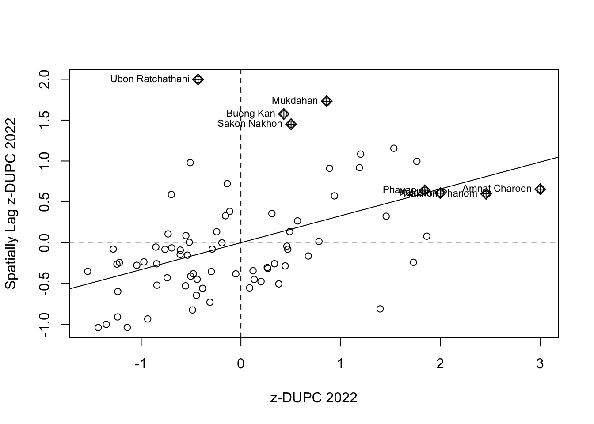
nci_dtpc_zii <- moran.plot(thai_trafficking_sf$z_ii_DTPC, rswm_q_list,
labels=as.character(thai_trafficking_sf$province_en),
xlab="z-DTPC 2022",
ylab="Spatially Lag z-DTPC 2022"
)Warning in lag.listw(listw, x, zero.policy = zero.policy): NAs in lagged valuesWarning in moran.plot(thai_trafficking_sf$z_ii_DTPC, rswm_q_list, labels =
as.character(thai_trafficking_sf$province_en), : no-neighbour observation(s) in
moran.plot() - use zero.policy=TRUE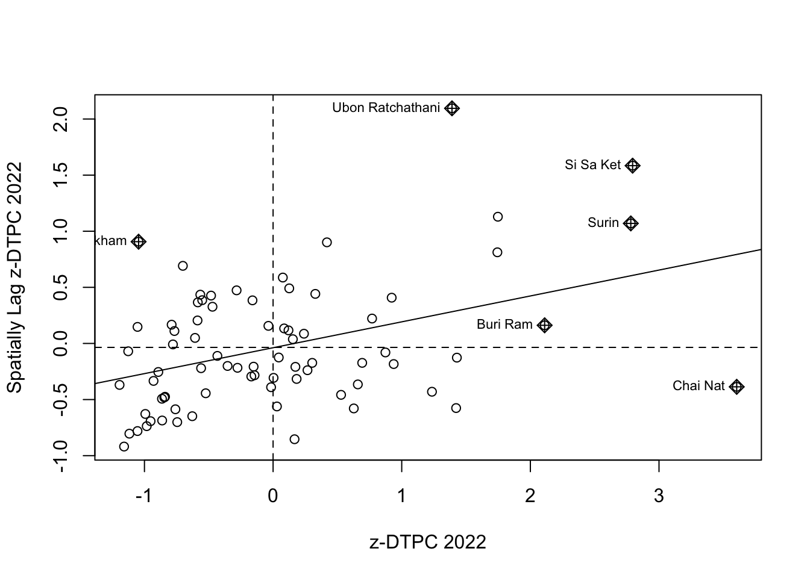
nci_dupc_zii x wx is_inf labels dfb.1_
1 -1.43111963 -1.038313850 FALSE Bangkok -0.121595258
2 0.12158713 -0.343016975 FALSE Chai Nat -0.077130914
3 -1.35048510 -0.998660800 FALSE Nonthaburi -0.118186988
4 -1.23470832 -0.597758756 FALSE Pathum Thani -0.040434479
5 -0.84293972 -0.519547944 FALSE Phra Nakhon Si Ayutthaya -0.050154568
6 0.43073010 1.575184692 TRUE Bueng Kan 0.299170003
7 -1.23711378 -0.908030558 FALSE Samut Prakan -0.106027513
8 -0.97309784 -0.234919939 FALSE Saraburi 0.017541121
9 0.46074444 -0.042183388 FALSE Sing Buri -0.038831093
10 0.67569096 -0.162638763 FALSE Ang Thong -0.077131765
11 0.08716522 -0.552593619 FALSE Chanthaburi -0.117529456
12 -0.38494149 -0.557867897 FALSE Chachoengsao -0.087932374
13 -0.84501091 -0.258290042 FALSE Chon Buri 0.003928600
14 -0.55183725 0.087165222 FALSE Trat 0.054747011
15 1.39603124 -0.809771260 FALSE Nakhon Nayok -0.264039118
16 -0.69410241 -0.063750269 FALSE Prachin Buri 0.033626449
17 -0.47709386 -0.378922842 FALSE Rayong -0.045326852
18 -0.50408459 -0.410166860 FALSE Sa Kaeo -0.049936379
19 0.26417331 -0.303529933 FALSE Chaiyaphum -0.078468754
20 -0.76200624 -0.081480488 FALSE Nakhon Ratchasima 0.034665230
21 -0.29694939 -0.353186715 FALSE Buri Ram -0.051886201
22 1.53378316 1.155548540 FALSE Yasothon 0.132128543
23 1.45622064 0.323972473 FALSE Si Sa Ket -0.031293208
24 -0.69770009 0.589848805 FALSE Surin 0.170252667
25 3.00178761 0.654696185 TRUE Amnat Charoen -0.072046122
26 -0.42962224 1.997263803 TRUE Ubon Ratchathani 0.482458096
27 1.99906274 0.606438928 TRUE Kalasin -0.010561824
28 -0.11283757 0.383349588 FALSE Khon Kaen 0.084854458
29 2.45833382 0.597873913 TRUE Nakhon Phanom -0.044092313
30 0.26902335 -0.315696203 FALSE Lop Buri -0.081243904
31 0.31069491 0.356200952 FALSE Maha Sarakham 0.050724404
32 0.85992763 1.730893400 TRUE Mukdahan 0.302316689
33 0.88942906 0.910331500 FALSE Roi Et 0.124130874
34 1.86378526 0.079918369 FALSE Loei -0.109120803
35 0.50296400 1.450127682 TRUE Sakon Nakhon 0.265543720
36 1.76425625 0.996483725 FALSE Nong Khai 0.084476909
37 -0.50877057 0.979801075 FALSE Nong Bua Lam Phu 0.240119730
38 1.18845553 0.918076687 FALSE Udon Thani 0.105955197
39 -0.13758657 0.723033430 FALSE Chiang Rai 0.156597411
40 -0.24326321 0.134280397 FALSE Chiang Mai 0.043207431
41 1.20039568 1.084024295 FALSE Nan 0.139167511
42 1.84442132 0.642141116 TRUE Phayao 0.007072803
43 0.93781317 0.572960372 FALSE Phrae 0.052738183
44 -0.44525022 -0.643679729 FALSE Mae Hong Son -0.101686066
45 0.56794218 0.267126512 FALSE Lampang 0.015902784
46 1.73039284 -0.239805758 FALSE Lamphun -0.166174871
47 -1.14025513 -1.036015920 FALSE Kamphaeng Phet -0.139650544
48 -1.04409624 -0.275841136 FALSE Tak 0.013942564
49 -0.73983526 -0.428993487 FALSE Nakhon Sawan -0.038275928
50 -0.93505822 -0.932920955 FALSE Phichit -0.130699091
51 -1.24329416 -0.261297447 FALSE Phitsanulok 0.030934072
52 -0.60829927 -0.090577613 FALSE Phetchabun 0.022256655
53 -1.21779572 -0.242008631 FALSE Sukhothai 0.033184198
54 0.46983839 -0.080720257 FALSE Uttaradit -0.047142783
55 -0.55559396 -0.527727848 FALSE Uthai Thani -0.070658507
56 -0.43891175 -0.448609693 FALSE Kanchanaburi -0.062053694
57 -0.48587553 -0.822528259 FALSE Nakhon Pathom -0.136217090
58 -0.51790819 0.005454246 FALSE Prachuap Khiri Khan 0.035707822
59 -0.19075326 -0.001554548 FALSE Phetchaburi 0.012221478
60 0.37990039 -0.503791055 FALSE Ratchaburi -0.126778565
61 0.13334415 -0.449203919 FALSE Samut Songkhram -0.099439573
62 -1.53675889 -0.350937654 FALSE Samut Sakhon 0.032945033
63 -0.53738312 -0.152185489 FALSE Suphan Buri 0.004884173
64 -1.28043149 -0.078238924 FALSE Krabi 0.072306367
65 0.20166175 -0.474100868 FALSE Chumphon -0.108979886
66 0.33689452 -0.257006373 FALSE Nakhon Si Thammarat -0.073844451
67 -0.31076737 -0.728275302 FALSE Phangnga -0.127873913
69 -0.85336056 -0.053379825 FALSE Ranong 0.046825455
70 -0.05103386 -0.381200628 FALSE Surat Thani -0.073608581
71 -0.28804899 -0.078838314 FALSE Trang 0.003093634
72 -0.60970935 -0.143423501 FALSE Narathiwat 0.011549214
73 0.44384623 -0.283793835 FALSE Pattani -0.086269507
74 -0.15453860 0.330147231 FALSE Phatthalung 0.076898366
75 -0.73069323 0.107719320 FALSE Yala 0.071506753
76 0.48902108 0.135646247 FALSE Songkhla -0.005154652
77 0.78272231 0.015477829 FALSE Satun -0.048448400
dfb.x dffit cov.r cook.d hat
1 0.1739004415 -0.210335793 1.0428281 2.211467e-02 0.04158067
2 -0.0080622833 -0.077716915 1.0287697 3.042654e-03 0.01330104
3 0.1598663545 -0.197035991 1.0409102 1.941962e-02 0.03850701
4 0.0501778567 -0.063853921 1.0608656 2.063354e-03 0.03440127
5 0.0431030615 -0.065520633 1.0467969 2.170506e-03 0.02319687
6 0.1259809413 0.326865244 0.8732665 4.953350e-02 0.01545351
7 0.1318232147 -0.167629040 1.0417088 1.409035e-02 0.03448289
8 -0.0173095297 0.024413436 1.0548787 3.019995e-04 0.02645890
9 -0.0175531830 -0.042923957 1.0408063 9.323868e-04 0.01580014
10 -0.0520374057 -0.093874950 1.0345408 4.438937e-03 0.01899449
11 -0.0081695818 -0.117988603 1.0123304 6.956986e-03 0.01322128
12 0.0357101965 -0.094294698 1.0275087 4.471733e-03 0.01536097
13 -0.0033842398 0.005137363 1.0520078 1.337682e-05 0.02324519
14 -0.0313265440 0.062569846 1.0397025 1.978372e-03 0.01755944
15 -0.3787571394 -0.465878015 0.9274574 1.024628e-01 0.03880963
16 -0.0239742810 0.040933462 1.0462349 8.482978e-04 0.02002820
17 0.0225705476 -0.050260142 1.0405036 1.277704e-03 0.01648173
18 0.0262060881 -0.055963580 1.0399880 1.583450e-03 0.01685348
19 -0.0196227932 -0.081259684 1.0289684 3.325567e-03 0.01397270
20 -0.0270345122 0.043562620 1.0475635 9.607068e-04 0.02139953
21 0.0165056807 -0.054159086 1.0370397 1.482646e-03 0.01450514
22 0.2090594090 0.249465783 1.0365297 3.097184e-02 0.04419726
23 -0.0469066686 -0.056888504 1.0694161 1.638623e-03 0.04110057
24 -0.1219875074 0.207593756 0.9908025 2.123164e-02 0.02009773
25 -0.2311631812 -0.243474097 1.1734813 2.988829e-02 0.13348723
26 -0.2174341654 0.525515272 0.6851366 1.133846e-01 0.01587570
27 -0.0220464239 -0.024630083 1.1001625 3.074395e-04 0.06618882
28 -0.0112883101 0.085405019 1.0263668 3.669952e-03 0.01339185
29 -0.1144313066 -0.123431677 1.1291800 7.706473e-03 0.09363806
30 -0.0207201343 -0.084239262 1.0280612 3.572283e-03 0.01400521
31 0.0151022612 0.053208058 1.0369567 1.431117e-03 0.01431080
32 0.2620948428 0.403919676 0.8751813 7.544266e-02 0.02272691
33 0.1114540820 0.168419370 1.0189167 1.414750e-02 0.02340984
34 -0.2116442462 -0.239993186 1.0653479 2.883130e-02 0.05919125
35 0.1316085095 0.298648615 0.9063193 4.210722e-02 0.01632896
36 0.1547013312 0.177695128 1.0704836 1.588453e-02 0.05435886
37 -0.1271304966 0.269608334 0.9340661 3.482730e-02 0.01692003
38 0.1285570214 0.168166233 1.0364753 1.416579e-02 0.03166039
39 -0.0247403193 0.158104262 0.9913567 1.236014e-02 0.01348817
40 -0.0114188043 0.044489108 1.0383214 1.001297e-03 0.01408583
41 0.1706176226 0.222251526 1.0194909 2.453465e-02 0.03204004
42 0.0135687865 0.015422699 1.0910060 1.205526e-04 0.05823009
43 0.0500308763 0.073391775 1.0473382 2.722099e-03 0.02458084
44 0.0474112583 -0.111398381 1.0229587 6.224998e-03 0.01606848
45 0.0089505639 0.018399132 1.0450554 1.715374e-04 0.01723704
46 -0.2982092159 -0.344185627 1.0243016 5.834394e-02 0.05277579
47 0.1605267110 -0.210801622 1.0219664 2.210682e-02 0.03132023
48 -0.0147236811 0.020088442 1.0572560 2.044981e-04 0.02843139
49 0.0290148692 -0.047598604 1.0465210 1.146667e-03 0.02093807
50 0.1241158464 -0.178559688 1.0200351 1.589442e-02 0.02545817
51 -0.0386448971 0.049049933 1.0625668 1.218310e-03 0.03469330
52 -0.0139807101 0.026062777 1.0458911 3.441166e-04 0.01847373
53 -0.0406377320 0.051985297 1.0613221 1.368299e-03 0.03383185
54 -0.0217526346 -0.052301743 1.0393744 1.383266e-03 0.01590997
55 0.0406945047 -0.080882786 1.0356368 3.299334e-03 0.01761760
56 0.0285407824 -0.067821513 1.0362304 2.322378e-03 0.01598949
57 0.0690193082 -0.151560697 1.0070379 1.142960e-02 0.01660052
58 -0.0192295381 0.040241499 1.0427422 8.197325e-04 0.01705150
59 -0.0025850474 0.012446087 1.0415953 7.850159e-05 0.01375111
60 -0.0467546364 -0.135978390 1.0091219 9.217580e-03 0.01492206
61 -0.0115845061 -0.100347951 1.0205364 5.052263e-03 0.01333562
62 -0.0504500624 0.059739979 1.0748034 1.807039e-03 0.04587355
63 -0.0027246963 0.005548490 1.0456669 1.560336e-05 0.01733925
64 -0.0929233581 0.116675491 1.0553640 6.865522e-03 0.03597942
65 -0.0202881881 -0.111249627 1.0166277 6.196869e-03 0.01361055
66 -0.0239706671 -0.078082528 1.0310167 3.072791e-03 0.01452697
67 0.0424479221 -0.133993529 1.0091173 8.951774e-03 0.01462568
69 -0.0407206811 0.061480722 1.0477259 1.911705e-03 0.02344117
70 0.0051974246 -0.073706759 1.0298849 2.738346e-03 0.01322365
71 -0.0009565384 0.003221350 1.0426101 5.259572e-06 0.01443023
72 -0.0072708595 0.013532648 1.0466724 9.280826e-05 0.01849767
73 -0.0374941764 -0.094731577 1.0278646 4.513494e-03 0.01560199
74 -0.0134623260 0.077830126 1.0292542 3.051837e-03 0.01356371
75 -0.0535613036 0.088541909 1.0388054 3.953496e-03 0.02075167
76 -0.0024805163 -0.005763678 1.0443938 1.683706e-05 0.01614899
77 -0.0380902614 -0.062204947 1.0445260 1.956408e-03 0.02105108nci_dtpc_zii x wx is_inf labels dfb.1_
1 -1.117123203 -0.804019238 FALSE Bangkok -0.116915833
2 3.604049956 -0.386554504 TRUE Chai Nat -0.315793671
3 -1.158469982 -0.918889435 FALSE Nonthaburi -0.141844384
4 -1.053955606 -0.780728382 FALSE Pathum Thani -0.114574982
5 -0.759391643 -0.586633703 FALSE Phra Nakhon Si Ayutthaya -0.084458672
6 1.428677078 -0.126570299 FALSE Bueng Kan -0.093922092
7 -0.839925285 -0.475191551 FALSE Samut Prakan -0.055084349
8 -0.952265307 -0.692718781 FALSE Saraburi -0.099205197
9 0.075708567 0.587262317 FALSE Sing Buri 0.135763203
10 1.422803900 -0.575786180 FALSE Ang Thong -0.197443633
11 -0.628257595 -0.648428917 FALSE Chanthaburi -0.105053649
12 0.166740102 -0.853598576 FALSE Chachoengsao -0.192385413
13 -0.845945502 -0.481281396 FALSE Chon Buri -0.056163913
14 -0.993176783 -0.628257595 FALSE Trat -0.082356220
15 -0.863860261 -0.492874362 FALSE Nakhon Nayok -0.057895954
16 -0.892285451 -0.254290353 FALSE Prachin Buri -0.002339454
17 -0.982326696 -0.737101548 FALSE Rayong -0.107968836
18 -0.587435705 0.204913030 FALSE Sa Kaeo 0.085177500
19 0.937490649 -0.183617561 FALSE Chaiyaphum -0.080410460
20 0.267394454 -0.238502969 FALSE Nakhon Ratchasima -0.058025318
21 2.110973639 0.161660389 TRUE Buri Ram -0.066041917
22 1.747530118 1.129223405 FALSE Yasothon 0.175155135
23 2.794782479 1.584372214 TRUE Si Sa Ket 0.239687796
24 2.780747300 1.069675050 TRUE Surin 0.111717910
25 1.743584785 0.812264053 FALSE Amnat Charoen 0.101625687
26 1.390723716 2.095299127 TRUE Ubon Ratchathani 0.444171827
27 -0.169305228 -0.294412756 FALSE Kalasin -0.048312742
28 -0.606860468 0.049355864 FALSE Khon Kaen 0.051090999
29 -0.283663071 0.473270490 FALSE Nakhon Phanom 0.129440487
30 -1.053780848 0.147429576 FALSE Lop Buri 0.098167925
31 -1.045543637 0.906808593 TRUE Maha Sarakham 0.280549998
32 -0.701461675 0.691538399 FALSE Mukdahan 0.204740744
33 0.418487721 0.901124893 FALSE Roi Et 0.189458538
34 -0.929430143 -0.333884950 FALSE Loei -0.018453492
35 0.692596068 -0.173015222 FALSE Sakon Nakhon -0.065279328
36 -0.788643893 0.167037115 FALSE Nong Khai 0.087675902
37 -0.862459035 -0.686661718 FALSE Nong Bua Lam Phu -0.102238461
38 -0.523694543 -0.444017117 FALSE Udon Thani -0.063947106
39 -0.160189638 0.384150358 FALSE Chiang Rai 0.102482637
40 0.153681538 0.037919602 FALSE Chiang Mai 0.008948550
41 0.921943494 0.407767777 FALSE Nan 0.051649289
42 0.125559175 0.490809490 FALSE Phayao 0.111250832
43 0.328273740 0.441602137 FALSE Phrae 0.089562176
44 0.003634899 -0.306652769 FALSE Mae Hong Son -0.059788306
45 0.873210362 -0.080272223 FALSE Lampang -0.054017464
46 0.239929462 0.086634942 FALSE Lamphun 0.015309699
47 1.235025306 -0.430327549 FALSE Kamphaeng Phet -0.152520817
48 -0.766987075 0.110765475 FALSE Tak 0.073660929
49 -0.471080628 0.327082308 FALSE Nakhon Sawan 0.106508353
50 -0.550968903 0.385573230 FALSE Phichit 0.124317554
51 0.119571625 0.116783422 FALSE Phitsanulok 0.028146457
52 0.658776618 -0.365008388 FALSE Phetchabun -0.106426514
53 -0.482172762 0.426427396 FALSE Sukhothai 0.129807499
54 0.769470415 0.221904024 FALSE Uttaradit 0.018200326
55 -0.585165159 0.366025542 FALSE Uthai Thani 0.121765385
56 0.029826253 -0.561415595 FALSE Kanchanaburi -0.118241062
57 -0.745087286 -0.701202057 FALSE Nakhon Pathom -0.111360819
58 0.085861131 0.133895075 FALSE Prachuap Khiri Khan 0.033671742
59 -0.036425191 0.156694587 FALSE Phetchaburi 0.045055827
60 -0.144157661 -0.283344661 FALSE Ratchaburi -0.047119376
61 0.528380290 -0.458000074 FALSE Samut Songkhram -0.120549794
62 -1.193417369 -0.369496965 FALSE Samut Sakhon -0.012851178
63 -0.565680794 0.434677798 FALSE Suphan Buri 0.136436999
64 -0.015671297 -0.390178434 FALSE Krabi -0.077447150
65 0.304215342 -0.173095405 FALSE Chumphon -0.045391623
66 -0.353886940 -0.200676966 FALSE Nakhon Si Thammarat -0.018051014
67 -0.151507882 -0.206939547 FALSE Phangnga -0.029748135
69 0.173434787 -0.208624891 FALSE Ranong -0.046616253
70 -0.778582133 -0.008683198 FALSE Surat Thani 0.047203503
71 -0.276736783 -0.217126823 FALSE Trang -0.025648874
72 0.043986164 -0.125141185 FALSE Narathiwat -0.021537027
73 -0.433127217 -0.110971098 FALSE Pattani 0.006032421
74 0.627349686 -0.579166692 FALSE Phatthalung -0.153322901
75 0.182844847 -0.316295119 FALSE Yala -0.071025187
76 -0.559744304 -0.220623673 FALSE Songkhla -0.011967481
77 -1.126298743 -0.069710467 FALSE Satun 0.052258892
dfb.x dffit cov.r cook.d hat
1 0.1310119971 -0.174506721 1.0316633 1.523052e-02 0.03015340
2 -1.1955690395 -1.240508587 1.0555512 7.136742e-01 0.18495503
3 0.1646787811 -0.216004999 1.0203169 2.319171e-02 0.03142030
4 0.1213053035 -0.165821592 1.0306919 1.375883e-02 0.02830582
5 0.0649608870 -0.105909459 1.0349153 5.644981e-03 0.02109359
6 -0.1362735163 -0.166488742 1.0509461 1.392180e-02 0.03986838
7 0.0467408481 -0.071798187 1.0452725 2.604927e-03 0.02283584
8 0.0951384951 -0.136595425 1.0342745 9.365672e-03 0.02555477
9 0.0086392077 0.136157095 1.0029321 9.221434e-03 0.01321108
10 -0.2852653768 -0.348995480 0.9884948 5.933517e-02 0.03964729
11 0.0671851014 -0.123995261 1.0242310 7.707195e-03 0.01862633
12 -0.0299120656 -0.195084113 0.9664366 1.858038e-02 0.01347468
13 0.0479898410 -0.073419327 1.0451719 2.723566e-03 0.02297302
14 0.0822872296 -0.115694501 1.0416859 6.739120e-03 0.02662844
15 0.0504908258 -0.076345158 1.0452110 2.944396e-03 0.02338695
16 0.0021056533 -0.003127992 1.0529080 4.959156e-06 0.02406127
17 0.1067290082 -0.150870153 1.0314682 1.140534e-02 0.02633935
18 -0.0510294841 0.098748748 1.0312425 4.906593e-03 0.01795177
19 -0.0757235109 -0.111153806 1.0394251 6.220383e-03 0.02455295
20 -0.0149288512 -0.060101519 1.0349856 1.824490e-03 0.01402311
21 -0.1432484288 -0.158505013 1.0972954 1.267760e-02 0.07180635
22 0.3126415721 0.360310297 1.0198685 6.378419e-02 0.05325032
23 0.6954989977 0.738547948 1.0411338 2.616036e-01 0.11625667
24 0.3224757160 0.342632774 1.1332380 5.877684e-02 0.11521912
25 0.1809741172 0.208684952 1.0624336 2.184050e-02 0.05306819
26 0.6268796716 0.772898770 0.7364697 2.513491e-01 0.03845587
27 0.0088180603 -0.049005436 1.0367966 1.214317e-03 0.01359818
28 -0.0315917057 0.059734833 1.0412276 1.803827e-03 0.01826722
29 -0.0384295477 0.134570754 1.0078238 9.024648e-03 0.01432621
30 -0.1039176647 0.142063908 1.0377190 1.013312e-02 0.02830086
31 -0.2947180739 0.404364966 0.9105353 7.691011e-02 0.02806780
32 -0.1457628770 0.249848015 0.9656525 3.036386e-02 0.01994717
33 0.0777892504 0.205726779 0.9701216 2.068260e-02 0.01535297
34 0.0172831029 -0.025125812 1.0531948 3.198692e-04 0.02497488
35 -0.0450570969 -0.079790994 1.0386095 3.212684e-03 0.01931785
36 -0.0699652653 0.111488625 1.0344475 6.252014e-03 0.02170645
37 0.0890207493 -0.134726036 1.0306132 9.105199e-03 0.02335427
38 0.0342676472 -0.072174462 1.0367624 2.629398e-03 0.01698724
39 -0.0177694289 0.103799314 1.0196834 5.402914e-03 0.01355514
40 0.0012733030 0.009055261 1.0413942 4.155707e-05 0.01342331
41 0.0478117085 0.070827843 1.0472219 2.535618e-03 0.02417311
42 0.0126719671 0.112137492 1.0154034 6.293284e-03 0.01332809
43 0.0285686739 0.094357778 1.0255985 4.475541e-03 0.01448580
44 0.0005341204 -0.059788705 1.0336812 1.805200e-03 0.01315894
45 -0.0472948535 -0.072248493 1.0454481 2.637672e-03 0.02302421
46 0.0035132356 0.015751932 1.0415091 1.257307e-04 0.01384669
47 -0.1905587716 -0.245594447 1.0131653 2.985014e-02 0.03306284
48 -0.0572079006 0.092703461 1.0386023 4.332338e-03 0.02125053
49 -0.0515089209 0.117733836 1.0210086 6.945838e-03 0.01627262
50 -0.0699832049 0.141903588 1.0139085 1.004957e-02 0.01738670
51 0.0030359663 0.028349942 1.0397493 4.070323e-04 0.01331054
52 -0.0697746113 -0.128002645 1.0229765 8.207995e-03 0.01872043
53 -0.0642076428 0.144104255 1.0100159 1.034888e-02 0.01641714
54 0.0139959732 0.023100601 1.0486788 2.703808e-04 0.02078916
55 -0.0726751274 0.141027702 1.0157631 9.932292e-03 0.01791555
56 -0.0020600081 -0.118294309 1.0119915 6.992124e-03 0.01316189
57 0.0840803573 -0.138701204 1.0238555 9.631302e-03 0.02080220
58 0.0024872381 0.033797372 1.0389351 5.782800e-04 0.01322954
59 -0.0022172453 0.045086034 1.0369944 1.028156e-03 0.01318979
60 0.0074131000 -0.047610437 1.0369148 1.146299e-03 0.01348481
61 -0.0629824248 -0.136723000 1.0142288 9.333911e-03 0.01670218
62 0.0153585655 -0.019903046 1.0617897 2.007464e-04 0.03252663
63 -0.0787964393 0.156707133 1.0078251 1.221749e-02 0.01761041
64 0.0021955972 -0.077456769 1.0285882 3.022255e-03 0.01316848
65 -0.0133718004 -0.047485210 1.0380554 1.140437e-03 0.01429116
66 0.0066239487 -0.019151063 1.0424856 1.858321e-04 0.01494591
67 0.0048992655 -0.030090332 1.0397809 4.585005e-04 0.01351621
69 -0.0075631528 -0.047323448 1.0369964 1.132555e-03 0.01350278
70 -0.0371999558 0.059735737 1.0454975 1.804604e-03 0.02149307
71 0.0074374581 -0.026617466 1.0410670 3.588569e-04 0.01427221
72 -0.0006822524 -0.021558122 1.0403073 2.354473e-04 0.01317109
73 -0.0026896884 0.006574408 1.0440075 2.190666e-05 0.01580291
74 -0.0955939354 -0.181715157 0.9973387 1.633755e-02 0.01819259
75 -0.0121986295 -0.072222064 1.0309360 2.630053e-03 0.01354430
76 0.0068411254 -0.013710941 1.0456066 9.526880e-05 0.01751945
77 -0.0590284667 0.078349546 1.0541799 3.103057e-03 0.0304306212.3 Preparing LISA map classes
The code chunks below show the steps to prepare a LISA cluster map: 1. quadrant preparation 2. Derivation of the spatially lagged variable of interest (DUPC, DTPC) 3. centering the local Moran’s around the mean 4. Set a statistical significance level (0.05) 5. Define low-low, high-high, high-low and high-high categories and place non-significant Moran
Drug Use Per Capita
quadrant_dupc <- vector(mode="numeric",length=nrow(localMI_DUPC))
thai_drug_use_sf$dupc_2022.lag <- lag.listw(rswm_q_list, thai_drug_use_sf$DUPC_2022, zero.policy = TRUE)
DV_DUPC <- thai_drug_use_sf$DUPC_2022 - mean(thai_drug_use_sf$DUPC_2022)
LM_I_DUPC <- localMI_DUPC[,1]
signif_dupc <- 0.05
quadrant_dupc[DV_DUPC <0 & LM_I_DUPC>0] <- 1
quadrant_dupc[DV_DUPC >0 & LM_I_DUPC<0] <- 2
quadrant_dupc[DV_DUPC <0 & LM_I_DUPC<0] <- 3
quadrant_dupc[DV_DUPC >0 & LM_I_DUPC>0] <- 4
quadrant_dupc[localMI_DUPC[,5]>signif_dupc] <- 0##Drug Trafficking Per Capita
quadrant_dtpc <- vector(mode="numeric",length=nrow(localMI_DTPC))
thai_trafficking_sf$dtpc_2022.lag <- lag.listw(rswm_q_list, thai_trafficking_sf$DTPC_2022, zero.policy = TRUE)
DV_DTPC <- thai_trafficking_sf$DTPC_2022 - mean(thai_trafficking_sf$DTPC_2022)
LM_I_DTPC <- localMI_DTPC[,1]
signif_dtpc <- 0.05
quadrant_dtpc[DV_DTPC <0 & LM_I_DTPC>0] <- 1
quadrant_dtpc[DV_DTPC >0 & LM_I_DTPC<0] <- 2
quadrant_dtpc[DV_DTPC <0 & LM_I_DTPC<0] <- 3
quadrant_dtpc[DV_DTPC >0 & LM_I_DTPC>0] <- 4
quadrant_dtpc[localMI_DTPC[,5]>signif_dtpc] <- 012.4 Plotting LISA map
Now, we can build the LISA map by using the code chunks below.
Drug Use Per Capita
thai_drug_use.localMI$quadrant_dupc <- quadrant_dupc
colors <- c("#ffffff", "#2c7bb6", "#abd9e9", "#fdae61", "#d7191c")
clusters <- c("insignificant", "low-low", "low-high", "high-low", "high-high")
LISAmap_DUPC <- tm_shape(thai_drug_use.localMI) +
tm_fill(col = "quadrant_dupc",
style = "cat",
palette = colors[c(sort(unique(quadrant_dupc)))+1],
labels = clusters[c(sort(unique(quadrant_dupc)))+1],
popup.vars = c("")) +
tm_view(set.zoom.limits = c(11,17)) +
tm_borders(alpha=0.5)
tmap_arrange(dupc_2022,dupc_2022_lag, asp=1, ncol=2)
tmap_arrange(LISAmap_DUPC, asp=1, ncol=1)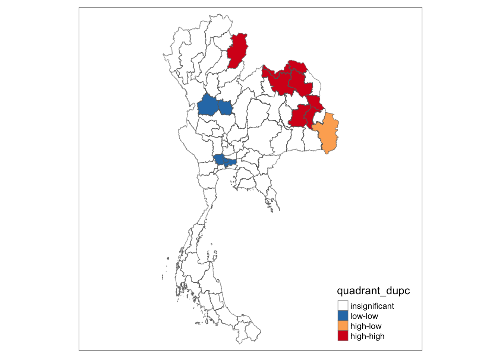
tmap_arrange(localMI_DUPC.map, pvalue_mi_dupc.map, asp=1, ncol=2)Variable(s) "ii" contains positive and negative values, so midpoint is set to 0. Set midpoint = NA to show the full spectrum of the color palette.
tmap_arrange(localGC_DUPC.map, pvalue_gc_dupc.map, asp=1, ncol=2)
Drug Trafficking Per Capita
thai_trafficking.localMI$quadrant_dtpc <- quadrant_dtpc
colors <- c("#ffffff", "#2c7bb6", "#abd9e9", "#fdae61", "#d7191c")
clusters <- c("insignificant", "low-low", "low-high", "high-low", "high-high")
LISAmap_DTPC <- tm_shape(thai_trafficking.localMI) +
tm_fill(col = "quadrant_dtpc",
style = "cat",
palette = colors[c(sort(unique(quadrant_dtpc)))+1],
labels = clusters[c(sort(unique(quadrant_dtpc)))+1],
popup.vars = c("")) +
tm_view(set.zoom.limits = c(11,17)) +
tm_borders(alpha=0.5)
tmap_arrange(dtpc_2022,dtpc_2022_lag, asp=1, ncol=2)
tmap_arrange(LISAmap_DTPC, asp=1, ncol=1)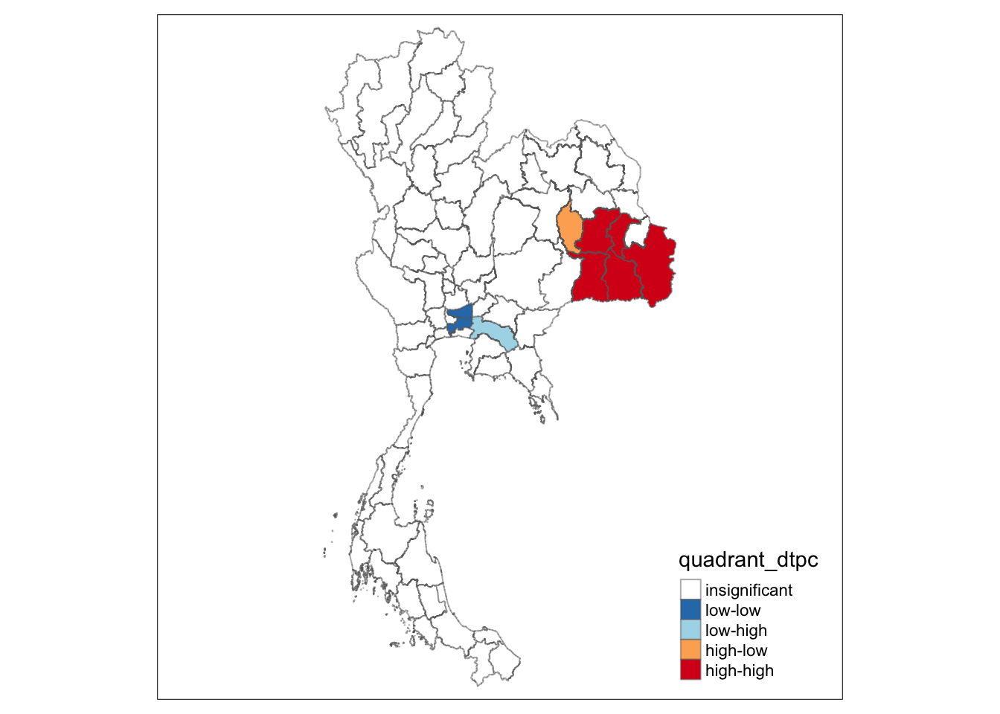
tmap_arrange(localMI_DTPC.map, pvalue_mi_dtpc.map, asp=1, ncol=2)Variable(s) "ii" contains positive and negative values, so midpoint is set to 0. Set midpoint = NA to show the full spectrum of the color palette.tmap_arrange(localGC_DTPC.map, pvalue_gc_dtpc.map, asp=1, ncol=2)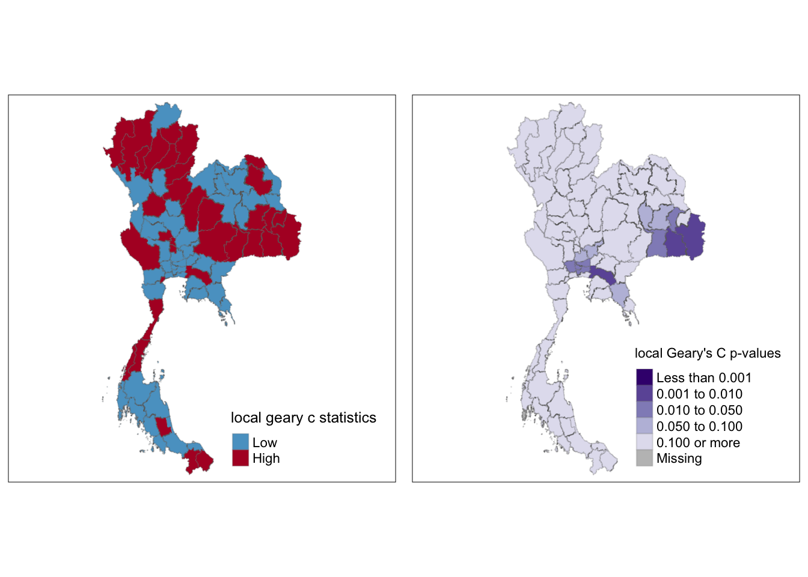
13.0 Hot Spot and Cold Spot Area Analysis
Beside detecting cluster and outliers, localised spatial statistics can be also used to detect hot spot and/or cold spot areas.
13.1 Deriving distance-based weight matrix
From our earlier analysis, we have determined the cut-off distance from 112km.
13.1.2 Computing Fixed distance weight matrix
wm_d112Neighbour list object:
Number of regions: 77
Number of nonzero links: 354
Percentage nonzero weights: 5.970653
Average number of links: 4.597403
2 disjoint connected subgraphsNext, recreate_listw() is used to convert the nb object into spatial weights object.
wmd112_lw <- nb2listw(wm_d112, style="B")
summary(wmd112_lw)Characteristics of weights list object:
Neighbour list object:
Number of regions: 77
Number of nonzero links: 354
Percentage nonzero weights: 5.970653
Average number of links: 4.597403
2 disjoint connected subgraphs
Link number distribution:
1 2 3 4 5 6 7 8 9 10 11 12 13 14
8 14 14 14 7 4 2 1 4 4 1 1 2 1
8 least connected regions:
14 20 34 39 44 48 58 65 with 1 link
1 most connected region:
4 with 14 links
Weights style: B
Weights constants summary:
n nn S0 S1 S2
B 77 5929 354 708 967214.0 Computing Gi statistics
14.1 Gi Statistics using fixed distance
FIPS <- order(thai_drug_use_sf$ADM1_PCODE)
gi_dupc.fixed <- localG(thai_drug_use_sf$DUPC_2022, wmd112_lw)
gi_dupc.fixed [1] -2.19005209 -0.49620163 -1.67404525 -2.08939920 -1.82667024 1.62404131
[7] -2.29737759 -1.01759151 -1.72405024 -1.46528069 -1.26739504 -1.76003262
[13] -1.78499525 0.08006689 -2.39783100 -1.10250425 -0.68082030 -0.59310296
[19] -0.50864240 -0.30817083 -1.04529638 3.54187663 -0.78642086 0.81482655
[25] 1.63835125 3.16936899 1.99743095 0.03607721 1.05984187 0.04847619
[31] 1.63255668 4.59101923 3.58749551 -0.49586439 3.11971659 0.70536530
[37] 2.39078991 1.06659769 1.84284351 1.07924221 2.02259309 0.80970595
[43] 0.54912759 -0.24945162 1.43529927 0.26896764 -2.11778516 -1.16247104
[49] -0.77952929 -1.94077489 -1.21526116 -1.13704834 -0.53604413 -0.88187544
[55] -0.98152004 -0.78728984 -2.37878504 -0.19792202 -0.79191932 -1.56682329
[61] -2.62650855 -2.30845395 -1.31240105 -0.84505212 -0.85093781 -0.89694796
[67] -1.61904850 -1.17527559 0.09168706 -1.07695262 -0.16875794 -0.21615553
[73] -0.48862243 0.66986619 0.17285095 0.18762131 0.04544015
attr(,"internals")
Gi E(Gi) V(Gi) Z(Gi) Pr(z != E(Gi))
[1,] 0.100632471 0.15789474 6.836411e-04 -2.19005209 2.852046e-02
[2,] 0.081538145 0.09210526 4.535204e-04 -0.49620163 6.197522e-01
[3,] 0.125752514 0.17105263 7.322582e-04 -1.67404525 9.412171e-02
[4,] 0.125829098 0.18421053 7.807403e-04 -2.08939920 3.667180e-02
[5,] 0.121037478 0.17105263 7.496921e-04 -1.82667024 6.774937e-02
[6,] 0.045488613 0.02631579 1.393728e-04 1.62404131 1.043670e-01
[7,] 0.075606855 0.13157895 5.935787e-04 -2.29737759 2.159724e-02
[8,] 0.094577586 0.11842105 5.490246e-04 -1.01759151 3.088721e-01
[9,] 0.088594429 0.13157895 6.216190e-04 -1.72405024 8.469877e-02
[10,] 0.106705632 0.14473684 6.736567e-04 -1.46528069 1.428444e-01
[11,] 0.042655706 0.06578947 3.331722e-04 -1.26739504 2.050141e-01
[12,] 0.076755677 0.11842105 5.604143e-04 -1.76003262 7.840228e-02
[13,] 0.043949346 0.07894737 3.844261e-04 -1.78499525 7.426209e-02
[14,] 0.013824733 0.01315789 6.936407e-05 0.08006689 9.361841e-01
[15,] 0.072024786 0.13157895 6.168607e-04 -2.39783100 1.649247e-02
[16,] 0.057269806 0.07894737 3.865986e-04 -1.10250425 2.702425e-01
[17,] 0.029773374 0.03947368 2.030048e-04 -0.68082030 4.959852e-01
[18,] 0.031026569 0.03947368 2.028414e-04 -0.59310296 5.531123e-01
[19,] 0.020314716 0.02631579 1.391979e-04 -0.50864240 6.110029e-01
[20,] 0.010600524 0.01315789 6.886591e-05 -0.30817083 7.579523e-01
[21,] 0.014042537 0.02631579 1.378607e-04 -1.04529638 2.958860e-01
[22,] 0.110648713 0.05263158 2.683155e-04 3.54187663 3.972912e-04
[23,] 0.017072673 0.02631579 1.381424e-04 -0.78642086 4.316210e-01
[24,] 0.035825645 0.02631579 1.362127e-04 0.81482655 4.151716e-01
[25,] 0.078532129 0.05263158 2.499217e-04 1.63835125 1.013484e-01
[26,] 0.063463484 0.02631579 1.373783e-04 3.16936899 1.527703e-03
[27,] 0.101844295 0.06578947 3.258241e-04 1.99743095 4.577839e-02
[28,] 0.039990020 0.03947368 2.048323e-04 0.03607721 9.712208e-01
[29,] 0.038536653 0.02631579 1.329602e-04 1.05984187 2.892165e-01
[30,] 0.093138495 0.09210526 4.542957e-04 0.04847619 9.613367e-01
[31,] 0.062908857 0.03947368 2.060629e-04 1.63255668 1.025623e-01
[32,] 0.149723719 0.06578947 3.342413e-04 4.59101923 4.410867e-06
[33,] 0.131370578 0.06578947 3.341756e-04 3.58749551 3.338695e-04
[34,] 0.009033481 0.01315789 6.918288e-05 -0.49586439 6.199901e-01
[35,] 0.104016745 0.05263158 2.712972e-04 3.11971659 1.810251e-03
[36,] 0.049515913 0.03947368 2.026899e-04 0.70536530 4.805829e-01
[37,] 0.091676375 0.05263158 2.667126e-04 2.39078991 1.681217e-02
[38,] 0.054762321 0.03947368 2.054642e-04 1.06659769 2.861535e-01
[39,] 0.028588689 0.01315789 7.011318e-05 1.84284351 6.535186e-02
[40,] 0.054898125 0.03947368 2.042589e-04 1.07924221 2.804798e-01
[41,] 0.050146950 0.02631579 1.388268e-04 2.02259309 4.311512e-02
[42,] 0.035779754 0.02631579 1.366128e-04 0.80970595 4.181092e-01
[43,] 0.061671433 0.05263158 2.710044e-04 0.54912759 5.829179e-01
[44,] 0.011077006 0.01315789 6.958649e-05 -0.24945162 8.030115e-01
[45,] 0.060090726 0.03947368 2.063326e-04 1.43529927 1.512018e-01
[46,] 0.029465400 0.02631579 1.371241e-04 0.26896764 7.879546e-01
[47,] 0.027858686 0.06578947 3.207893e-04 -2.11778516 3.419327e-02
[48,] 0.003566685 0.01315789 6.807419e-05 -1.16247104 2.450442e-01
[49,] 0.063632759 0.07894737 3.859642e-04 -0.77952929 4.356680e-01
[50,] 0.021178817 0.05263158 2.626439e-04 -1.94077489 5.228559e-02
[51,] 0.033076234 0.05263158 2.589356e-04 -1.21526116 2.242665e-01
[52,] 0.023306195 0.03947368 2.021749e-04 -1.13704834 2.555181e-01
[53,] 0.044000329 0.05263158 2.592664e-04 -0.53604413 5.919280e-01
[54,] 0.026808015 0.03947368 2.062727e-04 -0.88187544 3.778442e-01
[55,] 0.059603881 0.07894737 3.883928e-04 -0.98152004 3.263364e-01
[56,] 0.017089298 0.02631579 1.373422e-04 -0.78728984 4.311122e-01
[57,] 0.072748544 0.13157895 6.116363e-04 -2.37878504 1.736980e-02
[58,] 0.011508632 0.01315789 6.943709e-05 -0.19792202 8.431061e-01
[59,] 0.039644769 0.05263158 2.689324e-04 -0.79191932 4.284077e-01
[60,] 0.037145968 0.06578947 3.342045e-04 -1.56682329 1.171560e-01
[61,] 0.045897229 0.10526316 5.108776e-04 -2.62650855 8.626582e-03
[62,] 0.065100045 0.11842105 5.335244e-04 -2.30845395 2.097390e-02
[63,] 0.087421171 0.11842105 5.579393e-04 -1.31240105 1.893849e-01
[64,] 0.050706524 0.06578947 3.185705e-04 -0.84505212 3.980817e-01
[65,] 0.006013420 0.01315789 7.049283e-05 -0.85093781 3.948039e-01
[66,] 0.037864731 0.05263158 2.710448e-04 -0.89694796 3.697467e-01
[67,] 0.016353208 0.03947368 2.039266e-04 -1.61904850 1.054368e-01
[68,] 0.012822280 0.02631579 1.318167e-04 -1.17527559 2.398845e-01
[69,] 0.027382752 0.02631579 1.354198e-04 0.09168706 9.269467e-01
[70,] 0.034945800 0.05263158 2.696840e-04 -1.07695262 2.815014e-01
[71,] 0.049867202 0.05263158 2.683280e-04 -0.16875794 8.659870e-01
[72,] 0.023789235 0.02631579 1.366233e-04 -0.21615553 8.288665e-01
[73,] 0.032456413 0.03947368 2.062480e-04 -0.48862243 6.251090e-01
[74,] 0.063621068 0.05263158 2.691404e-04 0.66986619 5.029431e-01
[75,] 0.041926218 0.03947368 2.013197e-04 0.17285095 8.627686e-01
[76,] 0.055721832 0.05263158 2.712837e-04 0.18762131 8.511735e-01
[77,] 0.040126311 0.03947368 2.062770e-04 0.04544015 9.637565e-01
attr(,"cluster")
[1] Low High Low Low Low High Low Low High High High Low Low Low High
[16] Low Low Low High Low Low High High Low High Low High Low High High
[31] High High High High High High Low High Low Low High High High Low High
[46] High Low Low Low Low Low Low Low High Low Low Low Low Low High
[61] High Low Low Low High High Low Low Low Low Low Low High Low Low
[76] High High
Levels: Low High
attr(,"gstari")
[1] FALSE
attr(,"call")
localG(x = thai_drug_use_sf$DUPC_2022, listw = wmd112_lw)
attr(,"class")
[1] "localG"gi_dtpc.fixed <- localG(thai_trafficking_sf$DTPC_2022, wmd112_lw)
gi_dtpc.fixed [1] -2.039152790 -0.695380062 -1.956161184 -2.099111773 -1.388564818
[6] -0.042187391 -2.422575500 -1.956188328 -0.526898713 -1.439399404
[11] -1.513199156 -2.748313607 -1.851272497 -0.645584385 -2.151759215
[16] -1.787362731 -0.792943528 -0.807683071 0.054842067 2.115500438
[21] 2.278124681 0.720725769 3.192683428 3.742484075 1.535342440
[26] 3.299589241 0.505915158 -0.583401698 -0.011631355 0.777694793
[31] -0.235187476 1.572757403 0.737356870 -0.879768702 0.250070450
[36] 0.006694956 -1.484226424 -0.574071572 0.123472537 0.657196520
[41] 0.342285233 0.544677960 1.072284005 0.153729379 0.444889342
[46] 0.735789066 -1.288722984 1.229764912 1.137435123 0.773817246
[51] 0.204857395 0.312291321 1.240428407 -0.002322834 1.635582873
[56] -0.818697087 -1.684657655 -0.035297174 -0.370106234 -1.201893164
[61] -2.318643626 -1.946802176 0.269781946 -1.155009739 0.177547179
[66] -0.236096376 -1.025057116 -0.137659791 -0.334504828 -0.199117552
[71] -0.450871204 -0.177346412 -0.205084713 -1.168438657 -0.551192239
[76] -0.398206904 -0.149673617
attr(,"internals")
Gi E(Gi) V(Gi) Z(Gi) Pr(z != E(Gi))
[1,] 0.091277828 0.15789474 0.0010672580 -2.039152790 0.0414347809
[2,] 0.074741540 0.09210526 0.0006235068 -0.695380062 0.4868171518
[3,] 0.105129367 0.17105263 0.0011357118 -1.956161184 0.0504461695
[4,] 0.111191610 0.18421053 0.0012100398 -2.099111773 0.0358070489
[5,] 0.123821126 0.17105263 0.0011569944 -1.388564818 0.1649651220
[6,] 0.025697838 0.02631579 0.0002145574 -0.042187391 0.9663493145
[7,] 0.057731472 0.13157895 0.0009292160 -2.422575500 0.0154109231
[8,] 0.061566781 0.11842105 0.0008447046 -1.956188328 0.0504429729
[9,] 0.115288018 0.13157895 0.0009559550 -0.526898713 0.5982639276
[10,] 0.098392355 0.14473684 0.0010366533 -1.439399404 0.1500373930
[11,] 0.031814978 0.06578947 0.0005040967 -1.513199156 0.1302290785
[12,] 0.037134247 0.11842105 0.0008747975 -2.748313607 0.0059902683
[13,] 0.033935742 0.07894737 0.0005911650 -1.851272497 0.0641303607
[14,] 0.006546990 0.01315789 0.0001048614 -0.645584385 0.5185485525
[15,] 0.066020978 0.13157895 0.0009282472 -2.151759215 0.0314163236
[16,] 0.035533970 0.07894737 0.0005899595 -1.787362731 0.0738788812
[17,] 0.025594849 0.03947368 0.0003063525 -0.792943528 0.4278107255
[18,] 0.025219787 0.03947368 0.0003114478 -0.807683071 0.4192730513
[19,] 0.027121293 0.02631579 0.0002157283 0.054842067 0.9562642865
[20,] 0.035241429 0.01315789 0.0001089710 2.115500438 0.0343873176
[21,] 0.059366813 0.02631579 0.0002104819 2.278124681 0.0227191502
[22,] 0.067305252 0.05263158 0.0004145124 0.720725769 0.4710782543
[23,] 0.071852287 0.02631579 0.0002034265 3.192683428 0.0014095739
[24,] 0.079716994 0.02631579 0.0002036021 3.742484075 0.0001822101
[25,] 0.083892187 0.05263158 0.0004145571 1.535342440 0.1246997345
[26,] 0.074663463 0.02631579 0.0002146997 3.299589241 0.0009682644
[27,] 0.077230488 0.06578947 0.0005114153 0.505915158 0.6129162106
[28,] 0.029181547 0.03947368 0.0003112259 -0.583401698 0.5596229153
[29,] 0.026146212 0.02631579 0.0002125567 -0.011631355 0.9907197303
[30,] 0.112285422 0.09210526 0.0006733344 0.777694793 0.4367489625
[31,] 0.035363458 0.03947368 0.0003054239 -0.235187476 0.8140632258
[32,] 0.101051427 0.06578947 0.0005026773 1.572757403 0.1157750025
[33,] 0.082550558 0.06578947 0.0005167123 0.737356870 0.4609053566
[34,] 0.004135516 0.01315789 0.0001051732 -0.879768702 0.3789846228
[35,] 0.057755830 0.05263158 0.0004198904 0.250070450 0.8025328676
[36,] 0.039591372 0.03947368 0.0003090044 0.006694956 0.9946582377
[37,] 0.022759214 0.05263158 0.0004050782 -1.484226424 0.1377488620
[38,] 0.029331039 0.03947368 0.0003121550 -0.574071572 0.5659193697
[39,] 0.014441476 0.01315789 0.0001080703 0.123472537 0.9017329202
[40,] 0.051186610 0.03947368 0.0003176437 0.657196520 0.5110545627
[41,] 0.031343328 0.02631579 0.0002157419 0.342285233 0.7321362473
[42,] 0.034294158 0.02631579 0.0002145599 0.544677960 0.5859750262
[43,] 0.074574883 0.05263158 0.0004187785 1.072284005 0.2835924888
[44,] 0.014759018 0.01315789 0.0001084765 0.153729379 0.8778231191
[45,] 0.047423260 0.03947368 0.0003192890 0.444889342 0.6563997255
[46,] 0.037103390 0.02631579 0.0002149528 0.735789066 0.4618590766
[47,] 0.036510490 0.06578947 0.0005161701 -1.288722984 0.1974944091
[48,] 0.025814245 0.01315789 0.0001059187 1.229764912 0.2187851511
[49,] 0.106802369 0.07894737 0.0005997263 1.137435123 0.2553564316
[50,] 0.068302334 0.05263158 0.0004101125 0.773817246 0.4390388724
[51,] 0.056817282 0.05263158 0.0004174780 0.204857395 0.8376835431
[52,] 0.045053666 0.03947368 0.0003192609 0.312291321 0.7548191350
[53,] 0.077781650 0.05263158 0.0004110882 1.240428407 0.2148169795
[54,] 0.039432176 0.03947368 0.0003193250 -0.002322834 0.9981466480
[55,] 0.118922118 0.07894737 0.0005973466 1.635582873 0.1019269172
[56,] 0.014334399 0.02631579 0.0002141746 -0.818697087 0.4129592590
[57,] 0.080123155 0.13157895 0.0009329218 -1.684657655 0.0920546408
[58,] 0.012789970 0.01315789 0.0001086519 -0.035297174 0.9718427771
[59,] 0.045081094 0.05263158 0.0004161950 -0.370106234 0.7113033375
[60,] 0.038600733 0.06578947 0.0005117366 -1.201893164 0.2294049235
[61,] 0.039989035 0.10526316 0.0007925270 -2.318643626 0.0204143676
[62,] 0.062177332 0.11842105 0.0008346501 -1.946802176 0.0515584560
[63,] 0.126324433 0.11842105 0.0008582227 0.269781946 0.7873280129
[64,] 0.039622770 0.06578947 0.0005132474 -1.155009739 0.2480864382
[65,] 0.015011748 0.01315789 0.0001090242 0.177547179 0.8590786107
[66,] 0.047834843 0.05263158 0.0004127746 -0.236096376 0.8133578861
[67,] 0.021262437 0.03947368 0.0003156336 -1.025057116 0.3053362383
[68,] 0.024333609 0.02631579 0.0002073349 -0.137659791 0.8905092992
[69,] 0.021414029 0.02631579 0.0002147333 -0.334504828 0.7379986484
[70,] 0.048616841 0.05263158 0.0004065326 -0.199117552 0.8421707913
[71,] 0.043460978 0.05263158 0.0004137048 -0.450871204 0.6520823787
[72,] 0.023720012 0.02631579 0.0002142348 -0.177346412 0.8592362968
[73,] 0.035844762 0.03947368 0.0003131042 -0.205084713 0.8375059398
[74,] 0.028691393 0.05263158 0.0004198007 -1.168438657 0.2426298694
[75,] 0.029647680 0.03947368 0.0003177955 -0.551192239 0.5815018995
[76,] 0.044568656 0.05263158 0.0004099845 -0.398206904 0.6904776769
[77,] 0.036863208 0.03947368 0.0003041929 -0.149673617 0.8810221244
attr(,"cluster")
[1] Low High Low Low Low High Low Low High High Low High Low Low Low
[16] Low Low Low High High High High High High High High Low Low Low Low
[31] Low Low High Low High Low Low Low Low High High High High High High
[46] High High Low Low Low High High Low High Low High Low High Low Low
[61] High Low Low Low High Low Low Low High Low Low High Low High High
[76] Low Low
Levels: Low High
attr(,"gstari")
[1] FALSE
attr(,"call")
localG(x = thai_trafficking_sf$DTPC_2022, listw = wmd112_lw)
attr(,"class")
[1] "localG"From the output, several provinces are identified as significant hotspots (e.g., Z-scores significantly higher than 1.96), while others are significant coldspots (Z-scores lower than -1.96).
- Locations with high Z-scores like are strong hotspots, indicating areas where drug use per capita is unusually high and clustered spatially.
- Locations with low Z-scores are coldspots, suggesting areas with lower-than-expected values for drug use per capita that are also spatially clustered.The code chunk below joins the Gi values to the original data frame:
thai_drug_use_sf.gi <- cbind(thai_drug_use_sf, as.matrix(gi_dupc.fixed)) %>%
rename(gstat_fixed = as.matrix.gi_dupc.fixed.)thai_trafficking_sf.gi <- cbind(thai_drug_use_sf, as.matrix(gi_dtpc.fixed)) %>%
rename(gstat_fixed = as.matrix.gi_dtpc.fixed.)14.2 Mapping Gi values with fixed distance weights
Using tmap:
DUPC
gimap_dupc<-tm_shape(thai_drug_use_sf.gi) +
tm_fill(col = "gstat_fixed",
style = "pretty",
palette="-RdBu",
title = "local Gi") +
tm_borders(alpha = 0.5)
tmap_arrange(dupc_2022, gimap_dupc, asp=1, ncol=2)Variable(s) "gstat_fixed" contains positive and negative values, so midpoint is set to 0. Set midpoint = NA to show the full spectrum of the color palette.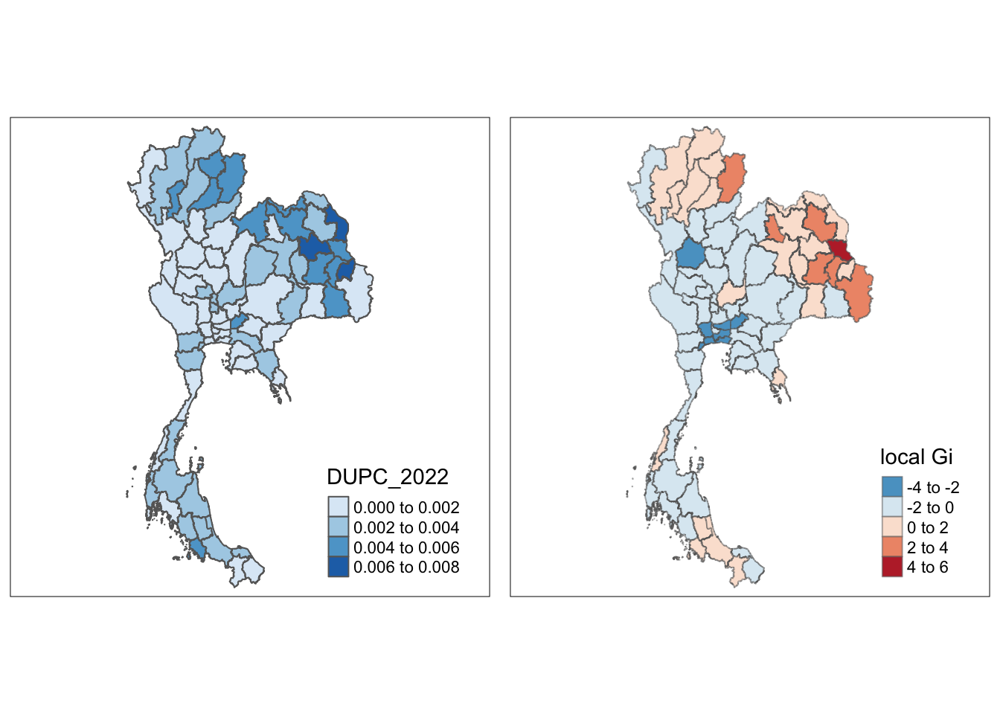
DTPC
gimap_dtpc<-tm_shape(thai_trafficking_sf.gi) +
tm_fill(col = "gstat_fixed",
style = "pretty",
palette="-RdBu",
title = "local Gi") +
tm_borders(alpha = 0.5)
tmap_arrange(dtpc_2022, gimap_dtpc, asp=1, ncol=2)Variable(s) "gstat_fixed" contains positive and negative values, so midpoint is set to 0. Set midpoint = NA to show the full spectrum of the color palette.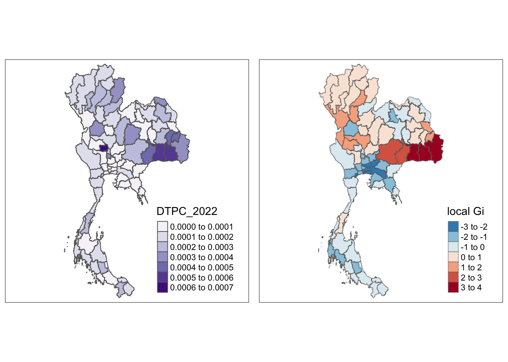
14.3 Emerging Hot Spot Analysis
EHSA identifies trends in spatial clustering over time, combining the Gi* statistic with the Mann-Kendall trend test to detect temporal patterns in hot and cold spots.
# ehsa <- emerging_hotspot_analysis(x = spt, .var = "DUPC", k = 1, nb_col = wm_q, wt_col = rswm_q, nsim = 99, threshold = 0.05)In this iteration, we are unable to run EHSA due to the presence of empty neighbour sets (Region 68).
15. Conclusion & Summary
In investigating both the global and local spatial autocorrelation of DUPC and DTPC in 2022, we find a consistent, statistically significant evidence of clustering in Northeastern & Eastern states for DUPC and DTPC respectively.
Notably, drug use showed stronger clustering compared to trafficking. While the analysis has been restricted temporally (due to the focus on 2022), we can see that in visualizing the indicators, there was still a strong concentration in the aforementioned areas.
Recognizing the limitations of this analysis, such as:
- Population dataset is static, set to 2023 and does not account for variations from 2017 to 2022,
- Analyzing thailand as a whole compared to specified regions
Moving forward these points of concern can be addressed in future iterations, and for now analysis has been supplemented by employing functions from the sfdep package, trying out new functions such as the SpaceTimeCube as well as Emerging Hot Spot Analysis.